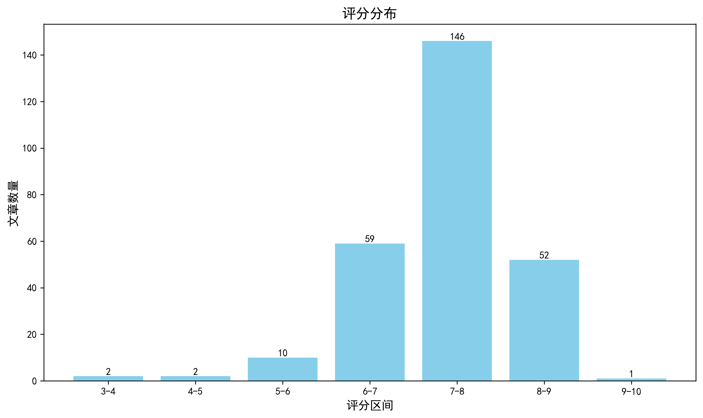

神经科学快讯·第020期 Nature重磅：无需双链断裂的高效精准大片段DNA敲入技术，开启基因编辑新范式 (2026-07-26)
📊 本周概览
- 头条推荐: 0 篇
- 深度解读: 131 篇
- 简要提及: 107 篇
- 跨界启发: 0 篇
- 已过滤: 320 篇
🌏 环球视野

🌍 国家/地区分布 TOP 10
| 排名 | 国家 | 文章数量 |
|---|---|---|
| 1 | United States | 570 |
| 2 | China | 226 |
| 3 | United Kingdom | 141 |
| 4 | Germany | 105 |
| 5 | Canada | 59 |
| 6 | Switzerland | 57 |
| 7 | France | 38 |
| 8 | Japan | 31 |
| 9 | Australia | 30 |
| 10 | Korea | 29 |
总计: 1286 篇文章
🏢 研究机构 TOP 10
| 排名 | 机构 | 文章数量 |
|---|---|---|
| 1 | Chinese Academy of Sciences | 37 |
| 2 | Stanford University | 29 |
| 3 | University of Oxford | 25 |
| 4 | University of Pennsylvania | 24 |
| 5 | Fudan University | 24 |
| 6 | Howard Hughes Medical Institute | 21 |
| 7 | University of Cambridge | 20 |
| 8 | Tsinghua University | 17 |
| 9 | Harvard University | 17 |
| 10 | McGill University | 16 |
📊 评分分布
| 评分区间 | 文章数量 |
|---|---|
| 3-4 | 2 |
| 4-5 | 2 |
| 5-6 | 10 |
| 6-7 | 59 |
| 7-8 | 146 |
| 8-9 | 52 |
| 9-10 | 1 |
总计: 272 篇评分文章
📈 各领域文章分布
| 领域 | 深度解读 | 简要提及 | 总计 |
|---|---|---|---|
| 未知领域 | 0 | 63 | 63 |
| 系统与环路神经科学 | 26 | 4 | 30 |
| 感觉与运动神经科学 | 18 | 11 | 29 |
| 分子与细胞神经科学 | 23 | 4 | 27 |
| 认知神经科学 | 19 | 8 | 27 |
| 临床与转化神经科学 | 12 | 10 | 22 |
| 计算与理论神经科学 | 13 | 2 | 15 |
| 方法学 | 12 | 2 | 14 |
| 发育神经科学 | 7 | 2 | 9 |
| 社会与情感神经科学 | 1 | 1 | 2 |
合计: 深度解读 131 篇，简要提及 107 篇，共 238 篇
📚 精选文献（按领域分类）
临床与转化神经科学
Single-cell multiomics connects 3D genome and transcriptome alterations in Alzheimer's disease.
深度解读 8.7/10中文标题: 单细胞多组学连接阿尔茨海默病中3D基因组和转录组的改变
作者: Zhang Y, Lu X, Kunisky AK et al.
关键词: 单细胞多组学, 3D基因组, 阿尔茨海默病, 人类, 全脑, 空间转录组
亮点: 单细胞多组学揭示3D基因组重组是阿尔茨海默病细胞类型特异性基因表达失调的新机制。
核心优势: 首次在单细胞分辨率下联合分析AD患者脑组织中3D基因组与转录组，结合空间转录组和深度学习预测。
研究局限: 基于死后脑组织样本，可能受死后间隔影响；深度学习模型的可解释性有限；需更多队列验证。
目标读者: 神经科学、表观遗传学、计算生物学和神经退行性疾病研究者
推荐理由: 这项研究首次在单细胞水平联合解析阿尔茨海默病（AD）患者脑组织的三维基因组结构与转录组变化，揭示了染色质重组与细胞类型特异性基因表达失调之间的直接联系。通过GAGE-seq方法并结合空间转录组数据，为理解AD的表观遗传机制提供了全新维度，也为未来靶向染色质结构的治疗策略奠定了基础。
中文标题: 脑静脉血流通过脑膜淋巴管调节颅内压和脑清除
作者: Marie-Renee El Kamouh, Myriam Spajer, Stéphanie Lenck
关键词: MRI, 人类, 小鼠, 硬脑膜静脉窦, 颅内高压, 脑膜淋巴管
亮点: 脑静脉血流通过脑膜淋巴管调控颅内压与脑清除的新机制
核心优势: 结合人体影像与动物模型，首次揭示静脉血流通过脑膜淋巴管调控颅内压的完整通路
研究局限: 小鼠模型为急性结扎，与IIH慢性病程不完全一致；人体影像证据为相关性
目标读者: 神经血管生理学家、脑淋巴系统研究者、神经内科医生（特别是IIH方向）
推荐理由: 该研究通过临床影像与动物模型相结合，揭示了脑静脉血流通过脑膜淋巴管调节颅内压及脑清除的关键机制。特发性颅内高压患者的静脉窦狭窄导致静脉周围液体异常和脑水肿，而小鼠颈静脉结扎模型进一步证实了静脉血流障碍引发短暂颅内高压和脑水肿。这一发现不仅为IIH的病理生理提供了新解释，也为通过干预静脉-淋巴通路治疗颅内压异常和相关神经疾病（如阿尔茨海默病）开辟了新方向。研究整合了临床观察与机制探索，具有较强的转化价值。
中文标题: 局部PD-1 CAR T疗法重编程神经炎症
作者: Shalita R, Ben Yehuda M, Gur C et al.
关键词: 单细胞RNA测序, CAR T细胞治疗, 多发性硬化症, 神经炎症, B细胞, 浆细胞
亮点: 局部PD-1 CAR T疗法通过重编程神经炎症实现精准免疫调控
核心优势: 首次利用单细胞组学鉴定MS中致病性PD-1+ Tfh样细胞，并设计局部释放IL-10的CAR T细胞精准清除，开辟了神经免疫疾病局部免疫治疗新范式。
研究局限: 主要基于小鼠模型验证，人体疗效和安全性未知；CAR T细胞持久性和脱靶风险仍需深入评估。
目标读者: 神经免疫学、CAR T细胞工程、多发性硬化症和自身免疫疾病研究者
推荐理由: 本研究通过大规模单细胞RNA测序构建了多发性硬化症患者脑脊液、脑和血液的免疫细胞图谱，发现疾病特异的IgG+ B细胞和浆细胞富集，并定位到罕见活化T细胞亚群。在此基础上提出局部PD-1 CAR T细胞疗法重塑神经炎症的新策略，为抗体阴性复发患者提供了精准免疫干预的潜在靶点。方法学上，跨组织单细胞分析与临床转化紧密结合，为神经免疫疾病研究树立了范式。
中文标题: 利用小鼠和人类模型的多平台方法开发结核性脑膜炎的宿主导向治疗
作者: Carlos E. Ruiz-Gonzalez, Medha Singh, Sanjay K. Jain
单位: Department Of Pediatrics, Cincinnati Children'S Hospital Medical Center, Cincinnati, Oh, Usa
研究地区: United States
关键词: 结核性脑膜炎, 宿主导向治疗, 免疫调节, 跨物种平台, 人类脑类器官, 小鼠模型
亮点: 多平台筛选揭示结核性脑膜炎宿主导向治疗新候选药物
核心优势: 结合小鼠模型、新型人脑类器官和患者PBMC，系统评估12种免疫调节药物，揭示多种药物优于标准治疗。
研究局限: 结果主要基于动物和体外模型，临床转化仍需大规模临床试验验证；药物作用机制和长期安全性有待深入研究。
目标读者: 神经感染病学、神经免疫学、药物开发及转化医学研究者
推荐理由: 该研究通过整合小鼠模型和新型免疫血管化人类脑类器官模型，系统评估了12种免疫调节药物对结核性脑膜炎的宿主导向治疗效果。跨物种平台的设计有效弥补了传统动物模型与人类病理的差距，为神经炎症性疾病的药物筛选提供了兼具临床终点和机制解析的可迁移方法。对于关注神经免疫互作及转化策略的研究者，这是一项兼具深度与广度的示范性工作。
中文标题: 超越心力衰竭的心脑连续体映射：为何神经科学至关重要
作者: Zhang X, Grigoryan KA, Scherf N et al.
关键词: 心脑轴, 神经心脏病学, 心力衰竭, 认知障碍, 临床综述
亮点: 系统梳理心脑连续体超越心衰的新视角，强调神经科学在心脏疾病中的关键作用
核心优势: 整合多学科证据，提出整合心脑研究的临床意义
研究局限: 缺乏具体数据支持，主要基于作者观点
目标读者: 神经科学家、心脏病专家、心身医学研究者
推荐理由: 本文系统综述了心力衰竭及其相关心血管疾病与大脑功能障碍之间的双向病理生理联系，提出了'心脑连续体'的概念框架。作者强调，神经科医生在识别和处理心衰患者中的认知障碍、卒中及自主神经功能紊乱方面具有不可替代的作用。该文为跨学科协作提供了新的临床思路，对神经心脏病学领域的临床实践具有重要启示。
中文标题: 空间转录组学揭示常见人μ-阿片受体变体Oprm1A118G雌性小鼠阿片类药物依赖后不同的细胞类型动态
作者: Yihan Xie, Anna K. Leonard, Julie A. Blendy
关键词: 空间转录组学, 小鼠, 阿片依赖, μ-阿片受体, 基因变异, 雌性小鼠
亮点: 结合人类遗传变异与空间转录组学，揭示阿片依赖中细胞类型动态的性别特异性机制。
核心优势: 首次将常见人类μ-阿片受体基因变异与阿片依赖的细胞类型空间动态联系起来，为个体化治疗提供新靶点。
研究局限: 仅关注雌性小鼠，未包括雄性，可能限制泛化；且空间转录组学分辨率有限，不能完全替代单细胞分辨率。
目标读者: 神经科学、阿片研究、遗传学、空间转录组学、性别差异研究者
推荐理由: 该研究利用空间转录组学技术，在携带常见人类μ-阿片受体变体Oprm1A118G的雌性小鼠中，揭示了阿片依赖过程中不同脑区细胞类型的动态变化。结果不仅为理解遗传变异如何调控阿片反应的性别特异性提供了新机制，也为开发个性化阿片使用障碍治疗策略指明了潜在靶点。
中文标题: 用于抑郁症迷走神经刺激的无线、可贴附皮肤的三维液态金属电极贴片
作者: Park W, Kim E, Kang DH et al.
关键词: 无线, 可穿戴设备, 液态金属电极, 迷走神经刺激, 抑郁症, 神经调控
亮点: 无线皮肤贴片结合3D液态金属电极，实现抑郁治疗中迷走神经的无创高效刺激
核心优势: 创新的3D液态金属电极设计，实现稳定皮肤贴合与高效神经刺激
研究局限: 缺乏长期人体临床试验数据，实际疗效和安全性需进一步验证
目标读者: 生物电子医学、神经调控、材料科学研究者
推荐理由: 这项研究开发了一种集成3D液态金属电极的无线可穿戴皮肤贴片，实现对迷走神经的无创精准电刺激，为抑郁症的神经调控治疗提供了便捷、低成本的解决方案。其柔性电极设计解决了传统硬质电极的皮肤贴合问题，有望推动迷走神经刺激疗法从临床环境向家庭日常应用的转化，对精神病学与神经工程交叉领域具有重要启示。
中文标题: 帕金森病中微生物组到黑质纹状体易损性的图谱优先考虑SCFA相关的肠-脑轴
作者: Ghosh, N.
关键词: 微生物组, 短链脂肪酸, 肠-脑轴, 帕金森病, 多巴胺系统, 计算建模
亮点: 提出NGBCS评分系统，优先化SCFA-IL1B轴为帕金森病潜在炎症通路。
核心优势: 集成多组学数据的轻量级计算框架，系统评估微生物-代谢物-宿主基因-脑区联系。
研究局限: 完全基于公开数据库和生物信息学分析，缺乏湿实验验证，预测结果需后续检验。
目标读者: 计算神经科学、微生物组学和帕金森病研究者
推荐理由: 该研究开发了一套轻量级计算流程MiNi-PD，系统整合肠道微生物功能、代谢物、宿主基因和脑区转录组数据，优先筛选出与SCFA（短链脂肪酸）相关的肠-脑轴，揭示帕金森病中黑质纹状体易损性的潜在微生物-代谢-免疫机制。方法学上可推广至其他神经退行性疾病，为理解微生物组如何影响特定脑区脆弱性提供了可量化的整合分析框架。
中文标题: 血管性血友病因子激活驱动缺血性卒中无复流现象的机制
作者: Laroche A, Rovito N, Liu A et al.
关键词: 缺血性卒中, 无复流现象, von Willebrand因子, 血栓形成, 微血管阻塞, 小鼠模型
亮点: 揭示von Willebrand因子激活在缺血性卒中无复流中的关键机制
核心优势: 首次系统阐明vWF激活驱动无复流的分子通路，提供潜在治疗靶点。
研究局限: 主要基于动物模型，临床转化证据不足；样本量可能有限。
目标读者: 脑血管病研究者、止血与血栓领域专家、神经科学家
推荐理由: 该研究揭示了von Willebrand因子激活驱动缺血性卒中后无复流现象的关键机制，为理解脑微血管功能障碍提供了新视角。通过阐明vWF在血栓形成和血流受阻中的具体作用，不仅深化了对卒中病理生理的认识，也为开发针对无复流的治疗策略指明了分子靶点，具有重要的临床转化潜力。
中文标题: 情景记忆ERP反映了临床前阿尔茨海默病的进展
作者: Raposo Pereira, F., Chaumon, M., Dubois, B. et al.
关键词: EEG, 事件相关电位, 情景记忆, 阿尔茨海默病, 临床前诊断, 认知正常老年人
亮点: 纵向EEG-ERP标记揭示临床前阿尔茨海默病进展，为早期风险分层提供非侵入性指标
核心优势: 5年纵向设计结合多个ERP成分（FN400、P600、监测电位）及源定位，系统刻画了认知正常Aβ+个体的记忆衰退轨迹
研究局限: 样本量较小（每组15人），且仅纳入单一记忆范式，统计效力有限，结果需在独立队列中验证
目标读者: 阿尔茨海默病早期诊断、认知老化、EEG生物标记物及神经心理学研究者
推荐理由: 本研究通过高密度EEG记录认知正常老年人的情景记忆任务，发现事件相关电位（ERPs）可区分β-淀粉样蛋白阳性进展者与稳定者，为阿尔茨海默病的临床前诊断提供了非侵入性、低成本的电生理标记。这一发现拓展了ERPs在早期AD检测中的应用价值，并为大规模筛查和纵向监测提供了新的可行方案。
中文标题: 老年黑人中炎症蛋白与认知衰退
作者: Yaskolka Meir A, Adeola HA, Tasaki S et al.
关键词: 人类, 炎症标记物, 认知衰退, 蛋白质组学, 种族差异, 纵向研究
摘要: 聚焦老年黑人群体，揭示炎症蛋白作为认知下降的生物标志物
优势: 针对代表性不足的种族群体，提供特定于老年黑人的炎症-认知关联证据 局限: 观察性设计，因果推断受限；样本量可能有限 受众: 衰老神经科学、种族健康差异、蛋白质组学研究者
中文标题: 功能性肌肉网络作为中风后运动损伤和治疗反应的生物标志物
作者: O'Reilly D, Pregnolato G, Turolla A et al.
摘要: 功能肌肉网络作为临床可用的生物标志物，为中风康复评估提供新框架
优势: 首次将肌肉协同网络分析应用于预测个体化治疗反应，具有潜在转化价值 局限: 样本量有限且缺乏独立验证队列，网络构建方法依赖特定EMG设置 受众: 神经康复、计算神经科学及运动控制领域研究者
中文标题: 额叶皮质厚度的空间特异性模式预示主观认知下降个体未来更快的淀粉样蛋白积累
作者: Vidaurre, D., Moreno, A., Sotolongo-Grau, O. et al.
摘要: 发现无症状个体额叶皮层厚度模式可预测五年后淀粉样蛋白积累速度
优势: 利用纵向数据建立早期结构指标与后续病理变化的关联 局限: 样本量有限，单中心，未在独立队列验证，且效应大小未知 受众: 阿尔茨海默病早期检测、神经影像学、认知衰退临床研究者
中文标题: 单侧纹状体深部脑刺激改善认知控制
作者: Sachse EM, Dastin-van Rijn EM, Bennek JP et al.
摘要: 单侧纹状体DBS增强认知控制的新证据
优势: 聚焦DBS对认知控制的具体效应，行为学与电生理结合 局限: 缺乏机制深入解析，单侧刺激的普适性未验证 受众: 认知神经科学、神经调控、运动障碍疾病研究者
中文标题: 阿尔茨海默病试验结果为靶向tau蛋白的药物增添势头
作者: Smith JE
摘要: 首个降低tau蛋白并减缓认知衰退的药物试验结果引发关注，尽管数据令人困惑。
优势: 及时报道了阿尔茨海默病治疗领域的前沿进展，突出tau靶向药物的最新趋势。 局限: 缺乏关键数据细节和深入分析，内容过于简化，未对困惑数据提供解释。 受众: 对AD药物研发感兴趣的神经科学家、临床医生和患者。
中文标题: 双侧伽玛刀放射外科治疗严重特发性震颤的前瞻性试验
作者: Régis J, Mira V, Pinto S et al.
摘要: 双侧伽玛刀放射治疗重度特发性震颤的安全性与有效性前瞻性评估
优势: 前瞻性临床试验设计，评估双侧伽玛刀治疗对药物难治性重度震颤的长期效果 局限: 缺乏随机对照组，可能无法完全排除安慰剂效应或自然病程变化的影响 受众: 功能性神经外科医生、运动障碍疾病专家、伽玛刀放射外科从业者
Treatment escalation after clinically silent MRI lesions in relapsing-remitting multiple sclerosis.
简要提及 6.3/10中文标题: 复发-缓解型多发性硬化中临床静默MRI病变后的治疗升级
作者: Daruwalla C, Kremler C, Patti F et al.
摘要: 基于无症状MRI病灶指导复发缓解型多发性硬化治疗升级的临床决策依据
优势: 聚焦临床实践中常见的决策难题，提供真实世界数据支持 局限: 可能为回顾性设计，因果推断受限，且缺乏完整研究细节 受众: 神经内科医生、多发性硬化诊疗专家、临床研究人员
'Only in England': the origins of the British Migraine Association and Migraine Trust, 1954-66.
简要提及 5.4/10中文标题: “仅在英格兰”：英国偏头痛协会与偏头痛信托基金的起源，1954-66年
作者: Weatherall M
摘要: 详实记录英国偏头痛患者组织与慈善机构的早期历史
优势: 基于档案资料还原了偏头痛倡导组织创立的社会与医学背景 局限: 缺乏对偏头痛科学研究的直接贡献，且仅限于英国地域 受众: 医学史研究者、偏头痛领域临床医生及患者组织兴趣者
中文标题: FMRP-LEAN：一种符合HIPAA标准的AI增强型LIMS架构，用于端到端临床检测工作流优化
作者: Eva McCord, Ernest Pedapati, Zag ElSayed
摘要: 面向临床检测的HIPAA合规AI增强LIMS架构，提升多日检测工作流可见性和合规性。
优势: 将有限状态机模型与AI辅助QC结合，在保障数据隐私前提下优化工作流透明度。 局限: 缺乏与现有系统的定量比较和严格性能评估，证据说服力不足。 受众: 临床实验室信息学、生物样本库管理、转化医学研究者
分子与细胞神经科学
中文标题: PKMζ-PKCι/λ双敲除证明非典型PKC对于海马LTP和空间记忆的维持至关重要
作者: Tsokas P, Hsieh C, Grau-Perales A et al.
关键词: 基因敲除, 海马, LTP, 空间记忆, 非典型PKC, 小鼠
亮点: 遗传学证据证明aPKC家族是海马LTP和空间记忆维持所必需的
核心优势: 通过双敲除策略直接解决了aPKC在记忆维持中必要性的长期争议，提供了最直接的遗传学证据
研究局限: 可能需要进一步验证其他脑区和记忆类型；双敲除的潜在发育补偿效应未能完全排除
目标读者: 学习记忆、突触可塑性和神经遗传学研究者
推荐理由: 该研究通过双重敲除PKMζ和PKCι/λ，直接证明了非典型PKC家族在维持海马长时程增强（LTP）和空间记忆中的关键作用，解决了长期以来关于PKMζ必要性的争议。实验结合电生理记录和水迷宫行为学，为突触可塑性维持的分子机制提供了决定性的遗传学证据，对记忆存储理论具有重要影响。
中文标题: 一种基因编码的离子应激传感器将细胞质子动力学与睡眠联系起来
作者: Zhijian Ji, Bingying Wang, Zhimin Ma et al.
单位: Cardiovascular Research Institute, University Of California, San Francisco, San Francisco, Ca, Usa; Department Of Molecular And Cellular Physiology, Stanford University School Of Medicine, Stanford, Ca, Usa; Nagi Bioscience Sa, Rue Des Jordils 1A, 1025 Saint-Sulpice, Switzerland 等
研究地区: United States, Switzerland
关键词: 遗传编码传感器, 离子应激, 秀丽隐杆线虫, 睡眠, 微流控, 核转位成像
亮点: 新型遗传编码传感器揭示质子离子节律调控发育性睡眠的新机制
核心优势: 开发了首个活体离子应激传感器GENTIS，直接证明了质子积累通过V-ATP酶调控睡眠。
研究局限: 研究限于线虫模型，在高等动物中的泛化性及睡眠调控的保守性有待验证。
目标读者: 神经科学、睡眠研究、细胞生物学家及生物传感器开发者
推荐理由: 本研究开发了遗传编码的核转位离子传感器（GENTIS），首次实现了活体动物内离子应激的实时可视化。利用该传感器结合自动化微流控平台，在线虫中发现蜕皮期间肠道离子强度出现高度同步的节律性升高，与发育定时睡眠紧密相关。工作揭示了细胞质子动态与睡眠之间的直接联系，为理解睡眠的细胞机制提供了全新工具和视角，对分子与细胞神经科学领域具有重要创新价值。
中文标题: 多巴胺D2受体绕过经典信号直接调节NMDA受体功能和厌恶学习
作者: Sheng Gong, Joy Adler, Ying Zhu et al.
单位: Department Of Psychiatry, Columbia University Vagelos College Of Physicians & Surgeons, New York, Ny 10032, Usa; Barnard College Of Columbia University, New York, Ny 10032, Usa; Department Of Pharmacology, University Of Colorado School Of Medicine, Anschutz Medical Campus, Aurora, Co 80045, Usa
资深研究者: Sheng Gong (h指数=21)
研究地区: United States
关键词: D2R, NMDA受体, GluN2B, 异源相互作用, 伏隔核, 厌恶学习
亮点: 发现D2受体通过物理耦合直接抑制NMDA受体，绕过经典信号通路，实现输入特异性和厌恶学习调控
核心优势: 揭示D2R调节谷氨酸突触传递的非经典机制，通过受体-受体直接相互作用，并证明其行为相关性
研究局限: 机制仅基于NAc脑区，限于D2R与GluN2B-NMDA的相互作用，泛化性需验证；详细结构基础未明
目标读者: 多巴胺信号、突触可塑性、谷氨酸受体、厌恶学习和成瘾领域的研究者
推荐理由: 本研究揭示D2R通过直接物理耦联GluN2B-NMDA受体，绕过经典G蛋白信号通路，精准调控伏隔核中棘神经元的突触功能与厌恶学习。这一发现颠覆了以往对D2R信号转导的认知，为理解成瘾、精神分裂症等疾病中D2R功能障碍提供了全新的分子机制，并开辟了靶向受体-受体相互作用而非传统配体的治疗策略。
中文标题: 条件性删除所有神经连接蛋白定义了神经连接蛋白作为必需突触组织蛋白功能的多样性
作者: Jiang, M., Li, Y., Artyukhova, M. et al.
关键词: 条件性基因敲除, 神经连接蛋白, 突触组织者, 电生理, 分子多样性, 小鼠
亮点: 首个系统性跨突触类型比较揭示neurexin的突触特异性功能
核心优势: 使用三重条件性敲除小鼠结合多种电生理和成像技术，直接比较了不同突触类型中neurexin的差异性作用
研究局限: 研究仅限于特定脑区和神经元亚型，且未探讨Neurexin-1γ的贡献可能影响结论完整性
目标读者: 突触生物学、神经递质分子机制、神经回路研究领域的科研人员
推荐理由: 该研究通过条件性敲除所有神经连接蛋白基因，系统比较了不同突触类型中神经连接蛋白的突触组织者功能，揭示了其功能多样性与必要性。尽管原始论文因图像问题被撤回，但重新分析确认了核心结论，为突触粘附分子的功能研究提供了不可替代的基准数据。
中文标题: 人类海马体老化过程中的表观遗传和三维基因组重编程
作者: Zemke NR, Lee S, Mamde S et al.
资深研究者: Chen C (h指数=108)
关键词: 单核多组学, 表观基因组, 3D染色质架构, 人类, 海马, 衰老
亮点: 多组学单核分析揭示人类海马衰老中细胞类型特异性的表观基因组和3D基因组重编程
核心优势: 整合单核转录组、表观组和3D基因组，首次系统描绘人类海马衰老过程中的动态基因调控变化，并发现关键细胞亚群替换
研究局限: 样本量有限，且主要为相关性分析，因果关系未验证
目标读者: 神经科学家、表观遗传学家、计算生物学家、衰老研究者
推荐理由: 该研究首次以单核分辨率整合了人类海马体衰老过程中的基因表达、染色质可及性、DNA甲基化和3D染色质架构，揭示了线性和非线性动态的基因调控重编程。特别值得注意的是，发现50-75岁间胚胎卵黄囊来源的小胶质细胞被外周血单核细胞样细胞取代，为理解衰老相关的神经炎症和认知衰退提供了全新视角。这项多模态单核组学分析框架也为其他脑区的衰老研究树立了方法学标杆。
中文标题: 空间多组学揭示突触核蛋白病中的早期突触修剪和情境依赖的多巴胺能脆弱性
作者: Svenja-Lotta Rumpf, Felix L. Strübing, Thomas Koeglsperger
单位: German Center For Neurodegenerative Diseases (Dzne), Munich, Germany; Koeglsperger@Med; Thomas 等
研究地区: Germany
关键词: 空间转录组学, 空间蛋白质组学, 突触修剪, 多巴胺能神经元, α-突触核蛋白, 人类脑组织
亮点: 空间多组学揭示帕金森病发生前补体介导的抑制性突触重塑
核心优势: 结合空间转录组学、蛋白质组学和种子扩增实验，在iLBD阶段发现补体C1QC上调与抑制性突触丢失，揭示前驱期分子事件。
研究局限: 关联性而非因果性，样本量可能有限（人脑组织），且仅聚焦中脑黑质，其他脑区未涉及。
目标读者: 神经退行性疾病研究者、突触生物学、空间组学专家、系统生物学
推荐理由: 该研究通过整合空间转录组学、空间蛋白质组学和α-突触核蛋白种子扩增实验，对死后中脑组织进行系统分析，首次在分子水平上揭示了早期突触修剪事件在帕金森病（PD）谱系中的关键作用，并阐明了多巴胺能神经元脆弱性的环境特异性。研究发现αSyn播种活性与多巴胺能神经元损失在PD中相关，但在阿尔茨海默病伴路易体病理中不相关，提示不同突触核蛋白病的分子机制存在差异。该工作为理解PD的早期分子病理提供了高分辨率的空间图谱，并为开发早期诊断和干预策略奠定了多组学基础。
中文标题: 皮层灰质髓鞘在不增加传导速度的情况下降低动作电位传播的能量成本
作者: Kotler O, Khrapunsky Y, Melamed I et al.
关键词: 皮层灰质, 髓鞘, 能量代谢, 动作电位传导, 电生理, 计算建模
亮点: 发现皮质灰质髓鞘降低能量成本而不影响传导速度，揭示灰质髓鞘的新功能
核心优势: 首次直接测量并证明灰质髓鞘的节能效应，挑战了髓鞘主要加速传导的传统观点
研究局限: 局限于特定脑区和实验条件，分子机制和长期可塑性尚不明确
目标读者: 神经科学家、计算神经科学家、神经代谢研究者、神经发育与疾病研究者
推荐理由: 该研究通过实验与建模结合，揭示了皮层灰质髓鞘化主要降低动作电位传播的能量消耗，而非传统认为的加速传导。这一发现颠覆了对灰质髓鞘功能的经典理解，为脑能量预算的优化机制提供了新视角，并对脱髓鞘疾病中能量代谢障碍的病理机制具有潜在启示。
中文标题: 局灶性星形胶质细胞缺失揭示损伤再增殖过程中的核转位
作者: Marina Herwerth, Matthias T. Wyss, Bruno Weber
关键词: 双光子成像, 单细胞转录组, 小鼠, 躯体感觉皮层, 星形胶质细胞消融, 核转位
亮点: 星形胶质细胞局部丢失后的核移位与再群体化动力学
核心优势: 首次通过纵向双光子成像结合空间转录组学，直接观察并量化了星形胶质细胞在局灶性损伤后的增殖、多核状态及核迁移过程。
研究局限: 仅针对特定疾病模型（AQP4抗体介导）和单一脑区，人类星形细胞病变中的普适性及长期功能影响尚需验证。
目标读者: 胶质细胞生物学、神经免疫、神经损伤修复及体内成像研究者
推荐理由: 本研究通过体内双光子成像与时空转录组结合，揭示了局灶性星形胶质细胞丢失后残留细胞发生核转位等动态反应以重新填充损伤区的新机制。该发现为理解星形胶质细胞在神经免疫疾病（如视神经脊髓炎）中的修复潜能提供了重要细胞学基础，同时为体内长时程追踪胶质细胞行为建立了可迁移的实验范式。
中文标题: 储存单胺和谷氨酸的突触小泡在蛋白质组成上存在差异
作者: Hrach Asmerian, Alexia J. Diaz, Hongfei Xu et al.
单位: Center For Neural Science And Medicine, Board Of Governors Regenerative Medicine Institute, Departments Of Biomedical Sciences And Neurology, Cedars-Sinai Health Sciences University, Los Angeles, Ca, Usa; Departments Of Physiology And Neurology, University Of California, San Francisco School Of Medicine, San Francisco, Ca, Usa
研究地区: United States
关键词: 突触小泡, 单胺类, 谷氨酸, 蛋白质组学, VMAT2, VGLUT2
亮点: 比较VMAT2和VGLUT2突触小泡的蛋白质组差异，揭示SCAMP5选择性调控谷氨酸能小泡回收
核心优势: 多层面验证（蛋白质组、原代神经元、脑组织）发现VMAT2和VGLUT2小泡的蛋白质组成差异，并定位功能分子SCAMP5
研究局限: 功能实验主要在异源表达系统中进行，内源性SCAMP5在体内其他神经元类型中的角色有待探究
目标读者: 突触传递、神经递质释放、单胺系统研究者和蛋白质组学研究者
推荐理由: 该研究通过比较含有VMAT2和VGLUT2的突触小泡的蛋白质组成，揭示了单胺类和谷氨酸类神经递质释放机制的分子差异。对理解神经调质与经典递质的释放机制有重要价值，也为突触小泡功能异质性提供了新的蛋白质组学视角。
中文标题: 中央突触中移动和簇状CaV2.1通道的功能相关性
作者: El khallouqi, a., Amaral, C., Lassen, A. S. et al.
关键词: 单粒子追踪, 数学建模, CaV2.1, 突触前, 海马, 神经递质释放
亮点: 稳态聚集与动态移动CaV2.1通道协调频率依赖的突触传递可靠性
核心优势: 首次揭示移动CaV2.1通道在频率>10Hz时对维持释放可靠性至关重要，且光遗传学手段直接验证功能
研究局限: 仅局限于海马谷氨酸能突触，且移动通道的具体分子机制（如与哪些蛋白相互作用）尚不清楚
目标读者: 突触传递、钙通道生物学、神经递质释放机制研究者
推荐理由: 该研究通过单粒子追踪实验与数学模型结合，揭示了海马谷氨酸能突触中CaV2.1钙通道的移动性与聚集分布对神经递质释放可靠性的不同贡献。传统观点认为只有聚集在释放位点的通道才有效，而本研究证明移动的分散通道可通过协同作用增强释放概率，为理解突触传递的灵活调节提供了新机制。
中文标题: 溶酶体损伤的全局细胞反应
作者: Jia J
关键词: 溶酶体, 细胞应激, 膜损伤, 神经退行性疾病, 细胞器互作, 细胞稳态
亮点: 系统整合溶酶体损伤后局部修复与整体细胞响应（翻译、代谢、转录）的最新概念进展，揭示其在细胞稳态与疾病中的关键角色。
核心优势: 全面覆盖了从局部损伤修复到整体细胞重编程的跨层次调控网络，提供了连贯的概念框架。
研究局限: 综述性质，缺乏原始实验数据支撑，对具体信号机制和争议点的讨论深度有限。
目标读者: 细胞生物学、膜损伤生物学、神经退行性疾病及溶酶体稳态研究者
推荐理由: 该研究系统描绘了细胞应对溶酶体损伤的全局响应机制，揭示了溶酶体如何通过膜修复、信号转导及细胞器互作维持稳态。对于神经科学领域，这一发现为理解溶酶体功能障碍在阿尔茨海默病、帕金森病等神经退行性疾病中的核心作用提供了关键细胞生物学基础，并提示了潜在治疗靶点。
中文标题: 淀粉样前体蛋白家族成员的转二聚化通过不同信号通路诱导突触前和突触后分化
作者: Rajender R, Foth N, Eggert S et al.
关键词: APP家族, 跨二聚化, 突触前分化, 突触后分化, 信号通路
亮点: 揭示APP家族跨二聚化通过不同信号通路双向调控突触分化
核心优势: 发现APP家族成员跨二聚化可同时诱导突触前和突触后分化，为阿尔茨海默病中突触功能障碍提供新机制
研究局限: 缺乏对体内生理环境中该现象的验证，且二聚化对突触功能长期影响未涉及
目标读者: 突触生物学、阿尔茨海默病机制、信号转导研究者
推荐理由: 该研究揭示了淀粉样前体蛋白（APP）家族成员通过跨二聚化作用，经由不同信号通路分别诱导突触前和突触后分化，为理解APP在突触形成与成熟中的双重角色提供了分子机制。这一发现不仅深化了对突触发育调控网络的认识，也为阿尔茨海默病中突触功能异常的病理机制提供了新线索。
中文标题: 使用单分子质量光度法解析蛋白质聚集的机制及抑制剂的效果
作者: Lyons A, Paul SS, MacArthur JE et al.
关键词: 单分子质量光度法, 蛋白质聚集, 抑制剂, 神经退行性疾病, 聚集机制
亮点: 单分子质量光度学揭示蛋白质聚集机制及抑制剂作用的实时动态
核心优势: 利用单分子技术直接观测聚集过程，提供高分辨率动力学信息
研究局限: 主要基于体外条件，体内相关性及神经退行性疾病的直接证据有限
目标读者: 蛋白质聚集、神经退行性疾病、单分子生物物理研究者
推荐理由: 本文利用单分子质量光度法实时追踪蛋白质聚集的动态过程，并定量评估抑制剂的阻断效果。该方法无需标记即可分辨不同寡聚体组分，为神经退行性疾病中淀粉样蛋白聚集的机制研究提供了高分辨工具，尤其有助于解析毒性寡聚体的形成路径，对药物筛选与开发具有直接指导意义。
Distinct Filament Conformation for Receptor-Bound Amyloid-β from Alzheimer’s Disease Brain
深度解读 7.7/10中文标题: 阿尔茨海默病脑中受体结合型淀粉样β的独特丝状构象
作者: Mikhail A. Kostylev, Carmen Butan, Stephen M. Strittmatter
关键词: 阿尔茨海默病, 淀粉样β, 冷冻电镜, 蛋白构象, 受体结合
亮点: 首次解析受体结合态Aβ纤维的独特构象，揭示与游离纤维的结构差异
核心优势: 揭示了受体结合态Aβ纤维的独特构象，为理解AD发病机制和开发靶向治疗提供新结构基础
研究局限: 主要基于体外或重组系统，缺乏体内验证，且未阐明该构象与病理表型的直接关联
目标读者: 结构生物学家、阿尔茨海默病研究者、神经退行性疾病领域学者
推荐理由: 该研究首次解析了阿尔茨海默病脑中受体结合状态下的淀粉样β纤维独特构象，揭示了与游离态纤维显著不同的结构特征。这一发现为理解Aβ的病理聚集机制提供了新的分子视角，并可能解释不同受体介导的神经毒性差异。对于从事神经退行性疾病蛋白病理和结构生物学的读者，该工作不仅拓展了构象多样性的认知，也为设计靶向特定纤维构象的干预策略奠定了基础。
中文标题: CaMKII介导的相分离作为突触成熟的驱动因素
作者: Idi W
关键词: 相分离, CaMKII, 突触成熟, 海马, 生化重建, 突触可塑性
亮点: 揭示CaMKII通过液-液相分离驱动突触成熟的新型分子机制
核心优势: 首次将相分离机制与CaMKII在突触成熟中的功能直接联系，提供了全新理论框架
研究局限: 仅基于体外和细胞实验，缺乏体内突触可塑性行为的直接证据
目标读者: 分子与细胞神经科学、突触生物学、相分离研究者
推荐理由: 该研究揭示了CaMKII通过液-液相分离驱动突触后致密区组装和成熟的新机制，为长期增强的分子基础提供了全新视角。通过体外重建和神经元实验，作者证明CaMKII的相分离能力对于突触结构成熟和功能维持至关重要。这一发现不仅解释了突触可塑性中蛋白动态聚集的物理基础，也为神经发育和认知障碍中突触异常的机制研究开辟了新方向。
中文标题: 通过自噬增强逆转年龄依赖性线粒体动力学改变在重编程人类神经元中的研究
作者: Klinman, E., Kwon, J.-S., Dolle, R. E. et al.
关键词: 直接重编程, 人类神经元, 线粒体动力学, 自噬, 转录组学, 衰老
亮点: 揭示人类神经元衰老中线粒体动力学与自噬障碍的补偿机制
核心优势: 利用人类原代成纤维细胞重编程神经元，结合活细胞成像和转录组学，系统揭示了年龄依赖性自噬流下降导致线粒体分裂融合代偿性增加。
研究局限: 研究基于体外培养的诱导神经元，缺乏体内衰老环境的验证，且样本量和批次效应控制未明确说明。
目标读者: 神经衰老、线粒体生物学、自噬机制和重编程技术研究者
推荐理由: 本研究利用微RNA诱导的直接重编程人类神经元（miNs）保留供体年龄特征的优势，系统比较了年轻与老年个体来源神经元的转录组和细胞器动力学。发现老年神经元中线粒体碎片化、自噬流受损，并通过增强自噬成功逆转了这些年龄依赖的线粒体动态缺陷。该工作为理解神经元衰老中细胞器互作机制提供了新视角，并提示自噬增强作为干预神经衰老的潜在策略。
中文标题: DNA张力计揭示驱动蛋白-1、-2和-3的捕获键解离动力学
作者: Noell CR, Ma TC, Jiang R et al.
关键词: DNA tensiometer, kinesin, catch-bond, 轴突运输, 单分子力谱, 分子马达
亮点: 利用DNA张力计揭示三类驱动蛋白catch-bond解离动力学的系统比较
核心优势: 首次系统比较kinesin-1, -2, -3的catch-bond特性，揭示亚型特异性力学调控
研究局限: 体外单分子实验，无法完全反映细胞内复杂环境对catch-bond的影响
目标读者: 分子马达、单分子生物物理、细胞骨架运输研究者
推荐理由: 本研究利用DNA张力计直接测量了三种驱动蛋白（kinesin-1, -2, -3）在机械力下的解离动力学，发现它们均呈现catch-bond行为——即力增强结合寿命。这一发现颠覆了传统滑动键模型，为理解轴突运输中分子马达在负载下的持续工作能力提供了新机制。方法上，DNA张力计作为一种可编程的力传感器，为活细胞甚至体内分子力的实时测量开辟了新路径。
中文标题: VAMP7依赖的线粒体-溶酶体接触促进胶质细胞线粒体动力学和多巴胺能神经元存活
作者: Wang H, Wang M, Tsai YT et al.
关键词: 线粒体-溶酶体接触, 胶质细胞, 多巴胺神经元, VAMP7, 线粒体动力学, 细胞器互作
亮点: 胶质细胞中VAMP7依赖的线粒体-溶酶体接触调控线粒体动态并支持多巴胺能神经元存活
核心优势: 首次在胶质细胞中鉴定VAMP7介导的线粒体-溶酶体接触功能，连接细胞器通讯与神经元保护
研究局限: 机制解析局限于细胞和动物模型，缺乏人类样本验证及VAMP7上下游信号通路的详尽刻画
目标读者: 细胞器生物学、胶质细胞与神经元互作、帕金森病机制研究者
推荐理由: 该研究揭示了胶质细胞中VAMP7依赖的线粒体-溶酶体接触在调节线粒体动力学和维持多巴胺能神经元存活中的关键作用。通过阐明星形胶质细胞如何通过细胞器互作支持神经元功能，为帕金森病等神经退行性疾病的胶质细胞病理机制提供了新见解。研究使用多种细胞和分子技术，是理解非细胞自主性神经元保护的典范。
The ARHGAP32 isoform PX-RICS is specifically targeted to inhibitory synapses by binding to gephyrin.
深度解读 7.2/10中文标题: ARHGAP32亚型PX-RICS通过与gephyrin结合特异性靶向抑制性突触
作者: Bai G, Huang R, Lian Y et al.
关键词: 抑制性突触, gephyrin, ARHGAP32, 蛋白互作, 突触靶向, 异构体
亮点: 发现ARHGAP32亚型PX-RICS通过直接结合gephyrin特异性靶向抑制性突触的分子机制
核心优势: 鉴定出PX-RICS作为抑制性突触特异性的脚手架蛋白，拓展了对突触组装调控的理解
研究局限: 缺乏体内功能验证和多模态实验支撑，机制细节有待深入
目标读者: 突触生物学、神经发育疾病、细胞骨架信号研究者
推荐理由: 该研究揭示了ARHGAP32的PX-RICS异构体如何通过直接结合gephyrin被特异性招募至抑制性突触，为理解抑制性突触后支架的分子组装提供了新机制。这一发现不仅填补了gephyrin结合蛋白谱的空白，也对兴奋/抑制平衡的调控研究具有重要启示，是突触分子组织领域的一项关键进展。
FMRP regulates neuronal RNA granules containing stalled ribosomes, not where ribosomes stall.
深度解读 7.2/10中文标题: FMRP调控含有停滞核糖体的神经元RNA颗粒，而非核糖体停滞的位置
作者: Li JT, Amiri M, Kailasam S et al.
关键词: FMRP, RNA颗粒, 核糖体停滞, 神经元, 翻译调控, 脆性X综合征
亮点: 揭示FMRP调控停滞核糖体RNA颗粒的新机制
核心优势: 区分FMRP对RNA颗粒组成与核糖体停滞位置的不同调控作用
研究局限: 缺乏摘要信息，可能样本量或验证不足
目标读者: 神经发育疾病、RNA生物学、翻译调控研究者
推荐理由: 该研究揭示了FMRP在神经元RNA颗粒中调控停滞核糖体的新机制，挑战了传统观点认为FMRP直接作用于核糖体停滞位点。这一发现为理解脆性X综合征的分子病理提供了关键线索，并深化了我们对局部翻译调控在神经可塑性和发育中作用的认识。
中文标题: 低径向力下kinesin-1的持续运动性和集体力产生
作者: Hensley AM, Yildiz A
关键词: 驱动蛋白, 集体力产生, 单分子力谱, 轴突运输, 光镊
亮点: 揭示低径向力下驱动蛋白-1持续性和集体力产生的增强机制
核心优势: 结合单分子光学镊子与集体实验，定量解析低径向力对kinesin-1步进行程和力输出的调控。
研究局限: 仅基于体外重构系统，缺乏细胞内环境验证，生理相关性待确认。
目标读者: 分子马达生物物理、细胞骨架运输、神经科学中轴突运输研究者
推荐理由: 本研究通过单分子力谱和光镊技术，揭示了kinesin-1在低径向力下增强的持续运动性和集体力产生机制。这一发现为理解神经元内长距离轴突运输的稳健性提供了分子基础，尤其是在拥挤或受限的微环境中。对于研究细胞内运输、分子马达协调以及神经退行性疾病中运输障碍的学者具有重要参考价值。
Photobiomodulation of immune crosstalk rescues neuroinflammation in Alzheimer's disease models.
深度解读 7.2/10中文标题: 光生物调节免疫串扰挽救阿尔茨海默病模型中的神经炎症
作者: Shen Q, Chang H, Li J et al.
关键词: 光生物调节, 阿尔茨海默病, 神经炎症, 免疫串扰, 小胶质细胞, 小鼠模型
亮点: 光生物调节通过调控免疫细胞间串扰减轻阿尔茨海默病模型神经炎症
核心优势: 将光生物调节的免疫调节机制与阿尔茨海默病神经炎症联系起来，提供了新的治疗靶点
研究局限: 缺乏人体临床数据，且光生物调节的剂量和长期安全性有待进一步验证
目标读者: 神经炎症、阿尔茨海默病、光生物调节及神经免疫研究者
推荐理由: 该研究揭示了光生物调节通过调控小胶质细胞介导的免疫串扰减轻阿尔茨海默病模型中的神经炎症，为开发非侵入性光疗策略提供了机制基础。其创新性在于将光生物学与神经免疫学交叉，提出了调节神经炎症的新靶点，具有向临床转化的潜力。
中文标题: I-II环的结构刚性将Ca(V) β锚定与Ca(V)2.2门控模式耦合
作者: Woo JN, Kim JE, Suh BC
关键词: 结构生物学, 钙通道, 门控机制, Ca(V)β亚基, 电生理学, 突变分析
亮点: 揭示CaVβ亚基锚定与门控模式的结构耦联机制
核心优势: 通过结构-功能分析，将I-II环的刚性直接与通道门控模式联系起来，提供了机械论新见解。
研究局限: 缺乏摘要细节，无法评估实验证据的充分性和多模态验证；可能局限于特定细胞模型。
目标读者: 离子通道生物物理学、神经递质释放调控和膜蛋白结构研究者
推荐理由: 本文揭示了I-II环的结构刚性如何将Ca(V)β亚基的锚定与Ca(V)2.2通道的门控模式偶联，为理解N型钙通道在神经递质释放中的精细调控提供了分子基础。该发现对突触可塑性和疼痛通路的研究具有重要意义，也为开发靶向钙通道的神经疾病药物提供了新结构视角。
中文标题: DirectContacts2：人类物理蛋白质相互作用接线图
作者: Erin R. Claussen, Miles D. Woodcock-Girard, Kevin Drew
摘要: 提供人类蛋白质物理相互作用的高质量图谱，为系统生物学和功能研究提供基础框架。
优势: 系统整合了最新的蛋白质相互作用数据，构建了全面的互作网络。 局限: 数据来源的验证程度可能不够高，且缺乏细胞类型和组织特异性信息。 受众: 系统生物学家、蛋白质组学研究者、计算生物学和功能基因组学研究者。
中文标题: 光和温度敏感的癫痫发作由中枢神经系统中空间上不同的皮层胶质细胞群体调控
作者: Kunduri G, Godenschwege TA, Sankey K et al.
摘要: 揭示皮层胶质细胞空间异质性调控光温敏感性癫痫的新机制
优势: 首次发现不同空间位置皮层胶质细胞群体差异性调控癫痫发作 局限: 缺乏人类样本验证，机制深度和因果链条有待进一步解析 受众: 癫痫研究者、胶质细胞生物学家、神经环路及神经疾病研究者
中文标题: 脊髓损伤过程中细胞类型特异性的m1A动态与小胶质细胞表型转化及神经元代谢适应相关
作者: Zhang C, Li S, Jiang R et al.
摘要: 揭示脊髓损伤后m1A修饰在特定细胞类型中的动态变化，关联小胶质细胞表型转化与神经元代谢适应
优势: 首次在脊髓损伤模型中解析细胞类型特异性的m1A表观转录组动态，整合小胶质细胞和神经元两种关键细胞类型 局限: 缺乏功能性验证实验，如m1A修饰酶敲除/敲入的影响；仅基于相关性，因果关系不明确 受众: 表观转录组学、神经免疫、脊髓损伤修复、小胶质细胞生物学研究者
发育神经科学
中文标题: 染色质调节因子ANKRD11的凝聚体限制过度转录基因以保障发育
作者: Zhang T, Li X, Zhou W et al.
关键词: 遗传筛选, 凝聚体, 染色质调控, 转录调控, KBG综合征
亮点: 揭示ANKRD11通过形成相分离凝聚体限制超转录基因，其缺失导致KBG综合征的新机制
核心优势: 首次将相分离机制与超转录调控和发育疾病直接关联，并通过多模态实验验证
研究局限: 相分离在体内的动态组成和普遍性仍需进一步验证，机制是否适用于其他脑区或疾病模型不确定
目标读者: 染色质生物学、转录调控、神经发育疾病领域的研究者
推荐理由: 该研究通过双层面遗传筛选发现ANKRD11作为染色质调控因子，通过形成生物分子凝聚体优先抑制高度转录的基因，从而防止发育过程中的转录失调。这一机制揭示了发育障碍（如KBG综合征）中基因剂量敏感的分子基础，为理解染色质凝聚体在细胞命运决定中的作用提供了新范式。
中文标题: 亚核基因组区室化控制二价染色质活性
作者: Sajad Hamid Ahanger, Evan R. Semenza, Daniel A. Lim
关键词: 3D基因组, 核纤层, 核斑点, 二价染色质, 人类, 神经发生
亮点: 揭示核层-核斑区室重编程控制神经发生中双价染色质活性与基因表达
核心优势: 首次高分辨率解析人类神经发生过程中核层和核斑对双价基因的区室化调控，建立空间位置与表观基因组调控的直接因果联系
研究局限: 机制上对核层如何维持转录抑制环境（如与转录延伸机器的空间分离）仍需更直接的分子证据
目标读者: 神经发育、表观遗传学、核组织与基因调控、计算基因组学研究者
推荐理由: 该研究通过高分辨率基因组互作图谱，揭示了核纤层和核斑点等亚核区室如何协同调控二价染色质活性，在神经谱系细胞中建立了三维基因组结构与表观遗传状态之间的因果联系。这一发现为理解发育过程中基因表达的时空精确调控提供了新的亚核层面机制，对神经发育障碍的研究具有重要意义。
中文标题: 人类脑发育共识图谱定义细胞类型特异性成熟轨迹跨越整个生命周期
作者: Venkatesan, S., Nano, P., Werner, J. et al.
关键词: 单细胞转录组, 人类, 全脑, 发育轨迹, 数据整合, 共识图谱
亮点: 统一细胞类型分类揭示人类全生命周期脑发育的成熟轨迹
核心优势: 从原始数据整合多研究，建立标准化参考图谱，覆盖从神经发生到成年
研究局限: 基于预印本，未经同行评审；未提供独立功能验证；可能受限于原始数据质量
目标读者: 发育神经生物学、计算生物学、单细胞基因组学研究者
推荐理由: 该研究整合了九个独立数据集，构建了涵盖156个捐赠者约220万个人类大脑细胞的发育转录组图谱，覆盖从神经发生到成年的完整时间跨度。通过统一的数据处理和注释框架，定义了细胞类型特异性的成熟轨迹，揭示了发育过程中的动态基因表达变化。这一资源为理解人类大脑发育的细胞和分子基础提供了前所未有的分辨率和一致性，也为跨研究比较和元分析树立了新标准。
中文标题: 星形胶质细胞代谢在物种特异性神经元发育中的作用
作者: Steiner, S. C., Foster, K., Chinn, R. R. et al.
关键词: 星形胶质细胞, 类脑器官, 代谢组学, 人类, 非人灵长类, 13C代谢流
亮点: 星形胶质细胞代谢差异驱动人类神经元发育延缓的新机制
核心优势: 首次通过跨物种代谢比较和功能验证，揭示了星形胶质细胞代谢在人类神经发育迟缓中的细胞外作用。
研究局限: 基于类器官模型，缺乏体内验证；PHGDH抑制仅部分介导，其他机制未阐明。
目标读者: 发育神经生物学、进化神经科学、代谢与胶质细胞生物学研究者
推荐理由: 该研究利用人类与非人灵长类类脑器官模型，揭示星形胶质细胞代谢差异是导致人类神经元发育延缓（neoteny）的关键因素。通过转录组和13C代谢流分析，发现NHP星形胶质细胞增强丝氨酸/甘氨酸合成，而人类星形胶质细胞代谢更偏向其他通路。这一发现不仅为物种特异性神经发育提供新的细胞机制，也提示星形胶质细胞代谢在进化中塑造人类大脑独特发育轨迹的潜力。对理解人类脑进化及神经发育障碍具有重要价值。
中文标题: 过氧化物酶体醚脂合成调节放射状胶质细胞的皮层神经发生并维持线粒体能量稳态
作者: Li L, Zou W, Lv Y et al.
关键词: 过氧化物酶体, 醚脂合成, 放射状胶质细胞, 线粒体能量稳态, 皮质神经发生, 代谢调控
亮点: 揭示过氧化物酶体醚脂合成在放射状胶质细胞中维持线粒体能量稳态并调控皮质神经发生的新功能
核心优势: 首次将醚脂合成与神经发生过程中的能量代谢直接联系起来，提供了多维度体内外证据
研究局限: 机制细节尚待深入，缺乏人类样本验证，且过氧化物酶体代谢的全貌未完全阐明
目标读者: 神经发育生物学、神经代谢、脂质生物学和神经干细胞研究者
推荐理由: 该研究揭示了过氧化物酶体醚脂合成在皮质神经发生中的关键作用，并证明其通过维持放射状胶质细胞线粒体能量稳态来调控神经前体细胞命运。这一发现将脂质代谢与发育神经生物学联系起来，为理解神经发生过程中的代谢重编程提供了新视角，并可能对神经发育障碍的机制研究有重要启示。
中文标题: HUWE1通过RMC1靶向线粒体以促进神经发育
作者: Yi J, Yang Q, Zhou C et al.
关键词: HUWE1, RMC1, 线粒体, 泛素化, 神经发育, 分子机制
亮点: 发现HUWE1通过RMC1靶向线粒体调控神经发育的新机制，拓展泛素连接酶在神经发育中的作用
核心优势: 首次揭示HUWE1-RMC1-线粒体轴在神经发育中的重要性，结合生化与细胞实验提供机制证据
研究局限: 缺乏体内遗传模型或疾病关联验证，机制细节与下游效应有待深入
目标读者: 神经发育生物学、线粒体生物学、泛素化与蛋白质降解研究者
推荐理由: 该研究揭示了泛素连接酶HUWE1通过接头蛋白RMC1靶向线粒体，从而促进神经发育的新机制。这一发现不仅为HUWE1突变相关的神经发育障碍提供了分子解释，也拓展了我们对泛素-线粒体信号轴在发育中作用的认识。对于关注神经发育机制和线粒体功能的读者具有重要参考价值。
Receptor allostery promotes context-specific Sonic Hedgehog signaling during embryonic development
深度解读 7.2/10中文标题: 受体变构促进胚胎发育期间上下文特异性的Sonic Hedgehog信号传导
作者: Miriam E. Dillard, Christina A. Daly, Stacey K. Ogden
关键词: 受体变构, Sonic Hedgehog, 胚胎发育, 信号转导, 上下文特异性, 分子机制
亮点: 受体变构调控Shh信号的环境特异性的分子机制
核心优势: 揭示受体变构在胚胎发育中调控Hedgehog信号通路特异性的新机制
研究局限: 可能局限于特定细胞类型或发育阶段，体内全局验证不足
目标读者: 发育生物学家、信号转导研究者、神经发育生物学家
推荐理由: 该研究揭示了受体变构如何调控Sonic Hedgehog信号通路的上下文特异性，为理解胚胎发育中信号精确性的分子基础提供了新机制。对发育神经科学和信号转导领域有重要启示。
中文标题: 发育可塑性：稳定的根基系住了重新定向的枝条
作者: Solek CM, Ruthazer ES
摘要: 视网膜特征调谐的晚期发育可塑性挑战视觉输入稳定性的经典假设
优势: 以简洁有力的评论介绍了一项颠覆性发现，并将其置于发育神经可塑性的广泛背景中。 局限: 作为一篇评论，缺乏原始数据，且受限于篇幅，批判性分析和未来指导方向不够深入。 受众: 发育神经生物学、视觉科学和系统神经科学研究者
中文标题: 在乡村和资源不足诊所中开展的亲子对话项目（TWMB）用于儿童健康护理的初步评估研究方案
作者: Salley B, Jaynes M, Huss D et al.
摘要: 利用初级保健常规健康检查推广语言干预，旨在减少农村儿童语言发展差距。
优势: 将循证语言干预融入现实世界、资源匮乏的农村诊所，具有公共卫生转化潜力。 局限: 仅为研究方案，缺乏实际数据支持，评估效果未知。 受众: 儿科医学、早期语言干预、农村公共卫生及健康公平研究者。
感觉与运动神经科学
中文标题: 快速伤害感受器在机械性伤害反射和敏化中的核心作用
作者: John Chwen-Yu Chen, Oumie Thorell, Max Larsson
关键词: 光遗传学, 转基因小鼠, 伤害感受器, 机械性疼痛, 行为学, 外周神经
亮点: 首次通过交叉遗传学技术明确揭示快速传导A-伤害感受器在机械性伤害性行为和敏化中的核心作用。
核心优势: 结合多模态因果操作（光遗传学、抑制）和跨物种（小鼠、人类）证据，首次确立A-伤害感受器在快速机械痛觉中的必要性和充分性。
研究局限: 遗传小鼠模型可能未完全覆盖所有A-伤害感受器亚型，人类病例仅为单个个体，结论的普适性需更多验证。
目标读者: 疼痛神经科学、感觉系统遗传学、伤害感受器生物学家
推荐理由: 该研究通过创新的交叉遗传策略，实现对机械响应性A-伤害感受器（A-MNs）的选择性操控，揭示了快速传导的有髓A纤维在机械性痛觉行为和敏化中的核心作用，突破了以往研究偏重C纤维的局限。光遗传学激活A-MNs可快速诱发退缩反射和厌恶行为，为理解急性痛和慢性痛机制提供了新靶点。这一方法学突破将推动外周痛觉环路的功能解析。
中文标题: 人类视网膜中表观基因组和三维染色质架构的单细胞分析
作者: Ying Yuan, Pooja Biswas, Nathan R. Zemke et al.
单位: Ophthalmology, Shiley Eye Institute, Uc San Diego, La Jolla, Ca 92037, Usa; Center For Epigenomics, Uc San Diego, La Jolla, Ca 92037, Usa; Department Of Material Science, Uc San Diego, La Jolla, Ca 92037, Usa 等
资深研究者: Yue Wu (h指数=63); Yang Xie (h指数=73)
研究地区: United States
关键词: 单细胞多组学, 人类视网膜, 染色质架构, 基因调控元件, 表观基因组, 3D基因组
亮点: 单细胞多组学共建人视网膜表观基因-三维基因组图谱，解锁非编码眼病风险变异解释
核心优势: 首次在单细胞水平整合人视网膜多种表观遗传和三维染色质架构数据，利用深度学习预测非编码变异功能
研究局限: 细胞类型覆盖虽广但可能遗漏罕见亚型；深度学习模型依赖于现有数据，泛化性待验证
目标读者: 单细胞基因组学、视网膜发育与疾病、计算生物学和人类遗传学研究者
推荐理由: 该研究通过单细胞多组学技术系统构建了人类视网膜的基因表达、染色质可及性、DNA甲基化及三维染色质架构图谱，鉴定了超过42万个候选调控元件。这一资源为理解眼部疾病非编码风险变异的功能机制提供了关键基础，并揭示了视网膜细胞类型特异性的调控逻辑，对视觉系统发育和疾病研究具有重要价值。
中文标题: 感知垂直与眼水平作为一个方向序参数：Li-Matin自我中心空间规则的封闭形式解释
作者: A. Y. Shavit
关键词: 视觉感知, 定向统计, 心理物理学, 计算建模, 空间知觉
亮点: 一个统一序参量模型解释了诱导垂直和眼水平的Li-Matin规则。
核心优势: 将多个看似独立的经验规律统一为单个序参量的数学推导，无自由参数匹配角度组合系数。
研究局限: 仅基于前人数据，无新实验验证；模型对长线数据不能区分简单平均。
目标读者: 视觉空间感知、心理物理学和计算神经科学研究者。
推荐理由: 该研究为Li和Matin关于视觉诱导垂直的三个经验规则提供了统一的数学基础：通过将刺激方向映射到双倍角域并计算一阶圆矩，简洁地解释了线性叠加与对称抵消现象。这一封闭形式解不仅深化了对空间知觉中视觉背景作用的理解，也为更复杂的自然场景感知建模提供了可扩展的理论框架。
中文标题: 皮肤支配的谷氨酸能神经元调节衰老
作者: Wang Z, Jin X, Wu Y et al.
资深研究者: Li Y (h指数=60); Fan L (h指数=61)
关键词: 皮肤神经支配, 谷氨酸能神经元, 衰老, 胶原蛋白, 成纤维细胞, 基因敲除
亮点: 揭示皮肤谷氨酸能神经元通过Nefh调控成纤维细胞衰老与胶原稳态的新机制
核心优势: 首次阐明皮肤神经支配中谷氨酸能神经元对衰老的直接调控作用，提供潜在的抗衰老靶点
研究局限: 主要基于小鼠模型，缺乏人类皮肤样本验证；机制链条中Cdk5-Nefh-Vglut2及Slc1a3的功能仍需更直接的证据
目标读者: 衰老生物学、皮肤科学、神经科学及神经-免疫交叉领域研究者
推荐理由: 该研究揭示了皮肤感觉神经元通过谷氨酸能信号调控成纤维细胞胶原合成，从而影响皮肤衰老进程。通过去神经支配和Nefh基因敲除模型，作者明确了Vglut2+神经元对维持皮肤结构完整性的关键作用，为神经-组织互作领域提供了新的细胞和分子机制，也为衰老相关皮肤疾病的干预提供了潜在靶点。
中文标题: LPA/LPAR信号通过调控PIEZO2的表达和敏化驱动颞下颌关节紊乱样疼痛
作者: Qiaojuan Zhang, Shanchun Su, Pengfei Liang et al.
单位: Department Of Anesthesiology, Duke University, Durham, Nc 27710, Usa; Department Of Neurology, Duke University, Durham, Nc 27710, Usa; Department Of Biochemistry, Duke University, Durham, Nc 27710, Usa 等
资深研究者: Yong Chen (h指数=76)
研究地区: United States
关键词: LPA信号, PIEZO2, 颞下颌关节紊乱, 三叉神经节, 伤害感受, 脂质信号
亮点: LPA/LPAR信号通过调控PIEZO2介导颞下颌关节疼痛新机制
核心优势: 从患者到小鼠模型建立LPA-PIEZO2通路在TMD疼痛中的核心作用，证据链完整且具有转化价值。
研究局限: 机制主要在雄性小鼠中验证，性别差异未探讨；PIEZO2上游调控的具体分子细节需进一步解析。
目标读者: 疼痛神经生物学、口腔颌面疼痛、机械感觉转导研究者以及药物开发人员
推荐理由: 该研究揭示了LPA/LPAR信号通过上调并敏化机械敏感离子通道PIEZO2驱动颞下颌关节紊乱（TMD）疼痛的新机制。临床样本显示患者血LPA水平升高且与疼痛强度正相关，动物模型证实LPAR1/3介导该效应。研究不仅为TMD疼痛提供了潜在的生物标志物和治疗靶点，也拓展了对脂类信号调控PIEZO通道在慢性痛中作用的认识，对口腔颌面疼痛和机械性痛觉过敏的研究具有重要价值。
中文标题: 自主神经系统中的双眼组合
作者: Segala, F. G., Bruno, A., Martin, J. T. et al.
关键词: 双原色系统, 自主神经, 瞳孔反射, 感光细胞, 双眼整合, 视觉
亮点: 揭示不同感光通路在瞳孔调控中双眼整合的差异性，挑战传统视觉皮层主导的观点
核心优势: 结合沉默替代与贝叶斯建模，系统表征了多个感光通路在瞳孔反应中的双眼相互作用
研究局限: 结果基于瞳孔反应，是否推广到其他自主神经反应未验证；预印本阶段，方法细节和统计分析需进一步审核
目标读者: 视觉神经科学、自主神经生理学、计算神经科学研究人员
推荐理由: 这项研究首次在自主神经系统中揭示双眼瞳孔反射的独立整合机制，利用双原色系统结合沉默替代技术，分别靶向不同感光通路，发现视锥、视杆和ipRGCs在时间尺度上的分工。研究突破了视觉皮层主导的传统双眼整合认知，为感觉运动反射的自主调控提供了新视角，也为自主神经系统的计算建模开辟了方法学路径。
中文标题: 声音的噪声不变表征沿典型皮层层级涌现
作者: Suarez Omedas T, Williamson RS
关键词: 听觉皮层, 层级处理, 噪声不变性, 电生理, 神经编码, 猕猴
亮点: 沿皮层层级揭示声音表征的噪声不变性机制
核心优势: 明确将噪声不变性与皮层层级处理相联系
研究局限: 缺乏对电路层面机制的深入探讨
目标读者: 系统神经科学、听觉神经科学、计算神经科学研究者
推荐理由: 本研究揭示了沿经典皮层层级（从初级到高级听觉区）声音表征如何逐渐对背景噪声产生不变性。通过电生理记录，作者发现高级区域神经元的反应更为鲁棒，且这种不变性源自层级中逐渐增强的抑制-兴奋平衡。该工作为感觉不变性的神经机制提供了关键的层级视角，对理解听觉感知与场景分析具有重要意义。
中文标题: 结合‘光遗传-微透析’技术鉴定的胆碱能前运动调节舌下运动活动
作者: Ladha RA, da Silveira Scarpellini C, Liu WY et al.
关键词: 光遗传学, 微透析, 舌下运动核, 胆碱能调制, 运动控制, 阻塞性睡眠呼吸暂停
亮点: 结合光遗传与微透析原创技术，首次在体揭示胆碱能前运动神经元对舌下运动核的调制机制，为OSA治疗提供新靶点。
核心优势: 首创'opto-dialysis'组合技术，直接鉴定胆碱能前运动输入对舌下运动核的抑制性调制，并定位到毒蕈碱受体。
研究局限: 未在自然睡眠或呼吸行为中验证该调制的功能意义，缺乏行为学证据支持其与OSA的直接关联。
目标读者: 呼吸神经科学、睡眠医学、运动控制及神经药理学研究者
推荐理由: 本研究通过结合光遗传学和微透析技术，首次在活体动物中揭示了胆碱能前运动输入对舌下运动核活动的调控机制。研究不仅阐明了毒蕈碱受体抑制舌运动的细胞通路，还为阻塞性睡眠呼吸暂停的药物靶点提供了直接证据。该工作将神经递质调制与运动控制行为紧密联系，为理解上气道运动控制及临床转化开辟了新途径。
中文标题: 遗传靶向和基于电导的建模揭示小鼠II型螺旋神经节神经元内的新多样性
作者: Nowak N, Kalluri R
关键词: 遗传靶向, 电导建模, 小鼠, 螺旋神经节, II型神经元, 神经元多样性
亮点: 揭示小鼠II型螺旋神经节神经元的新功能多样性，通过遗传靶向与电导建模联用
核心优势: 结合遗传学与计算建模，精细刻画了II型螺旋神经节神经元亚型的电生理与分子特征
研究局限: 结果基于小鼠模型，其功能意义及向人类听觉系统的转化仍需进一步验证
目标读者: 听觉神经科学、计算神经科学、神经遗传学研究者
推荐理由: 该研究通过遗传靶向与电导建模相结合的策略，系统揭示了小鼠II型螺旋神经节神经元中此前未被识别的亚型多样性。这一发现不仅深化了我们对听觉传入通路中神经元异质性的理解，也为感觉神经元分类提供了可借鉴的整合性方法框架，对听觉感知机制及耳聋相关研究具有重要价值。
中文标题: 快速等速肘屈曲力量产生前运动单位放电率的预期性调制
作者: Park, J., Park, J.-W., Lee, S. et al.
关键词: 表面EMG分解, 人类, 运动单位, 放电率调制, 预期性肌肉激活, 肘屈曲
亮点: 揭示放电率调制是快速等长力量产生前预期性准备的主要运动单位层面特征
核心优势: 首次量化对比了运动单位招募与放电率在预期性准备中的相对贡献
研究局限: 样本量小，仅男性，拮抗肌数据不完整
目标读者: 运动神经生理学、神经肌肉控制、生物力学研究者
推荐理由: 该研究利用表面EMG分解技术，在快速等长肘屈曲任务中揭示了预期性运动单位放电率调制而非募集的变化机制，为理解运动准备阶段的神经控制提供了新的细胞级解释。这一发现对运动控制和神经康复领域有重要参考价值。
Speech sensorimotor adaptation in young adult cochlear implant users with early implantation.
深度解读 7.4/10中文标题: 早期植入的年轻人工耳蜗使用者的语音感觉运动适应
作者: Ashokumar M, Schwartz JL, Ito T
关键词: 听觉反馈, 感觉运动适应, 言语产生, 人工耳蜗, 人类, 行为实验
亮点: 早期植入和长期经验对言语感觉运动适应的必要性——来自人工耳蜗用户的证据
核心优势: 多组对比设计清晰揭示了早期经历和长期适应对感觉运动整合的关键作用
研究局限: 样本量偏小，且未深入探讨适应发生的神经机制（缺乏电生理或脑成像数据）
目标读者: 听觉神经科学、言语运动控制、人工耳蜗康复领域的研究者
推荐理由: 该研究利用改变听觉反馈范式，系统考察了早期植入人工耳蜗的年轻成年使用者言语感觉运动适应的能力。结果揭示了听觉经验对精细运动控制的关键作用，为理解感觉剥夺后运动学习机制以及人工耳蜗康复策略提供了重要证据，对感觉运动整合与临床康复交叉领域具有参考价值。
Asymmetric Bilateral Deficit and Facilitation in Maximal-Speed Bimanual Finger Coordination.
深度解读 7.4/10中文标题: 最大速度双手手指协调中的不对称双侧缺陷与促进效应
作者: Azuma-Takeshita K, Miyata K, Kurebayashi W et al.
关键词: 双手协调, 运动控制, 优势手, 非优势手, 行为学, 人类
亮点: 发现优势手与非优势手在最大速度双手协调中表现出相反的双侧效应，挑战双侧缺陷的全局理论。
核心优势: 通过实验和建模揭示双手协调中手特异性的双侧缺陷与促进共存，为不对称肢体功能提供新见解。
研究局限: 仅研究右利手参与者的手指运动，未探讨神经生理基础，且任务仅限于最大速度。
目标读者: 运动神经科学、双手协调、手部运动控制、计算神经科学研究者
推荐理由: 该研究揭示了双手快速协调运动中手部特异性的双侧效应：优势手呈现双侧缺陷，而非优势手在相位同步时反而表现出双侧促进。这一发现挑战了传统上认为双侧缺陷均匀作用于双手的假设，提示左右半球在运动控制中的不对称组织可能更复杂。对理解运动协调的神经机制及运动康复策略具有重要价值。
中文标题: 使用可重复的经皮光遗传刺激量化行为小鼠的疼痛敏感性变化
作者: Xie YF, Dedek C, Prescott SA
关键词: 光遗传学, 经皮刺激, 行为学, 小鼠, 疼痛敏感性, 定量评估
亮点: 非侵入性、可重复的经皮光遗传刺激方法，精准量化小鼠疼痛敏感性变化
核心优势: 开发了一种新型非侵入性光遗传工具，实现了对疼痛敏感性的可重复、量化测量，弥补了传统方法的不足
研究局限: 技术依赖转基因小鼠，可能仅适用于浅表组织，与临床疼痛的转化相关性尚需验证
目标读者: 疼痛神经科学、光遗传学、行为神经科学研究者
推荐理由: 该研究开发了一种可重复的经皮光遗传刺激方法，能够在清醒小鼠中定量评估疼痛敏感性变化。通过非侵入性刺激外周神经末梢，结合标准化行为范式，实现了对痛觉阈值的精确测量。这一方法不仅减少了传统侵入性操作的变异性，还为慢性疼痛机制研究和镇痛药物筛选提供了可靠的实验工具，具有重要的转化潜力。
中文标题: 缩短和延长收缩过程中运动单位放电与肌束动力学的相互作用
作者: Arvanitidis M, Pincheira PA, Negro F et al.
关键词: HDEMG, 超声, 运动单位, 束长度, 人类, 肌肉收缩
亮点: 首次揭示非等长收缩下运动单位放电与肌束动力学的同步模式及收缩类型依赖的延迟差异
核心优势: 创新性地结合高密度表面肌电与超声成像，同时记录神经和力学信号，揭示了缩短与伸长收缩中神经力学延迟的显著差异
研究局限: 样本量较小（N=10，仅男性），限于单一肌肉和速度，外推性有限
目标读者: 运动神经科学、肌电与超声成像、神经肌肉控制领域研究者
推荐理由: 该研究创新性地融合高密度表面肌电图与超声透明电极技术，首次在缩短和拉长收缩条件下同步解析运动单位放电特性与肌束长度动态。成果不仅揭示了非等长收缩模式下神经肌肉控制的新机制，也为运动生理学与神经康复提供了可迁移的实验范式。
中文标题: 天蛾口器探测中偏侧视觉运动轴的保守性
作者: Walsh L, Kannegieser SM, Stöckl AL
关键词: 天蛾, 偏侧化, 视运动整合, 喙探针行为, 行为定量分析, 比较神经科学
亮点: 揭示天蛾探测行为中保守的偏侧化视觉运动轴
核心优势: 结合精细行为分析与神经解剖追踪，首次在鳞翅目昆虫中验证偏侧化视觉运动回路的保守性
研究局限: 样本仅局限于一种天蛾，缺乏因果干扰实验，偏侧化的功能意义未充分阐明
目标读者: 比较神经生物学、昆虫行为学、偏侧化演化研究者
推荐理由: 该研究通过高速摄像和行为定量分析，揭示天蛾喙探针运动中存在稳定的偏侧化视运动轴，且该轴在个体间保守。这一发现表明，偏侧化并非脊椎动物特有，可能在昆虫中具有古老的进化起源，为理解感觉运动整合的神经环路原理提供了新的系统模型。
中文标题: 动态点光源布料产生超越生物学的丰富知觉
作者: Erdogan M, Bi W, Yildirim I et al.
关键词: 点光显示, 运动感知, 人类, 视觉皮层, 心理物理学, 非生物运动
亮点: 非生物动态点光源布料同样能诱发丰富知觉，挑战传统生物运动感知边界
核心优势: 首次系统证明非生物点光源布料可产生类似生物运动的丰富知觉体验
研究局限: 仅依赖行为实验，缺乏对神经机制的直接验证
目标读者: 视觉知觉、认知科学、计算机视觉研究者
推荐理由: 本研究采用动态点光布料刺激，突破传统生物运动范式，揭示了视觉系统对非生物运动模式的感知机制。通过系统操纵布料物理参数，作者发现人类被试能够从稀疏点光中提取丰富的布料动态信息，且感知精度超越对生物运动的模仿。这一发现挑战了运动感知领域对生态效度的依赖，为理解视觉系统如何灵活处理复杂运动特征提供了新视角，并启发生成式模型在视觉研究中的应用。
中文标题: 触须刺激增强桶状皮层的静息态网络：嵌套振荡与雪崩
作者: Mariani B, Guevara R, Tambaro M et al.
关键词: 桶状皮层, 胡须刺激, 静息态网络, 嵌套振荡, 雪崩, 小鼠
摘要: 感觉刺激通过嵌套振荡和雪崩动力学重塑皮层静息态网络，揭示状态依赖性处理新机制
优势: 将嵌套振荡与雪崩临界态分析相结合，为感觉-静息态网络交互提供跨尺度动态视角 局限: 缺乏因果操纵（如光遗传）和多模态验证，结论相关性而非因果性 受众: 系统神经科学、计算神经科学、皮层动力学研究者
Visual Semantic Decoding of Electrocorticography from Video Stimuli using End-to-End Deep Learning
简要提及 7.0/10中文标题: 基于端到端深度学习的视频刺激下脑皮层电图视觉语义解码
作者: Stella Ho, Joel Villalobos, Joseph West et al.
关键词: ECoG, 视觉解码, 端到端深度学习, 少样本学习, 人类, 视频刺激
摘要: 端到端深度学习从ECoG解码视频视觉语义，并揭示频谱-时空-皮层维度的神经相关性
优势: 结合Transformer和mixup的数据增强，在有限训练样本下实现视频刺激的视觉语义解码，并提供了可解释的神经活动分析。 局限: 训练样本极少（每类<50），存在过拟合风险；仅在药物难治性癫痫患者中测试，泛化性存疑；未进行独立重复验证。 受众: 计算神经科学、脑机接口、视觉解码和临床神经电生理研究者
中文标题: 持续探索过程中眼跳抑制和适应性眼动反应的动态变化
作者: Cafaro C, Cirillo G, Vermiglio G et al.
摘要: 连续探索中扫视抑制与适应性眼动反应的动态耦合机制
优势: 揭示了自然探索过程中扫视抑制的持续动态及其与适应性眼动的协同关系 局限: 仅限于行为学指标，缺乏神经活动直接证据，且范式生态效度有限 受众: 眼动控制、视觉探索、运动学习研究领域的神经科学家和心理学家
中文标题: 转录组分析揭示非洲爪蟾发声进化背后的神经生理学基因候选
作者: Barkan CL, Binder LA, Davis BA et al.
摘要: 利用转录组学在近缘种中鉴定与叫声差异相关的神经生理候选基因
优势: 将比较转录组与已知神经回路结合，直接筛选行为进化候选基因 局限: 缺乏功能验证，仅基于相关性 受众: 进化神经科学、比较基因组学、声行为研究者
中文标题: 主动性视觉和运动优先化随线索可靠性差异化缩放
作者: Wang 王思思 S, van Ede F
摘要: 线索可靠性对主动视觉与运动优先排序的差异性调节
优势: 系统性比较了视觉与运动注意优先排序如何随线索可靠性变化，揭示了二者不同的调节模式。 局限: 仅依靠行为数据，缺乏神经机制的直接测量，研究深度有限。 受众: 注意与认知控制、运动神经科学和行为学研究者
Competitive pre-ordering during planning persists in kinematically fused sequential movements.
简要提及 6.5/10中文标题: 规划过程中的竞争性预排序在运动学融合的连续动作中持续存在
作者: Wright-Wieckowski H, Friedman J, Galea JM et al.
摘要: 竞争性排队在连续融合动作中依然存在，且与熟练表现相关
优势: 通过操控运动融合度，证明了序列规划不依赖新的运动原语，而是维持独立元素计划 局限: 仅使用手写任务，缺乏神经生理学直接证据，泛化性有限 受众: 运动控制、序列学习、计算神经科学研究者
中文标题: 小脑性共济失调患者无法响应听觉反馈的持续时间改变而调整言语段时长
作者: Karlin R, Parrell B
摘要: 小脑性共济失调患者无法利用听觉反馈调节言语时长，揭示小脑在运动适应中的关键作用
优势: 直接检验小脑病变对听觉-运动整合的影响，提供因果证据 局限: 仅考察言语时长一个维度，适应范式简单，外部效度有限 受众: 言语运动控制、小脑功能、神经康复领域研究者
中文标题: 重新审视颈脊髓损伤后人类初级体感皮层中的脸-手区域重映射
作者: Howell P, Rabe F, Meneghin C et al.
摘要: 重新审视脊髓损伤后初级体感皮层面部到手部区域的重组现象
优势: 针对经典皮层可塑性主题提供新的实验证据和再分析 局限: 样本量及纵向追踪数据不足，结论强度有限 受众: 皮层可塑性、脊髓损伤和神经康复领域的研究者
Frequency-dependent effects of motor thalamus deep brain stimulation on speech and swallowing
简要提及 6.2/10中文标题: 运动丘脑深部脑刺激对言语和吞咽的频率依赖性效应
作者: Lilly W. Tang, Erinn M. Grigsby, Elvira Pirondini
单位: Elvirap@Pitt; , Floor 4, Pittsburgh, Pa, Usa; Rehab Neural Engineering Labs, University Of Pittsburgh, 1622 Locust St
研究地区: United States
摘要: 首次揭示运动丘脑DBS频率依赖性调控皮质延髓通路改善言语吞咽功能
优势: 概念验证性研究，为DBS治疗创伤后构音障碍和吞咽困难提供了新靶点和频率特异性依据。 局限: 样本量极小（仅1例TBI患者+8名正常对照），缺乏随机对照和长期随访，证据强度弱。 受众: 临床神经调控、脑损伤康复、言语病理学和吞咽障碍研究者
中文标题: 身体活动塑造渐进运动需求过程中的皮质脊髓能力和神经效率
作者: Basim S, Taleb O, Khowailed I et al.
摘要: 揭示体力活动如何优化运动控制中的神经效率与皮质脊髓储备
优势: 整合行为与神经电生理指标，揭示体力活动水平对运动任务中神经效率的调节 局限: 横断设计，未能建立因果联系；样本量可能有限 受众: 运动神经科学、康复医学、运动生理学研究者
When to Smell in Stereo
简要提及 5.7/10中文标题: 何时使用立体嗅觉
作者: Sina Tootoonian, Andreas T. Schaefer
摘要: 利用简单计算定量揭示立体嗅觉在气味边缘检测中的适用条件
优势: 从物理原理出发，给出了立体嗅觉优势的定量边界条件，概念清晰。 局限: 模型过于简化，缺乏实验验证，实际应用中可能忽略噪声和湍流等因素。 受众: 嗅觉神经科学、动物行为学、计算神经科学研究者
方法学
中文标题: 全长单细胞空间转录组学揭示灵长类大脑中空间和细胞类型特异性的转录本异构体
作者: Hengxin Liu, Yanhong Hong, Wu Wei
关键词: 空间转录组学, 长读长测序, 可变剪接, 猕猴, 皮层分层, 单细胞
亮点: 首张灵长类大脑全长单细胞空间转录组图谱揭示皮层和区域特异性剪接异构体
核心优势: 首次在单细胞分辨率上系统性解析灵长类大脑的全长转录本异构体空间分布，建立新技术框架
研究局限: 尚需进一步优化通量及降低成本，目前仅覆盖部分脑区，且功能验证有限
目标读者: 计算生物学家、神经科学家、分子生物学家、疾病遗传学研究者
推荐理由: 本文开发了Fullscope-seq，一种全长单分子大视野空间转录组测序方法，首次在灵长类大脑中系统性地揭示了数千个基因的转录本异构体在皮层分层、细胞类型和脑区间的差异使用。该方法解决了传统空间转录组学无法捕获全长异构体的局限，为理解灵长类大脑的转录复杂性提供了关键工具，并对神经环路和疾病研究中的细胞类型特异性调控具有重要价值。
中文标题: 组织中单细胞的全转录组尺度异构体分辨空间成像
作者: Cohen L, Halpern AR, Blosser TR et al.
关键词: MERFISH, 空间转录组学, 单细胞, 异构体解析, 原位RNA扩增, 全转录组
亮点: 融合原位RNA扩增与MERFISH实现全组织单细胞异构体分辨空间转录组学
核心优势: 首次实现全转录组尺度（~33,000 RNAs）异构体分辨的空间成像，为解析细胞功能异质性提供前所未有的分辨率。
研究局限: 技术复杂性可能限制其广泛采用，且需进一步验证在不同组织类型的适用性。
目标读者: 空间转录组学、单细胞生物学、神经科学、发育生物学和生物技术研究者
推荐理由: 该研究通过改进MERFISH技术，实现了全转录组尺度、异构体分辨率的单细胞空间成像，为神经科学中解析细胞类型特异性基因表达和可变剪接的时空动态提供了强大工具。该方法有望揭示复杂组织中细胞功能的分子基础，尤其适用于脑区精细图谱构建和疾病机制研究。
中文标题: 基于事件相机的神经活动超快无帧成像
作者: Forli A, Kasuba KC, Henn KM et al.
关键词: 事件相机, 无帧成像, 电压成像, 荧光成像, 神经活动, 高时间分辨率
亮点: 事件相机实现无帧超快神经元活动成像，突破时空分辨率与数据率权衡
核心优势: 首次将事件相机用于电压荧光成像，实现千赫兹级帧率与大幅降低数据量，同时保持单动作电位分辨率
研究局限: 目前仅在海马制备中验证，泛化到其他脑区和行为条件仍需进一步实验；事件相机对噪声敏感，可能需要特定荧光探针配合
目标读者: 电压成像研究者、光学成像工程师、系统神经科学家、计算神经科学家
推荐理由: 本文提出使用事件相机进行无帧荧光成像，通过异步报告荧光变化作为稀疏时空事件，克服了传统帧式成像中时空分辨率耦合和数据冗余的瓶颈。该方法特别适用于电压成像，能够精准捕捉快速、分布式的神经信号，为光学测量神经活动开辟了新路径。对于从事高速神经成像和计算方法的研究者具有重要参考价值。
A versatile platform for two-photon neuronal population voltage imaging across cortical depths
深度解读 8.2/10中文标题: 一种用于跨皮层深度的双光子神经元群体电压成像通用平台
作者: Jingkun Guo, Kevin Barber, Alipasha Vaziri
关键词: 双光子成像, 电压成像, 皮层深度, 神经元群体, SNR提升, 可扩展性
亮点: 灵活可重构的双光子电压成像平台，覆盖多种记录需求
核心优势: 首次在同一平台内集成大视场、高速、深层、双平面及高SNR等多种成像模式，显著提升电压成像的通用性和效率
研究局限: 主要报道系统性能，缺乏与现有平台在相同条件下的直接定量比较；部分模式（如高SNR）的实际生理验证可能有限
目标读者: 双光子成像技术开发者、神经环路功能成像研究者、计算系统生物学家
推荐理由: 本研究提出了一种通用、可扩展的双光子成像方案，显著提升了电压成像的信噪比和光稳定性，可在皮层不同深度记录大规模神经元群体的电压活动。该平台解决了电压指示剂在信噪比和光漂白方面的核心瓶颈，为高时空分辨率的群体电生理研究提供了强大的方法学工具，有望推动电压成像在神经环路功能解析中的广泛应用。
中文标题: 通过场电位测量兴奋/抑制平衡
作者: Rodriguez-Sanchez, J., Diehl, G. W., Cunningham, P. J. et al.
关键词: EEG, 兴奋抑制平衡, 场电位, 前额叶, 视觉皮层, 海马
亮点: 系统性比较多种EEG指标与经验测量E/I平衡，为可靠代理指标提供实证依据。
核心优势: 多脑区、多物种（大鼠、小鼠）验证，直接对比经验E/I测量，确认宽带和高伽马功率的可靠性。
研究局限: 仅限于特定脑区和实验条件，未深入探讨指标与E/I的因果机制，泛化性待验证。
目标读者: 神经科学、系统神经科学、神经影像、计算神经科学研究者
推荐理由: 本研究系统比较了四种基于场电位的兴奋/抑制平衡（E/I）候选指标，在大鼠和小鼠多个脑区（前额叶、眶额叶、视觉皮层、海马）中，利用单细胞和局部场电位记录直接验证其与实测E/I的相关性。结果发现宽带（6-80 Hz）和高伽马（80-150 Hz）功率在区域和情境下均与E/I一致相关，而1/f斜率和伽马振荡表现依赖脑区和状态。该工作为无创脑电图测量E/I提供了经过严格验证的代理指标，对揭示精神疾病中E/I失衡机制及评估干预效果具有重要方法学价值。
中文标题: 跨啮齿类、灵长类和人类的皮层和皮层下灰质分层的层级框架
作者: Siva Venkadesh, Yuhe Tian, Fang-Cheng Yeh
关键词: 跨物种图谱, 脑图谱, 层次框架, 灰质分割, 小鼠, 猕猴
亮点: 跨物种层级化脑图谱，解开同源性与进化分歧的钥匙
核心优势: 首次提供跨五个物种的层级化灰质分区统一图谱，并量化每区域同源性置信度，验证手段多样严谨
研究局限: 依赖已有模板和分割方法，可能受配准和分割误差影响；同源性指数基于几何和示踪剂，缺乏功能验证
目标读者: 比较神经科学、转化医学、跨物种功能成像和计算神经科学研究者
推荐理由: 本研究开发了一种跨小鼠、大鼠、狨猴、猕猴和人类的层级化灰质分割框架，基于最小变形模板和统一组织分割，实现了皮层与皮层下区域在物种间的同源映射。该图谱为比较神经科学和转化研究提供了关键解剖基础，有助于跨物种脑结构和功能数据的直接对齐与整合。
中文标题: 使用VASO和BOLD在下一代(NexGen) 7T扫描仪上对海马层进行功能成像
作者: Häkkinen, S., Beckett, A., Walker, E. et al.
关键词: VASO, BOLD, 7T fMRI, 海马, 层特异性, 自传体记忆
亮点: 利用NexGen 7T的VASO技术实现海马层特异性功能成像，揭示BOLD静脉偏倚并提供更精确的层分析。
核心优势: 优化CBV-VASO在海马分层fMRI中的应用，首次在subiculum显示BOLD静脉偏倚并验证VASO的改善。
研究局限: 预印本，样本量有限，仅单一记忆任务范式，需更多验证。
目标读者: 神经影像学、海马研究、高场fMRI方法学研究者
推荐理由: 本研究在NexGen 7T扫描仪上针对海马层特异性优化了CBV VASO技术，有效克服了传统BOLD信号的静脉污染问题，并结合同步采集的BOLD对比验证了自传体记忆任务中海马前部的层状激活模式。这一方法学突破为高分辨率海马亚区及层特异性功能成像提供了更可靠的技术路径，对记忆、空间导航等认知功能的精细机制研究具有重要价值。
中文标题: Siibra：实现多级人类脑图谱的软件工具套件
作者: Timo Dickscheid, Xiaoyun Gui, Katrin Amunts
关键词: 多模态整合, 脑图谱, 软件工具, 数据平台, 人类, 坐标系
亮点: 统一跨尺度和多模态人脑图谱数据的开源工具套件
核心优势: 提供Python库、Web查看器、HTTP API等多接口，整合EBRAINS基础设施，实现人脑多层级图谱的开放访问。
研究局限: 创新性有限，证据强度较弱，缺乏与现有工具（如Allen Atlas）的系统比较和定量评估。
目标读者: 计算神经科学家、神经影像学家、人脑图谱数据开发者和生物信息学研究者
推荐理由: Siibra提供了一套完整的软件工具套件，将来自不同模态和尺度的复杂脑科学数据与标准人脑图谱进行连接，实现了交互式探索、可重复分析和应用开发。该工具极大地促进了跨学科数据的整合与利用，是计算神经科学和系统神经科学领域推动大数据时代标准化的关键基础设施。
中文标题: 平面曲线的深度形状回归与多模态协变量
作者: Manuel Pfeuffer, Roshan Prakash Rane, Hadya Yassin et al.
资深研究者: Kerstin Ritter (h指数=20)
关键词: 深度形状回归, 条件Procrustes均值, 协方差平滑, 神经影像, 高维协变量, 平面曲线
亮点: 结合深度学习和弹性形状分析的多模态条件平均估计方法
核心优势: 理论推导与深度学习结合，实现复杂协变量下的形状回归
研究局限: 真实应用仅展示海马体轮廓，缺乏与基准方法的定量比较
目标读者: 计算神经科学、医学影像分析和形状统计研究者
推荐理由: 本文提出一种新颖的深度形状回归模型，专门处理开放平面曲线，并允许多模态高维协变量输入。通过将曲线表示为复值函数并利用条件协方差的主导特征函数估计条件Procrustes均值，该方法在神经影像中的结构分析（如脑沟回形态）具有重要应用潜力。它为处理复杂形状数据提供了可扩展的深度学习框架，尤其适用于融合多种影像模态的队列研究。
中文标题: 利用无创电生理测量探索脑网络：方法与应用
作者: Richard Leahy, Takfarinas Medani
关键词: EEG, MEG, 脑网络分析, 非侵入性, 人类, 方法学综述
亮点: 为EEG/MEG脑网络分析提供从原理到实践的全面方法学指南
核心优势: 系统整合了物理原理、源重建、连接度量和分析流程，覆盖全面且实用性强
研究局限: 缺乏对最新前沿技术（如深度学习、动态因果模型）的深入批判性评价
目标读者: 神经科学研究者和研究生，特别是从事非侵入性电生理数据分析的人员
推荐理由: 该综述系统梳理了基于EEG和MEG的非侵入性脑网络分析方法，涵盖从物理原理、正反问题到实践流程的完整框架，为研究者提供了清晰的方法学指南。其内容不仅适用于认知与系统神经科学中大规模功能/有效连接的研究，也有助于推动临床转化中生物标志物的开发，是理解非侵入性电生理网络分析基础与前沿的必读文献。
Concept2Brain: an AI model for predicting neurophysiological responses to text and pictures
深度解读 7.2/10中文标题: Concept2Brain: 一个预测文本和图片神经生理反应的AI模型
作者: Alejandro Santos-Mayo, Faith Gilbert, Andreas Keil
关键词: 深度学习, CLIP, 电生理, 语义处理, 跨模态, 脑响应预测
亮点: 利用CLIP跨模态特征预测脑电信号，实现从概念到神经响应的AI生成模型
核心优势: 首个开放可用的、基于深度网络的文本/图片到脑电响应的预测工具，整合了跨模态表示与神经编码
研究局限: 合成EEG与实际神经信号在多样化任务和脑区的匹配程度、生态效度以及泛化能力尚需进一步验证
目标读者: 计算神经科学、认知神经科学、脑机接口和AI驱动的神经影像研究者
推荐理由: Concept2Brain提出了一个将CLIP多模态表征与脑电/皮层电图等神经生理信号直接映射的深度学习框架，能够从文本和图片输入预测大脑的语义和情感响应。该模型为理解语言与视觉的神经编码提供了新的逆向建模工具，并为开发神经接口、认知状态解码等应用开辟了途径。方法上可迁移至其他模态和脑区，值得计算神经科学和脑机接口领域关注。
中文标题: 经颅光生物调节的光-热双向耦合模型
作者: Zhang, T., Chen, Y., Zeng, X. et al.
关键词: 光热耦合, 计算建模, 经颅光生物调节, 光学剂量, 光子传输, 温度依赖
亮点: 光热双向耦合模型揭示tPBM中热反馈对剂量预测的关键影响
核心优势: 首次建立光热双向耦合模型，量化被忽略的热反馈，发现脉冲波穿透深度优势。
研究局限: 仅基于仿真验证，缺乏实验数据支撑，且未考虑组织异质性和血流效应。
目标读者: 光生物调节、神经工程、计算生物物理、治疗剂量学研究者
推荐理由: 该研究建立了首个动态光热双向耦合模型，量化了组织加热与光传输之间的相互作用，突破了传统静态光学剂量计算的局限。对于经颅光生物调节这一非侵入性神经调控手段，模型能更精确预测脑组织内实际光剂量，有望提升临床前和临床应用中的剂量可靠性。为计算神经科学中光-热-生物效应的整合模拟提供了方法学新范式。
中文标题: 双光子与三光子显微镜在皮层环路活体功能钙成像中的比较：三光子真的比双光子更好吗？
作者: Altahini S, Fu T, Backhaus H et al.
摘要: 系统比较2P与3P成像在皮层功能钙成像中的性能优劣
优势: 首次在同一实验体系下严格对比2P和3P成像的成像深度、信噪比和光毒性 局限: 仅基于特定GECI和皮层区域，缺乏跨模态验证且未讨论长时程稳定性 受众: 神经成像、光学工程及使用钙成像的神经科学家
中文标题: 探究词汇判断任务中fNIRS的重测信度
作者: Elliott, L. M., Rankaduwa, S. S., Hamon-Hill, C. et al.
摘要: 评估fNIRS在词汇决策任务中重测信度的系统研究，揭示群体水平可接受但个体水平不足
优势: 首次系统评估fNIRS在快速事件相关阅读任务中的重测信度，涵盖群体和个体水平 局限: 仅包含英语成人及单一范式，结果对儿童或不同语言环境的推广性有限 受众: 功能近红外光谱、阅读神经科学、神经影像学可靠性研究者
社会与情感神经科学
中文标题: 同一代和代际关系发展与合作的纵向fNIRS超扫描数据集
作者: Moffat, R., Cross, E. S.
关键词: fNIRS, 超扫描, 纵向研究, 代际互动, 社会连接, 老年人
亮点: 首个纵向多模态fNIRS超扫描数据集，结合运动捕捉追踪代际关系形成中的神经和行为同步
核心优势: 纵向设计（6次会面）与多模态（fNIRS、运动捕捉、自报告）整合，为研究关系形成提供独特资源
研究局限: 仅描述数据集，缺乏具体神经科学发现；样本量有限；fNIRS空间分辨率较低
目标读者: 社会神经科学、发展心理学、人际同步、代际关系及超扫描方法学研究者
推荐理由: 该研究提供了一个宝贵的纵向、多模态超扫描数据集，聚焦于代际关系发展与协作的神经生理和运动学基础。通过6次会话的fNIRS同步记录，数据集为研究社会连接形成及其对孤独感的缓解机制提供了独特的资源。对于希望探索自然主义社会互动中脑间同步动态的神经科学家，该数据集具有重要的再分析和元分析价值。
The effects of adolescent social isolation and group housing on adolescent binge drinking in mice.
简要提及 6.3/10中文标题: 青春期社会隔离与群体饲养对小鼠青春期酗酒行为的影响
作者: Lodha J, Morgan A, Balguri R et al.
摘要: 探究青少年社会隔离与群体饲养对小鼠狂饮行为的差异化影响
优势: 聚焦青少年社会敏感期，比较两种典型饲养条件对饮酒行为的效应 局限: 缺乏对潜在神经机制的深入探究，且仅依赖单一行为范式 受众: 成瘾神经科学、社会行为学、发育生物学研究者
系统与环路神经科学
中文标题: 果蝇成年雄虫神经索连接组中连接下行输入与运动输出的环路组织
作者: Cheong HSJ, Eichler K, Stürner T et al.
关键词: 连接组学, 果蝇, 神经环路, 运动控制, 下行输入, 电子显微镜重建
亮点: 首次解析果蝇成年雄性神经索完整连接组，揭示下行指令到运动输出的层级回路组织
核心优势: 以全脑EM连接组数据为基础，系统性地绘制了从大脑下行神经元到运动神经元的完整回路图谱，提供了运动控制的解剖学框架。
研究局限: 仅基于解剖学连接，缺乏功能验证；且仅限于雄性果蝇，性别差异未知。
目标读者: 神经回路解剖学、果蝇运动控制、连接组学和计算神经科学研究者
推荐理由: 该研究通过果蝇雄性成虫神经连线的完整连接组，系统描绘了从高级下行神经元到运动前神经元和运动神经元的层级环路组织。首次在全脑尺度上揭示了运动指令的并行与串行处理架构，为理解运动行为的神经编码提供了结构基础。其连接组学方法也为其他物种的运动环路研究提供了可复用的分析框架。
中文标题: 通过蛛网膜孔到嗅脑膜淋巴管的脑脊液清除
作者: Hong SP, Jin C, Yang MJ et al.
关键词: 脑脊液清除, 蛛网膜窗孔, 嗅脑膜淋巴管, 荧光示踪, 小鼠, 非人灵长类
亮点: 发现蛛网膜窗孔是脑脊液清除至颈淋巴结的关键通道，并揭示年龄相关损伤的可逆性
核心优势: 首次鉴定并表征了蛛网膜窗孔作为CSF清除的关键解剖结构，并在两种物种中验证，通过VEGF-C治疗恢复了老年小鼠的清除功能
研究局限: 只在啮齿类和灵长类中验证，人类数据缺失；并未完全阐明所有可能的CSF清除路径的相互作用
目标读者: 神经科学、淋巴生物学、脑脊液动力学、神经退行性疾病研究者
推荐理由: 该研究通过多模态示踪和跨物种比较，首次揭示了蛛网膜窗孔作为脑脊液从蛛网膜下腔进入嗅脑膜淋巴管的关键结构，完善了脑脊液清除途径的解剖学基础。这一发现不仅深化了对脑类淋巴系统功能的理解，也为脑积水、阿尔茨海默病等脑脊液循环障碍相关疾病提供了新的治疗靶点。方法学上，荧光标记与三维重建的结合为追踪脑脊液流动提供了可复用的技术框架。
中文标题: 小鼠脑五羟色胺系统的投射组组织
作者: Song, J. H., Friedmann, D., Wu, Y. et al.
关键词: 全脑轴突追踪, 病毒示踪, 小鼠, 中缝核, 血清素系统, 投影组
亮点: 首次系统性揭示5-羟色胺系统基于功能相关性的投射组组织原则
核心优势: 多模态整合分析（全脑轴突追踪+空间转录组+行为实验）构建了5-羟色胺投射组图谱，为理解其功能分化提供了全新框架。
研究局限: 预印本未经同行评审，行为表型分析相对初步，且仅关注小鼠模型，跨物种普适性未知。
目标读者: 系统神经科学、神经环路、精神病学及计算神经生物学研究者
推荐理由: 本研究通过全脑轴突追踪揭示了血清素系统的投影组组织原则，发现其按目标脑区的功能相关性而非解剖邻近性进行分组。这一发现颠覆了传统对弥漫性神经调质系统均匀作用的认知，为理解血清素在多种精神疾病中的差异化调控提供了全新的结构基础。方法上，系统整合大规模追踪数据与计算分析，为研究其他投射系统的组织逻辑提供了可复用的范式。
中文标题: 内在心脏神经系统对心脏功能和生存至关重要
作者: Xu QJ, Applegate MC, Hsu IY et al.
关键词: 遗传学, 成像, 小鼠, 心脏, 自主神经, 副交感
亮点: 首次证明内在心脏神经系统对心脏功能和生存是必需的，并鉴定出两种具有不同功能角色的神经元亚型。
核心优势: 综合运用遗传、成像、电生理和功能实验，清晰解析了ICNS中两种分子亚型在交感和副交感控制中的不同作用，提供了细胞类型靶向治疗的新框架。
研究局限: 主要在健康小鼠中研究，病理模型（如心衰、心肌缺血）中的ICNS功能变化尚未充分探讨，且人类ICNS的通用性需要验证。
目标读者: 神经心脏病学、自主神经科学、神经免疫调节、心血管生物学和神经工程研究者
推荐理由: 该研究通过整合遗传学和成像技术，首次证明内在心脏神经系统（ICNS）对心脏功能和生存不可或缺，并鉴定出两种分子、输入及功能不同的心脏神经元亚型。其中Npy⁺神经元优先接收迷走输入并介导副交感调控。这一发现不仅重塑了我们对心脑环路组织的理解，也为心脏疾病的神经调控干预提供了精确的细胞靶点。
中文标题: 丘脑网状核纺锤波的不协调与自闭症谱系障碍小鼠和人类社交记忆缺陷相关
作者: Dongqi Cui, Xiaodan Wang, Yan Li
资深研究者: Yan Li (h指数=95)
关键词: 纺锤波振荡, 丘脑网状核, 社交记忆, 自闭症谱系障碍, 跨物种比较, 电生理
亮点: 揭示丘脑网状核纺锤波失调是自闭症社会记忆缺陷的跨物种机制
核心优势: 跨物种（小鼠和人类）验证丘脑网状核纺锤波异常与社会记忆缺陷的因果关系
研究局限: 机制层面未完全深入细胞或分子细节，纺锤波失调的具体通路尚需进一步解析
目标读者: 自闭症神经科学、系统神经科学、睡眠与记忆研究、临床神经科学研究者
推荐理由: 该研究揭示了丘脑网状核纺锤波的不协调是自闭症谱系障碍中社交记忆缺陷的跨物种机制。通过小鼠模型和人类患者脑电图，发现纺锤波同步性受损与社交记忆行为异常直接相关，为自闭症的环路功能障碍假说提供了关键证据，并提示纺锤波协调可能成为新的治疗靶点。
中文标题: 程序性记忆的重放独立于海马
作者: Emmett J. Thompson, Lars B. Rollik, Marcus Stephenson-Jones
关键词: 背侧纹状体, 小鼠, 程序性记忆, 离线重放, 海马独立性, 钙成像
亮点: 挑战经典模型，发现程序性记忆重放独立于海马，揭示并行记忆巩固机制
核心优势: 通过完全海马损伤实验直接证明程序性记忆重放不依赖海马，颠覆了传统记忆巩固理论
研究局限: 仅在小鼠模型和单一程序性任务中验证，跨任务和物种的普适性有待确认
目标读者: 记忆与睡眠研究者、系统神经科学家、计算神经科学家
推荐理由: 该研究通过记录小鼠在睡眠期间背侧纹状体的神经元活动，发现程序性记忆的离线重放完全独立于海马，直接挑战了传统观点——即所有记忆重放均起源于海马。这一发现为理解非陈述性记忆的巩固机制提供了新的环路框架，提示基底 ganglia 系统具有自主的离线再激活能力，对解析睡眠依赖的认知过程具有重要理论意义。
中文标题: 最早蛇类的非凡脑和生态多样性
作者: Tiago R. Simões, Gabriela Sobral, Annie S. Hsiou
关键词: 显微CT, 内耳, 脑内铸型, 蛇类化石, 神经解剖演化, 生态多样性
亮点: 单一新化石整合多模态证据揭示早期蛇类惊人神经与生态多样性
核心优势: 首次高分辨率重建早期蛇类神经解剖并直接关联生态习性
研究局限: 仅依赖单一新化石，样本量有限，泛化至整个早期蛇类演化需更多证据
目标读者: 古神经生物学、演化生物学、古生态学研究者
推荐理由: 该研究通过对白垩纪早期蛇类化石的高分辨率显微CT扫描，首次重建了颅神经、内耳和脑的精细结构，为理解蛇类从穴居到多样生态适应的神经基础提供了关键化石证据。其方法学（虚拟内铸技术）和演化神经科学视角对比较神经解剖学具有重要启示。
中文标题: 脊髓伤害性感觉神经去除阻碍心肌梗死后雄性猪的慢性自主神经重塑
作者: Valerie Y. H. van Weperen, Jonathan D. Hoang, Marmar Vaseghi
关键词: 脊髓, 去神经支配, 心肌梗死, 自主神经重构, 心室心律失常, 猪模型
亮点: 首次揭示脊髓伤害性传入在心肌梗死后自主神经重塑和室性心律失常中的关键驱动作用
核心优势: 通过急性和慢性脊髓伤害性消融实验，在大型动物模型中直接证明了伤害性传入对迷走功能障碍和交感兴奋的因果作用，并降低了心律失常诱导性
研究局限: 仅在雄性猪中进行，性别差异未知；样本量未报告；机制层面未明确伤害性传入如何具体影响脊髓和中枢自主网络
目标读者: 心脏神经科学、自主神经调控、电生理学、心血管内科以及神经免疫研究者
推荐理由: 这项研究通过猪模型揭示脊髓伤害性传入信号在心肌梗死后心脏自主神经重构中的关键启动作用。使用树脂毒素选择性消融脊髓背角神经元，显著减轻了后续的交感神经过度激活和迷走功能失调，降低了室性心律失常易感性。该发现为心源性猝死的神经调控干预提供了新的靶点——从外周伤害性传入而非仅局限于心脏神经丛，拓展了心血管神经科学的环路理解。
中文标题: 青春期大鼠暴露于致幻剂25C-NBOMe通过破坏海马-前额叶同步性诱导持久的竞争性回避
作者: Zhi-Peng Yu, Zhong-Yu Zhang, Hao-Wei Shen
关键词: 行为学, 电生理, 大鼠, 海马, 前额叶, 迷幻药
亮点: 揭示青春期致幻剂暴露通过破坏海马-前额叶同步性持久损害社会竞争行为的神经机制
核心优势: 多记录位点与因果操纵结合，精准锁定vHPC-OFC通路在青春期致幻剂诱导社交缺陷中的核心作用
研究局限: 仅使用了雄性大鼠和单一化合物，性别差异和其他致幻剂的普适性未知
目标读者: 神经科学、精神药理学、发育神经生物学研究者
推荐理由: 该研究揭示了青春期暴露于迷幻药25C-NBOMe可通过破坏海马-前额叶同步性，导致大鼠持续性的竞争性回避行为，且该效应具有发育阶段特异性。研究不仅阐明了青春期作为脆弱窗口期的神经环路基础，也为理解迷幻药对社交行为的长期影响提供了机制性见解，对发育神经科学和精神病学具有重要参考价值。
中文标题: 急性雷帕霉素处理揭示母体炎症小鼠模型中功能障碍的不同机制
作者: JE Le Belle, M. C. Condro, HI Kornblum
关键词: 雷帕霉素, mTOR通路, 母体炎症, 自闭症模型, 小鼠, 行为学
亮点: 急性雷帕霉素2小时内快速逆转成年ASD小鼠模型的多重脑功能和行为缺陷
核心优势: 发现mTOR通路失调不仅驱动发育异常，还维持成人期功能障碍，且该功能异常可被急性药物快速可逆
研究局限: 机制上仅展示了相关性，缺乏直接因果证据证明mTOR通路在成人期的作用；急性效应持久性未说明
目标读者: 神经科学、自闭症研究、mTOR通路、神经药理学和系统生物学研究者
推荐理由: 本研究通过急性雷帕霉素处理，在母体炎症诱导的自闭症小鼠模型中揭示了mTOR通路在感觉处理异常和重复行为中的独特机制，区别于慢性处理的预防性作用。为理解mTOR信号的时空特异性及其在神经发育障碍中的角色提供了新视角。
中文标题: 果蝇中出生顺序和神经元身份的全局分子编码
作者: Sebastian Cachero, Myrto Mitletton, Erika Donà
关键词: 单细胞转录组, 连接组学, 果蝇, 发育转录组, 神经元身份, 回路组装
亮点: 高覆盖发育转录组与连接组对齐，揭示神经元出生顺序和性别决定的全局分子编码
核心优势: 首次将出生时间、全局转录因子和性别差异统一为神经环路构建的组织原则，并实现高覆盖转录组-连接组稳健对齐。
研究局限: 发现主要基于果蝇神经索的描述性分析，缺乏因果验证和跨物种泛化证据。
目标读者: 发育神经生物学、果蝇遗传学、单细胞组学和计算神经科学研究者
推荐理由: 该研究通过构建果蝇神经索高分辨率发育转录组图谱，首次将单细胞分子身份与连接组结构系统关联，揭示了编码神经元出生顺序和身份的全局分子代码。工作为理解神经系统多样性产生和精准回路组装提供了跨尺度的整合框架，单细胞组学与连接组学的联合分析方法具有广泛借鉴意义。
Serotonergic modulation of motor subspace dynamics drives a sleep-independent quiescent state.
深度解读 7.7/10中文标题: 5-羟色胺能调节运动子空间动力学驱动不依赖于睡眠的静止状态
作者: Qi K, Chai Y, Tan G et al.
关键词: 血清素, 运动子空间, 静止状态, 神经调节, 群体动态, 运动控制
亮点: 揭示五羟色胺能调控运动子空间动态，驱动一种独立于睡眠的静止状态。
核心优势: 首次将五羟色胺调节与运动子空间动力学直接联系，发现一种非睡眠依赖的静止态。
研究局限: 基于摘要难以评估因果证据的强度，可能缺乏多脑区或跨物种验证。
目标读者: 系统神经科学、运动控制、五羟色胺研究、计算神经科学研究者
推荐理由: 该研究揭示了血清素通过调控运动皮层的子空间动力学，诱导一种不依赖睡眠的静止状态。这一发现不仅深化了对神经调节如何重塑运动输出动态的理解，也为探索休息状态下的神经可塑性及行为恢复提供了新视角。对于关注运动控制和系统神经环路的研究者，这是一项具有启发性且方法学上清晰的工作。
中文标题: 戴尔从未说过的话：从药理学的诞生到脑环路建模，戴尔法则的多种形式
作者: Gutierrez GJ, Baas-Thomas N, Marder E
关键词: Dale法则, 神经递质, 计算建模, 药理学, 历史综述, 回路模型
亮点: 追溯Dale法则的多重演化，澄清历史误解并连接现代电路建模
核心优势: 结合历史分析与现代神经回路视角，系统梳理Dale法则的多个版本及其对神经元分类的影响
研究局限: 基于有限摘要判断，可能缺乏对最新实验证据的充分涵盖或批判性评价
目标读者: 神经科学史、计算神经科学、神经元分类与电路建模研究者
推荐理由: 这篇论文回溯了Dale法则从药理学诞生到现代脑环路建模的演变，澄清了该法则的多重误解与真正内涵。对于从事神经元分类、神经递质共释放以及大规模回路建模的研究者而言，它提供了关键的历史视角和概念辨析，有助于避免在实验设计和理论建模中过度简化神经信号传递的复杂性。
中文标题: 小鼠初级运动皮层不同神经元群和局部场电位频带功率对运动速度的S形解码
作者: Tahmasebi G, Vargas S, Fofie Kuete C et al.
关键词: 小鼠, 初级运动皮层, 运动速度编码, 局部场电位, 单单位记录, 群体编码
亮点: 揭示M1神经元群体以S形而非线性门控方式编码运动速度，两种功能亚群构成拮抗架构
核心优势: 通过大规模长期记录和严谨模型比较，发现速度反相关群体在解码中优势显著，且S形模型优于传统线性模型
研究局限: 仅基于跑步机运动范式，缺乏自然运动验证；且未阐明S形计算的突触/网络机制
目标读者: 运动神经生理学、神经解码、种群编码和计算神经科学研究者
推荐理由: 这项研究揭示了小鼠初级运动皮层中存在两种功能不同的神经元群体，其发放率与运动速度的关系符合Sigmoid状态转换模型，而非传统的线性或增益调节。此外，该Sigmoid框架同样适用于局部场电位频带功率，为跨尺度的速度编码提供了统一解释。研究不仅深化了对运动皮层编码机制的理解，也为分析运动相关的神经群体动力学提供了新视角。
中文标题: 下丘脑谷氨酸能/食欲素能神经元通过髓质前Bötzinger复合体通路减弱芬太尼诱导的呼吸抑制
作者: Arakawa H, Arakawa K, Levitt ES
关键词: 光遗传学, 化学遗传学, 电生理, 小鼠, 下丘脑, 延髓pre-Bötzinger复合体
亮点: 揭示下丘脑食欲素神经元通过延髓呼吸中枢减轻芬太尼呼吸抑制的新通路
核心优势: 发现内源性食欲素系统可作为阿片呼吸抑制的潜在干预靶点
研究局限: 仅啮齿类模型验证，机制细节尚需进一步阐明且缺乏人类数据
目标读者: 麻醉学、神经药理学、呼吸神经科学、阿片类药物研究者
推荐理由: 本研究揭示下丘脑谷氨酸能/食欲素能神经元通过投射至延髓pre-Bötzinger复合体有效减弱芬太尼诱导的呼吸抑制，为阿片类药物呼吸抑制的神经机制提供了新的环路解释。结合光遗传学与化学遗传学手段，该工作不仅深化了对呼吸中枢调控的理解，还为开发针对性呼吸刺激疗法提供了潜在靶点，对临床阿片类镇痛安全用药具有重要启示。
Altered postnatal chromatin development in the nucleus accumbens primes enduring stress sensitivity.
深度解读 7.6/10中文标题: 伏隔核中出生后染色质发育的改变导致持久的应激敏感性
作者: Rashford RL, Fang LZ, DeBerardine M et al.
关键词: 染色质发育, 伏隔核, 应激敏感性, 表观遗传学, 发育可塑性, 小鼠
亮点: 揭示出生后伏隔核染色质发育异常导致成年应激敏感性持续升高的新机制
核心优势: 首次将产后染色质发育窗口与成年应激易感性直接因果关联，提供了表观遗传编程的新视角。
研究局限: 缺乏跨物种验证，且机制阐释尚停留在染色质结构层面，未深入下游转录与神经环路功能。
目标读者: 发育神经生物学、应激神经科学、表观遗传学及精神疾病模型研究者
推荐理由: 该研究揭示了出生后伏隔核染色质发育的持久改变如何奠定成年后应激敏感性的基础。通过解析表观遗传编程与环路功能的关联，为理解早期发育窗口对精神疾病易感性的长期影响提供了关键机制。对系统神经科学和分子神经科学的交叉领域具有重要启示。
中文标题: 果蝇如何保持单一目标：FC2中的标准化而非选择
作者: Gioele Nanni, Christopher Lee
关键词: 果蝇, 扇形体, FC2神经元, 连接组, 全局抑制, 目标维持
亮点: 从连接组和计算建模出发，揭示果蝇FC2通过全局归一化而非竞争选择维持单一目标的新机制
核心优势: 基于完整连接组定量分析与多种动力学模型，系统性地排除了winner-take-all假说，提出并支持全局归一化新机制
研究局限: 核心结论依赖FB5A抑制性身份的连接组预测（未实验验证），且实验验证仅停留在建议阶段
目标读者: 果蝇神经科学、计算神经科学、系统神经生物学研究者
推荐理由: 本研究通过果蝇全脑连接组追踪，揭示了扇形体FC2神经元维持单一目标方向的核心机制：来自FB5A细胞的全局抑制，而非局部竞争性选择。这一发现挑战了传统的赢家通吃模型，提出归一化机制如何稳定神经活动凸包，为理解大脑如何保持行为连贯性提供了新的环路原理。对系统神经科学中目标导向行为的神经计算具有重要意义。
中文标题: 安慰剂效应：重新思考吗啡镇痛的机制
作者: Wager TD
关键词: 安慰剂效应, 内源性阿片, 前额叶, 脑干, 条件化, 镇痛
亮点: 基于经典前额叶-脑干通路揭示安慰剂镇痛的内源性阿片释放机制
核心优势: 首次将条件性学习与内源性阿片释放的神经环路机制直接联系，提供迄今最全面的机制解释
研究局限: 仅基于一项新研究的评述，缺乏系统综述的广度和深度，全面性受限
目标读者: 疼痛研究、安慰剂效应、学习与记忆、神经环路研究者
推荐理由: 该研究系统揭示了安慰剂镇痛的神经机制，通过条件反射将阿片类药物效应与环境关联，阐明了一个从前额叶到脑干的内源性阿片释放通路。这一发现不仅加深了对认知-药物交互的理解，也为非药物镇痛策略提供了靶点基础。
中文标题: 臂旁核Ntsr1神经元通过投射至下丘脑腹内侧核调节摄食和焦虑
作者: Pauli JL, Park S, Felix RR et al.
关键词: 臂旁核, 腹内侧下丘脑, Ntsr1, 摄食行为, 焦虑, 光遗传学
亮点: 揭示臂旁核Ntsr1神经元通过特定投射调控进食和焦虑的双重功能
核心优势: 利用遗传学工具精准解析臂旁核Ntsr1神经元到VMH的环路功能，同时调控进食和焦虑行为。
研究局限: 未明确Ntsr1神经元在臂旁核中的细胞类型特异性是否唯一，以及VMH下游机制需进一步探索。
目标读者: 神经环路、能量代谢和情绪调控研究者
推荐理由: 该研究揭示了臂旁核中表达Ntsr1的神经元通过特异性投射至腹内侧下丘脑，同时调控摄食行为和焦虑样行为。利用光遗传学、化学遗传学和行为学分析，证实该环路在能量平衡与情感状态的整合中发挥关键作用。这一发现为理解进食障碍和焦虑共病提供了新的神经环路靶点，也为系统神经科学中多行为调控的环路机制研究提供了范例。
中文标题: 齿状回中门状苔藓细胞控制结构和功能组织
作者: Butler, C. R., Squellati, C. R., Danis, A. B. et al.
关键词: 病毒操控, 转基因小鼠, 齿状回, 苔藓细胞, 神经环路可塑性, 免疫组化
亮点: 通过消融与沉默的对比，揭示苔藓细胞在齿状回结构组织中的关键作用及网络的强大代偿能力
核心优势: 创新性地区分了苔藓细胞消融与沉默的不同效应，揭示了结构和功能重塑的机制
研究局限: 研究基于小鼠模型且为预印本，缺乏行为学证据和长期稳定性评估
目标读者: 海马回路、神经发生、癫痫领域的研究者
推荐理由: 该研究通过病毒介导的靶向操作，系统揭示了齿状回门区苔藓细胞在维持海马环路结构和功能稳态中的关键作用。苔藓细胞缺失导致颗粒细胞轴突芽生、异常神经发生和抑制减弱等结构重组，直接关联到多种神经系统疾病的病理机制。研究利用Crlr-Cre转基因小鼠实现了精细的细胞类型特异性操控，为理解海马环路可塑性及其在疾病中的失调提供了新视角。
中文标题: 小鼠后顶叶RL区域中距离调制的多感官目标位置编码的地形学
作者: Zhang Y, Lewin U, La Chioma A et al.
关键词: 小鼠, 多感觉整合, 距离调制, 物体位置编码, 拓扑图, 电生理
亮点: 揭示小鼠RL区域视觉-触觉整合的深度依赖性和共校准自我中心参考框架
核心优势: 首次系统阐明距离调制对多感觉整合机制和地形图的影响
研究局限: 仅局限于小鼠RL区域，缺乏行为相关性和跨物种验证
目标读者: 系统神经科学、多感觉整合、空间认知和行为神经科学研究者
推荐理由: 该研究系统揭示了小鼠后顶叶RL区如何以距离依赖的拓扑方式编码多感觉物体位置，为理解跨模态空间信息整合的神经基础提供了新视角。通过对比视觉和触觉表征的拓扑结构，发现了不同感觉模态在空间编码上的共性与特异性，有助于阐明高级感觉皮层的计算原则。
中文标题: 猕猴前扣带回皮层锥体神经元的亚区和层流特化
作者: Zhou Y, Hsiung M, Capriglione AL et al.
关键词: 非人灵长类, 前扣带回皮层, 锥体神经元, 层状特化, 电生理, 形态学
亮点: 猕猴ACC锥体神经元亚区域与层特异性的精细划分
核心优势: 系统揭示了ACC不同亚区和层锥体神经元的形态和功能分化
研究局限: 仅基于猕猴模型，且缺乏行为或功能验证，结论的普适性有限
目标读者: 灵长类系统神经科学家、前扣带回皮层研究者
推荐理由: 该研究系统解析了猕猴前扣带回皮层（ACC）不同亚区和层间锥体神经元的形态与电生理特性，揭示了区域和层特异性的突触整合与输出模式。这些精细的细胞结构对于理解ACC在认知控制、情绪调节和社会行为中的环路机制具有重要价值，也为跨物种比较和计算建模提供了关键数据基础。
Mapping Focal and Generalized Effects of Common Genetic Variants on Human Brain Structure
深度解读 7.2/10中文标题: 常见遗传变异对人类大脑结构的局灶性和广泛性效应的映射
作者: Gleave, E. J., Garcia-Marin, L. M., Ceja, Z. et al.
关键词: GWAS, 多基因评分, 脑结构, 遗传相关性, 皮层下体积, 全脑图谱
亮点: 整合PGS与VBM首次绘制常见遗传变异的全脑结构效应图谱
核心优势: 将多基因评分与体素形态学结合，揭示局灶与泛化遗传影响的脑区分布模式
研究局限: 仅基于十个ROI的PGS，样本量未明确，统计功效和多重比较校正需进一步验证
目标读者: 神经遗传学、脑影像遗传学、计算神经科学研究者
推荐理由: 该研究通过计算多基因评分并映射至全脑，系统揭示了常见遗传变异对脑结构的局灶性和广泛性影响，提供了首张遗传效应脑图谱。这为理解遗传风险如何转化为神经解剖差异、以及跨脑区共变模式提供了新框架，对系统神经科学和影像遗传学具有重要参考价值。
Cortical and Thalamic Afferent Connectomes Distinguish ACC Subregions of the Macaque Brain.
深度解读 7.2/10中文标题: 皮层和丘脑传入连接组区分猕猴脑前扣带回亚区
作者: Myers DC, Love TM, Fudge JL
关键词: 病毒示踪, 连接组学, 猕猴, 前扣带回皮层, 丘脑, 神经解剖
亮点: 首次综合比较猕猴ACC多个亚区的皮质和丘脑传入连接谱，为亚区功能特化提供精细结构基础
核心优势: 系统描绘了ACC亚区来自全脑的传入连接差异，特别是丘脑与皮质输入的差异化模式，填补了灵长类ACC亚区连接组空白
研究局限: 仅基于解剖示踪，缺乏功能验证；样本量有限；结论局限于猕猴，向人类泛化需谨慎
目标读者: 比较神经解剖学、灵长类连接组学、情感与认知神经科学研究者
推荐理由: 该研究通过系统性的病毒示踪和连接组分析，精细刻画了猕猴前扣带回皮层（ACC）不同亚区的皮层和丘脑输入差异。这些连接组图谱不仅揭示了ACC亚区在环路水平上的功能分化基础，也为理解认知控制、情绪调节等高级功能的神经机制提供了结构蓝图。对于系统神经科学家，这是一项扎实的解剖学工作，为后续功能研究奠定了关键基础。
中文标题: 静止期间海马神经元的位置与行为调制
作者: Nicola Sartorato, Ioannis S. Zouridis, Andrea Burgalossi
关键词: 海马, 位置细胞, 静止状态, 电生理, 行为调制, 啮齿类
亮点: 静止状态下海马神经元空间与行为调节的系统性解释
核心优势: 首次系统揭示静止期海马神经元的双重调节机制
研究局限: 缺乏全文，具体实验设计和证据强度未知
目标读者: 系统神经科学、海马研究、空间记忆与行为学研究者
推荐理由: 该研究揭示了海马神经元在静止状态下同时编码空间位置和行为状态的双重调制机制，挑战了传统上将海马功能局限于运动期空间表征的观点。通过记录大鼠静止时的神经元活动，发现位置场与行为变量（如头部朝向、速度为零时的姿势）存在协同调节，提示静止期可能对记忆巩固和空间认知进行离线重处理。该工作为理解海马在休息时的功能角色提供了新的实验证据，并对认知地图理论中‘离线’状态下的神经计算具有重要意义。
中文标题: 小鼠大脑中央杏仁核的单神经元连接组
作者: Wang LH, Song W, Chen X et al.
关键词: 单神经元连接组, 小鼠, 中央杏仁核, 环路追踪, connectomics
亮点: 首次构建小鼠中央杏仁核单神经元水平连接组图谱
核心优势: 提供了中央杏仁核前所未有的突触分辨率连接图谱
研究局限: 可能受限于样本量和单一性别或年龄
目标读者: 突触连接组学、杏仁核功能、情感神经科学研究者
推荐理由: 本研究以单神经元分辨率重建了小鼠中央杏仁核的完整连接图谱，揭示了该脑区内部兴奋性与抑制性神经元之间的精细突触连接规则。这一资源为解析杏仁核在情绪、恐惧和奖赏处理中的环路机制提供了前所未有的结构基础，同时也展示了大规模电子显微镜数据在复杂脑区中重建单神经元连接组的可行性与方法学价值。
中文标题: 光污染：揭示珊瑚礁鱼类的睡眠效应
作者: Cortesi F
摘要: 夜间人造光照如何瓦解珊瑚鱼睡眠与脑健康——结合实验室与野外研究的短评
优势: 将实验室急性暴露与野外长期暴露相结合的研究视角，跨尺度揭示光照污染效应 局限: 作为短评，缺乏详细数据支持，批判性分析有限 受众: 生态毒理学、鱼类生理学、光污染与行为内分泌学研究者
中文标题: 整合神经生物学：追踪发声创新的起源
作者: Kocsis K, Long MA
摘要: 以歌唱小鼠为切入点，梳理发声创新的神经与演化机制
优势: 整合了行为学、神经生物学与演化视角，为比较发声研究提供新框架 局限: 作为短文综述，覆盖深度有限，缺乏系统实验证据支撑 受众: 比较神经生物学、发声行为演化、啮齿类动物模型研究者
中文标题: 白质单脉冲电刺激调节人早期视觉皮层iEEG视觉反应
作者: Huang H, Kay KN, Gregg NM et al.
摘要: 单脉冲电刺激白质揭示对早期视觉皮层神经反应的直接调控作用
优势: 直接在人脑中使用颅内电刺激结合记录，提供了白质刺激影响皮层活动的因果证据。 局限: 仅使用单脉冲刺激，且未详细报告结果和统计，难以评估效应大小和可靠性。 受众: 认知神经科学家、神经调控研究者、视觉系统研究者
Competing value signals impair reward-learning via dopaminergic mechanisms and increase exploration.
简要提及 6.4/10中文标题: 竞争性价值信号通过多巴胺机制损害奖赏学习并增加探索
作者: Lin WW, Lee PY, Tsai HY et al.
摘要: 竞争价值信号通过多巴胺机制损害奖励学习并增加探索行为
优势: 将竞争价值信号与多巴胺机制直接联系，为探索行为提供新解释 局限: 缺失实验细节，期刊影响力一般，机制阐述深度有限 受众: 学习与决策神经科学、多巴胺功能研究者
计算与理论神经科学
中文标题: 巨海马：从结构单一文化到系统之系统
作者: Jaeho Seol
关键词: 计算建模, 结构多样性, 细胞构筑, 功能特化, 比较神经科学, AI-神经科学交叉
亮点: 从神经细胞构筑证据出发，批判Transformer是功能固定的海马体，提出异构拓扑网络作为AI架构新范式
核心优势: 将神经科学的结构多样性直接转化为AI架构设计原则，提出可操作的模块化蓝图
研究局限: 缺乏实验验证，异构模块的具体设计细节未展开，概念性较强
目标读者: AI架构研究者、计算神经科学家、系统生物学家
推荐理由: 本文从结构视角批判了当前AI模型中‘单一结构重复扩展’的设计范式，与大脑皮层中区域特异性的细胞构筑和层结构形成鲜明对比。通过回顾从Brodmann到单细胞Patch-seq的细胞构筑研究，论证不同认知功能依赖于定性的结构差异，并指出这一差异是可测量的。该工作为神经科学与AI的交叉提供了新的理论框架，鼓励研究者从结构多样性出发重新审视计算原理与生物实现的对应关系。
中文标题: 借鉴大脑以提高人工智能的能源效率
作者: Peters MAK, Michael Yoo SB, Klincewicz M et al.
关键词: 计算建模, 神经拟态, 能效, 脑启发计算, 学习与记忆, 认知架构
亮点: 从大脑能量优化中提取三大原则，为可持续AI设计提供新视角
核心优势: 系统整合生物学多层级发现，提出“休息样背景过程最大化效用”的新见解
研究局限: 缺乏具体实现路径和定量模型，多为定性建议
目标读者: 神经科学家、AI研究者、计算生物学家、可持续技术开发者
推荐理由: 这篇综述系统梳理了生物大脑实现高能效计算的若干关键原则，包括稀疏编码、事件驱动处理、局部学习规则等，为神经科学与人工智能交叉领域提供了清晰的路线图。对于试图理解大脑计算核心特征的研究者，本文是一次有益的跨学科整合；对于希望借鉴神经原理优化AI系统，则具有直接的指导意义。
中文标题: 神经形态组织：用于类脑时间计算的软生物分子网络
作者: Nicholas X. Armendarez, Ahmed S. Mohamed, Md Sakib Hasan et al.
单位: Department Of Electrical And Computer Engineering, University Of Mississippi, Oxford, Ms 38677, Usa
研究地区: United States
关键词: 神经形态计算, 生物分子网络, 时间计算, 软物质, 人工突触, 电压门控离子通道
亮点: 软生物分子网络通过物理递归实现类脑时序计算
核心优势: 首次利用自组装脂膜与离子通道构建具有内在递归动力学的神经形态组织，实现无外部反馈的混沌序列预测。
研究局限: 当前网络规模较小，计算速度和可扩展性未充分验证，与真实神经网络的复杂度仍有差距。
目标读者: 神经形态计算、软机器人、生物材料、非线性动力学研究者
推荐理由: 该研究通过构建由脂质膜连接含水隔室的软生物分子网络，实现了类脑时间计算的基本机制。与传统的硅基神经形态硬件不同，这种“神经形态组织”利用电压门控离子通道形成动态突触，展示了生物材料在时间信息处理中的潜力。对于计算神经科学领域，它提供了一个全新的物理平台来检验神经编码理论，并为未来可植入、自适应的神经形态系统奠定了基础。论文巧妙地将生物物理原理与计算功能结合，值得关注其后续实验中复杂时序任务的实现。
中文标题: 带不应期的尖峰神经元群体密度动力学的谱理论
作者: Luca Falorsi, Gianni Valerio Vinci., Maurizio Mattia
关键词: 谱理论, Fokker-Planck方程, 不应期, 群体密度模型, 非自伴算子
亮点: 严格数学框架解决神经元群体密度模型中不应期长期开放问题，揭示特征值缺陷与振荡产生的机理。
核心优势: 首次对具有绝对不应期的Fokker-Planck算子进行完整的谱分解，严格证明耗散性和压缩半群，并识别出异常点（exceptional points）导致振荡模式的出现。
研究局限: 纯理论推导，缺乏与实验数据的对比验证；线性响应框架下的传递函数在强非线性情况下的适用性未充分讨论。
目标读者: 计算神经科学家、数学/理论生物物理学家、动力系统研究者
推荐理由: 该研究通过引入不应期到群体密度框架，建立了严格的算子谱理论，解决了长期存在的理论难题。其数学结构不仅适用于尖峰神经元网络稳定性和传递函数分析，也为其他带延迟或记忆的复杂系统提供了通用分析工具，是理论神经科学与应用数学交叉的典范。
中文标题: 为多巴胺介导的学习构建价值信号
作者: Mahajan, P., Seymour, B.
关键词: 强化学习, 多巴胺, 纹状体, 计算建模, 熵正则化, 奖励预测误差
亮点: 熵正则化价值函数统一解释多巴胺异质性和多目标学习
核心优势: 提出了解决多奖励学习和多巴胺异质性的统一规范性框架，为经典理论提供重要扩展。
研究局限: 仅基于模拟，缺乏实验验证，其预测有待实证检验。
目标读者: 计算神经科学、多巴胺研究、强化学习理论家
推荐理由: 该研究从理论层面推进了多巴胺功能的经典框架，提出多巴胺通过熵正则化强化学习优化一个包含默认行为惩罚的增强价值信号，而非单纯奖励预测误差。这一视角解释了多奖励学习、在线策略低效和纹状体异质反应的难题，为整合多巴胺的认知与运动功能提供了统一计算原理。对关注奖赏机制、决策计算和基底节功能的研究者具有重要启发。
中文标题: 视觉学习中的课程效应：读出维度的作用
作者: Volk C, Pack CC, Bakhtiari S
关键词: 计算建模, 课程学习, 视觉学习, 读出维度, 群体编码
亮点: 揭示课程学习中读出维度对视觉表征学习的关键调节作用
核心优势: 从计算原理层面阐明了训练顺序（课程）影响视觉学习的机制，连接了心理学现象与神经网络编码。
研究局限: 结果主要基于计算模型和模拟，缺乏直接的神经生理或行为实验验证。
目标读者: 计算神经科学、视觉学习、机器学习研究者
推荐理由: 本研究从理论角度揭示了课程效应（即训练样本顺序）在视觉学习中的机制，并重点分析了读出维度（readout dimensionality）如何调节学习效果。通过构建计算模型，作者展示了恰当的学习顺序能显著提升神经网络的泛化能力，且这一效应与读出层的维度密切相关。该工作为理解大脑如何利用经验顺序优化感知学习提供了新视角，同时对人工神经网络的训练策略亦有启发。
Eccentricity-Constrained CNN Training Reveals Adaptive Information Coding Around the Visual Field
深度解读 7.5/10中文标题: 偏心约束的CNN训练揭示视野周围的适应性信息编码
作者: Dylan M. Diaz, Margaret M. Henderson
关键词: CNN, 计算建模, 人类, 视觉皮层, 偏心度偏差, 自然经验
亮点: 利用自然视觉经验训练神经网络，揭示视觉皮层偏心度编码的适应性起源
核心优势: 将大规模自然行为数据（VEDB）与神经网络建模及人脑fMRI预测相结合，提供证据支持偏心度依赖性编码源于自然经验
研究局限: 模型性能与人类fMRI匹配度有限（仅中等），且periphery-only优势较小，结论强度受限
目标读者: 计算神经科学、视觉系统、fMRI和深度学习建模研究者
推荐理由: 该研究通过构建偏心度约束的CNN，利用自然视角视频和眼动数据验证了视觉皮层中心-周边偏好编码的自适应起源。结果表明，仅通过自然视觉经验（而非先天机制）即可涌现出类似灵长类中央凹高分辨率支持精细任务、周边低分辨率支持场景理解的编码分化。这项工作为理解视觉皮层的功能性区域化和任务相关编码提供了计算原理层面的解释，并展示了深度学习模型在神经科学理论验证中的强大能力。
中文标题: 作为无标度网络的协调结构：运动学习中的级联和渗流动力学及其经验验证
作者: Park C
关键词: 运动学习, 无标度网络, 渗流动力学, 级联过程, 协调结构, 实证验证
亮点: 将运动学习中的协调结构建模为无标度网络，揭示级联和渗流动力学，并通过实验验证。
核心优势: 提出新颖的网络理论视角，将运动学习与复杂系统动力学联系，具有跨学科启发性。
研究局限: 实验验证可能局限于特定任务，模型泛化性和生物细节真实性有待进一步检验。
目标读者: 系统神经科学、运动控制、计算神经科学和网络科学研究者
推荐理由: 该研究将运动学习中的协调结构建模为无标度网络，并引入级联和渗流动力学解释学习过程中的突现与重组。理论分析与实证数据结合，为运动控制领域提供了新的网络视角，有望推动运动学习理论的定量化与可预测性发展。
中文标题: 通过除法归一化稳定循环神经网络
作者: Morone F, Rawat S, Heeger DJ et al.
关键词: 循环神经网络, 划分规范化, 计算建模, 稳定性分析
亮点: 提出除性归一化稳定循环神经网络的理论机制
核心优势: 首次将除性归一化应用于循环神经网络稳定性分析
研究局限: 缺乏生物实验验证，仅基于理论模型
目标读者: 计算神经科学家、神经网络理论研究者
推荐理由: 这项研究揭示了划分规范化——一种生物启发的归一化机制——能够有效稳定循环神经网络的活动状态。通过理论分析和模拟，展示了该机制如何抑制混沌动力学，使网络在保持丰富计算能力的同时避免不稳定性。这一发现为理解生物神经网络的计算稳定性提供了新视角，也为设计稳定的递归神经网络模型提供了可操作的原则。
中文标题: 大规模合成数据使人类可兴奋细胞数字孪生成真
作者: Yang PC, Jeng MT, Lieu DK et al.
关键词: 合成数据, 数字孪生, 计算建模, 人类, 可兴奋细胞, 电生理
亮点: 大规模合成数据驱动人类可兴奋细胞数字孪生，赋能精准模拟
核心优势: 首次将大规模合成数据与数字孪生结合用于人类可兴奋细胞，方法论系统性强
研究局限: 缺乏实验验证，且数字孪生的生物保真度尚待体内数据确认
目标读者: 计算神经科学、系统生物学、电生理建模和精准医学研究者
推荐理由: 该研究通过大规模合成数据构建人类可兴奋细胞的数字孪生模型，为个体化电生理模拟和药物测试提供了可扩展的计算框架。其方法整合了数据驱动与机制建模，在心律失常、神经疾病等跨系统病理研究中具有广泛适用性，也为计算神经科学中的仿真精度与数据效率问题提供了新思路。
State-Dependent Observation Noise Reintroduces Epistemic Value in Linear-Gaussian Active Inference
深度解读 7.4/10中文标题: 状态依赖的观测噪声在线性-高斯主动推理中重新引入认知价值
作者: Daniel Corva
关键词: 主动推理, 自由能原理, 线性高斯模型, 状态依赖噪声, 认知驱动, 卡尔曼滤波
亮点: 揭示线性高斯主动推理中通过状态依赖观测噪声恢复探索行为的最小条件
核心优势: 严格数学定理证明了状态依赖噪声可打破epistemic value常数性，并提供可验证的软件库实现
研究局限: 结果限于线性高斯模型，未考虑非线性、混合观测或更一般的策略
目标读者: 计算神经科学、主动推理、双控制理论和贝叶斯滤波研究者
推荐理由: 该研究精准定位了主动推理中线性高斯模型丧失认知驱动这一理论缺陷，并提出了最小修正——引入状态依赖的观测噪声。这一发现恢复了感知-行动循环中的信息寻求动机，为理解智能体如何主动获取认知价值提供了核心机制，对设计更逼真的计算行为模型具有基础性方法学意义。
中文标题: 用于自动化秀丽隐杆线虫分析的大型视觉模型框架：从静态形态测量到动态神经活动
作者: Guisnet A, Hendricks M
关键词: 大规模视觉模型, 自动化分析, 形态测量, 秀丽隐杆线虫, 深度学习, 神经活动
亮点: 大型视觉模型一站式自动化线虫从形态到神经活动的全流程分析
核心优势: 首次将大型视觉模型框架系统应用于线虫的多层次分析，统一了静态与动态分析流程
研究局限: 仅提出框架，缺乏实验验证和实际性能评估，证据强度不足
目标读者: 线虫神经科学家、计算生物学家、AI辅助生物分析研究者
推荐理由: 该研究提出一个基于大规模视觉模型的统一框架，能够自动完成从线虫静态形态到动态神经活动的全链条分析，显著降低人工标注和数据处理的成本。其跨尺度整合能力为高通量、多模态神经科学数据分析提供了新的范式，尤其适用于模式生物的行为-神经关联研究。
中文标题: 好奇驱动的机器人通过自我探索发展动作和语言
作者: Theodore J. Tinker, Kenji Doya, Jun Tani
单位: Okinawa Institute Of Science And Technology, Okinawa, Japan
研究地区: Japan
关键词: 好奇心驱动, 主动推理, Q学习, 机器人, 语言习得, 自我探索
亮点: 好奇心驱动的自我探索让机器人像婴儿一样自然习得语言和动作
核心优势: 将好奇心主动推理与组合泛化、U形发展等儿童语言发展现象直接关联
研究局限: 仅基于模拟，缺乏真实机器人或人类验证，证据强度有限
目标读者: 发展心理学、机器人学、计算神经科学和主动推理研究者
推荐理由: 该研究通过好奇心驱动的自我探索框架，将主动推理与Q学习结合，在机器人平台上复现了婴儿语言与动作协同发展的关键特征。它揭示了内在动机如何在有限经验下引导高效泛化，为理解人类发育中的语言习得机制提供了计算层面的解释，并对发展神经科学与具身认知研究具有启发性。
Perspective Latents as an Architectural Condition for Causal Emergence in Active Inference Agents
简要提及 6.6/10中文标题: 视角隐变量作为主动推理代理中因果涌现的结构条件
作者: Hongju Pae
摘要: 揭示因果涌现在主动推理智能体中主要源于建筑约束而非学习，质疑标量Φr作为学习整合指标的有效性
优势: 清晰定位g潜变量为因果涌现的架构位点，并提供原子层分解证据 局限: 仅基于单一模拟环境，缺乏跨任务或生物验证 受众: 主动推理、信息论、因果涌现、计算神经科学研究者
中文标题: 去极化和超极化阈值电位神经网络的峰间间隔统计分析
作者: Oliver Gambrell, Abhyudai Singh
摘要: 系统分析阈值自适应对神经元峰间间隔统计的影响，揭示超极化阈值下抑制输入触发动作电位的反直觉现象
优势: 首次系统比较固定与自适应阈值模型对ISI噪声的差异，并发现超极化阈值下抑制性输入可单独产生动作电位的新特性 局限: 仅基于简单积分点火模型，缺乏实验验证和生物物理细节（如离子通道机制），结论的普适性有待检验 受众: 计算神经科学、随机过程建模、神经元信息编码研究者
认知神经科学
中文标题: 扩展语言网络：对语言有贡献但尚未被发现的语言响应性脑区
作者: Wolna A, Wright A, Casto C et al.
关键词: fMRI, 人类, 语言网络, 脑区映射, 功能定位, 静息态
亮点: 系统梳理语言响应脑区中功能待阐明的区域，为未来研究提供路线图
核心优势: 全面且批判性地总结了语言网络中尚未被充分研究的脑区，提出了明确的研究方向。
研究局限: 缺乏定量分析或元分析支撑，可传播性受限于专业术语。
目标读者: 语言神经科学、认知神经科学和脑功能成像研究者
推荐理由: 该研究通过系统分析大规模fMRI数据，揭示了经典语言网络之外多个语言响应脑区，并提出这些区域的语言功能贡献尚待发现。它不仅拓展了我们对语言神经基础的认识，还为未来探索非经典语言区域的认知角色提供了关键框架。对于从事认知神经科学和语言研究的学者，这是一篇具有启发性且方法学扎实的文献。
中文标题: 人类大脑中睡眠剥夺的神经特征
作者: Zhenfu Wen, Edward F. Pace-Schott, Mohammed R. Milad
关键词: fMRI, 人类, 全脑, 睡眠剥夺, 功能连接, 认知衰退
亮点: 多模态脑成像与机器学习联合识别睡眠剥夺的可靠神经标志物
核心优势: 采用大样本多模态数据，结合交叉验证鉴定出稳定性高的脑信号特征，为客观检测睡眠剥夺提供潜在工具。
研究局限: 缺乏独立外部验证队列，且神经标志物在长期睡眠剥夺或不同人群中的泛化性尚未明确。
目标读者: 睡眠神经科学、脑成像、计算精神病学研究者
推荐理由: 该研究通过大规模fMRI数据，揭示了睡眠剥夺导致的全脑功能连接模式改变，并识别出可跨个体泛化的神经特征。这一发现不仅深化了对睡眠不足如何影响认知灵活性和警觉性的理解，也为客观检测睡眠障碍提供了潜在的影像学标记，具有重要的临床转化价值。
中文标题: 代谢状态与能量储备共同调节适应性行为控制
作者: Tittgemeyer, M., Kuzmanovic, B., Melzer, C. et al.
关键词: 禁食, 冲动控制, 奖赏加工, 体脂, 代谢, 行为控制
亮点: 首次揭示抑制控制与动机受不同代谢原则调控，能量赤字比率而非禁食本身是行为适应性的关键。
核心优势: 将体脂率和能量赤字比率整合为调节变量，区分了代谢状态对不同行为控制维度的影响机制。
研究局限: 预印本未经过同行评审；研究仅针对健康成人，且奖励类型有限，泛化性待验证。
目标读者: 认知神经科学、代谢心理学、决策与奖励研究者
推荐理由: 该研究巧妙地将代谢状态与能量储备纳入行为控制的框架，发现禁食选择性增强对食物奖赏的冲动性，而体脂比例可缓冲这一效应；同时禁食普遍提升努力付出。这一发现为理解能量稳态如何灵活调节认知与动机过程提供了新视角，对肥胖、饮食失调等领域的机制研究具有重要启示。
中文标题: 我对大脑中情绪意识的五十年思考
作者: LeDoux JE
关键词: 情感意识, 意识研究, 认知神经科学, 情感神经科学, 脑机制
亮点: 五十年情绪意识研究的个人总结与前瞻
核心优势: 作者以亲身经历梳理情绪意识研究脉络，提出独到整合框架
研究局限: 主要基于作者自身研究视角，可能忽略其他重要流派
目标读者: 情绪神经科学、意识研究者及神经科学史学者
推荐理由: 该论文基于作者半个世纪的研究与思考，系统梳理了情感意识在脑中的神经基础。文章不仅回顾了关键实验证据，还提出了整合性理论框架，强调情感状态与意识体验的交互关系。对于认知神经科学和意识研究领域的读者，这是一份难得的跨时代综述，有助于理解情感意识的本质及其神经实现。
Neural substrates underlying the expectation of rewards resulting from effortful exertion
深度解读 7.8/10中文标题: 努力付出产生的奖励期望的神经基础
作者: Kim, A., Chib, V. S.
关键词: fMRI, 人类, 纹状体, 前额叶, 奖励期望, 努力决策
亮点: 参考依赖估值框架下努力决策的神经机制：腹侧纹状体编码期望与偏差
核心优势: 实验操纵独立于结果的奖励期望，直接揭示参考点依赖的努力行为及其腹侧纹状体神经表征
研究局限: 预印本未经同行评审，单任务范式且样本量有限，跨情境泛化性待验证
目标读者: 决策神经科学、计算神经科学、动机与努力研究者
推荐理由: 本研究将经济学的参考依赖偏好理论引入努力决策领域，通过fMRI实验揭示了大脑如何编码奖励期望相对于努力成本的偏差。研究发现腹侧纹状体和前额叶皮层在期望与实际奖励的对比中发挥关键作用，为理解动机与努力投入的神经计算提供了新框架，对精神疾病中动机缺乏的研究具有启示意义。
中文标题: 反弹：背景干扰对语音处理的短暂而非持久的影响
作者: Levy, O., Waxman, R., Okada, S. et al.
关键词: 语音处理, 背景干扰, 时间动态, 人类, 脑电图
亮点: 揭示听觉注意在短暂干扰后快速恢复的神经生理机制
核心优势: 生态化实验设计结合多模态神经生理记录，清晰展示干扰后注意的瞬时性和恢复力
研究局限: 预印本未经同行评审，样本量和统计细节未报告，干扰类型单一（简短言语），泛化性有限
目标读者: 言语认知、听觉注意、神经生理学研究者
推荐理由: 该研究通过精细的时间解析实验设计，揭示了背景干扰对语音处理的影响是短暂的而非持久存在，挑战了以往认为干扰会持续损害理解的假设。结果对理解听觉注意和实时语言加工的时间动态具有重要意义，也为开发抗干扰语音识别系统提供了神经认知依据。
中文标题: 个体大脑中高级语言处理的选择性高度局灶化
作者: Belisle, R. M., Scott, T. L., Perrachione, T. K.
关键词: precision neuroimaging, 个体化定位, fMRI, 语言选择性, 人类, 语言网络
亮点: 个体大脑中语言处理的高度局域化选择性
核心优势: 利用精确神经成像揭示语言区域的离散性和个体内高度重复性
研究局限: 预印本未经同行评审，且个体间位置变异大，泛化性需进一步验证
目标读者: 语言神经科学、功能神经影像、个体化脑图谱研究者
推荐理由: 该研究通过高精度个体化神经成像，揭示了高级语言功能在大脑中并非广泛分布，而是由离散、局灶且高度语言选择性的皮层区域支撑。这一发现挑战了传统观点，为理解语言的组织原则提供了关键证据。对于采用群体平均方法的神经科学研究，此项工作凸显了个体水平分析的重要性，并为认知神经科学的方法学革新指明了方向。
中文标题: 海马-中扣带回连接与认知地图更新过程中的表征整合相关
作者: Fu, J., Huang, C., Wang, R. et al.
关键词: fMRI, 人类, 海马, 中扣带回, 认知地图, 表征相似性分析
亮点: 揭示海马-中扣带连接在认知地图更新中的表征整合作用
核心优势: 通过三天内认知地图形成与更新的纵向fMRI实验，结合表征相似性分析，首次发现海马-中扣带连接特异性地调节更新关联的整合，而保持旧结构的区分。
研究局限: 仅基于fMRI的相关性证据，缺乏因果验证；样本量可能有限；未探索其他皮层区域的作用。
目标读者: 认知神经科学、记忆与空间导航、系统神经科学研究者
推荐理由: 该研究采用多日fMRI实验设计，揭示了海马-中扣带回连接在认知地图更新中的关键作用，为理解灵活行为背后的神经机制提供了新视角。通过表征相似性分析，作者发现海马中同时存在旧地图和新地图的神经表征，而海马-中扣带回的功能连接强度与表征整合程度相关。这一发现不仅深化了我们对认知地图动态更新的认识，也为探索空间导航和情景记忆的交互提供了重要的环路基础。
中文标题: 当音乐失去愉悦：海马扣带白质作为衰老中音乐奖赏下降的结构中介
作者: Wang, J., Kathios, N., Kubit, B. et al.
关键词: 音乐奖励, 衰老, 白质微结构, 海马扣带, 弹性网络模型
亮点: 海马扣带回白质完整性介导老年音乐奖励下降的神经结构基础
核心优势: 首次使用全脑机器学习识别出海马扣带回和外囊的FA作为老年人音乐奖励敏感性的可靠预测因子，并发现右侧海马扣带回FA的中介作用。
研究局限: 横截面设计，样本量较小（仅58名老年人），未进行因果推断，且结果未在年轻人中复制。
目标读者: 衰老神经科学、听觉认知、奖励加工和神经影像学研究者
推荐理由: 本研究通过比较老年与年轻成年人的音乐奖励敏感性，发现白质微结构（尤其海马扣带区域）可预测年龄相关的音乐愉悦感下降。这一发现不仅为音乐奖赏的神经基础提供新见解，也提示白质完整性在维持奖励处理中的关键作用，对理解正常衰老中奖赏系统退化具有重要意义。
中文标题: 人的身份识别视角容忍度依赖于水平面部信息
作者: Roux-Sibilon A, Dumont H, Bremhorst V et al.
关键词: 人脸识别, 视角容忍度, 水平信息, 心理物理学, 行为学
亮点: 水平人脸信息是身份识别视角容忍度的关键维度
核心优势: 精准定位水平信息在视角泛化中的核心作用，提供机制性解释
研究局限: 实验局限于静态面孔和特定视角范围，生态效度有限
目标读者: 视觉科学、心理物理学、人脸识别与认知神经科学研究人员
推荐理由: 本研究揭示了人类身份识别中视角容忍度的关键依赖于面部水平信息，而非垂直信息。这一发现挑战了经典的面孔处理理论，为理解人脸识别的视觉机制提供了新的视角。对于计算模型和神经机制研究具有重要启示，尤其是在探讨面孔识别的特征整合与视角不变性方面。
中文标题: 支持人类异我中心表征的腹侧颞叶区域
作者: Fiave PA, Marin G, Delavy T et al.
关键词: fMRI, 人类, 腹侧颞叶, 异我中心表征, 空间编码, 视觉认知
亮点: PIT作为物体与空间系统的关键接口，支持异我中心表征
核心优势: 多模态fMRI分析揭示PIT在异我中心加工中的选择性及其与腹背侧流灵活耦合
研究局限: 仅基于fMRI，缺乏因果验证；样本和统计细节不明
目标读者: 视觉认知、空间认知、fMRI和系统神经科学研究者
推荐理由: 该研究通过精巧的行为与神经影像实验，揭示了人类腹侧颞叶区域在异我中心（物体中心）空间表征中的关键作用。这一发现挑战了经典视觉通路中仅将腹侧流与物体识别、背侧流与空间处理对应的二分模型，为理解空间认知的神经机制提供了新的脑区视角，对临床空间障碍研究也有启示。
中文标题: 午睡期间编码后慢波幅度预测从稀疏视觉线索的模式完成
作者: Hanert, A., Fiedler, Y., Hacker, J. et al.
关键词: 睡眠, 慢波, 记忆巩固, 模式完成, EEG, 人类
亮点: 白天小睡中的慢波振幅预测视觉模式完成能力，揭示睡眠巩固记忆的新视角
核心优势: 巧妙利用MIC任务区分睡眠对模式完成的影响，并关联慢波振幅
研究局限: 样本量较小，效应量较弱（FDR校正后仅临界显著），缺乏神经机制的直接证据
目标读者: 睡眠记忆研究、视觉认知、计算神经科学研究者
推荐理由: 该研究首次在日间小睡中证明，编码后的慢波幅度可预测个体从稀疏视觉线索中恢复记忆（模式完成）的能力，提示慢波活动是睡眠促进灵活记忆提取的关键神经标志。通过结合行为范式与睡眠脑电，揭示了睡眠依赖的记忆巩固如何支持泛化与线索驱动的记忆再现，为理解海马-皮层环路在记忆动态中的作用提供了新视角。
中文标题: 序列依赖性预测知觉学习中的泛化
作者: Pinchuk-Yacobi N, Sagi D, Bonneh YS
关键词: 知觉学习, 序列依赖性, 泛化, 计算模型, 人类, 行为学
亮点: 揭示时间序列依赖如何预测知觉学习的泛化能力，为学习迁移提供新视角
核心优势: 将序列依赖与学习泛化联系起来，提出新的预测因子
研究局限: 缺乏因果证据，可能只是相关性，且泛化范围有限
目标读者: 知觉学习、时间序列、认知神经科学研究者
推荐理由: 该研究揭示了序列依赖性在知觉学习中的预测作用，为理解学习迁移的神经机制提供了新视角。通过行为实验与计算模型结合，作者发现当前刺激的历史背景（序列依赖性）能够预测学习效果向新条件的泛化程度。这一发现挑战了传统知觉学习仅依赖于刺激重复的观点，强调了统计规律在可塑性中的关键作用。对于认知神经科学领域，该工作为知觉学习、预测编码和迁移学习之间的交叉提供了实验证据与理论框架。
中文标题: 人类学习率适应的两个时间尺度
作者: Simoens J, Braem S, Verbeke P et al.
关键词: 人类, 行为学, 计算建模, 学习率, 时间尺度, 适应性
亮点: 揭示人类学习率适应的双时间尺度机制
核心优势: 通过精心设计的实验分离了两种时间尺度的适应过程
研究局限: 未提供具体实验细节和结果
目标读者: 认知神经科学、计算神经科学、学习与记忆研究者
推荐理由: 本研究通过行为实验与计算建模，揭示了人类学习率适应过程中存在两个不同的时间尺度：一个快速调整以应对局部变化，另一个缓慢漂移以保持长期稳定性。这一发现挑战了传统单一时间尺度模型，为理解大脑如何平衡灵活性与稳定性提供了新框架，对未来强化学习理论和认知训练设计具有重要启发。
Beyond memory capacity: A probabilistic, dual store model of visuospatial working memory.
深度解读 7.2/10中文标题: 超越记忆容量：视觉空间工作记忆的概率性双存储模型
作者: Aponte EA, Perumal TM, Cormack F et al.
关键词: 计算建模, 视觉空间工作记忆, 概率模型, 双重存储模型, 行为学, 容量限制
亮点: 概率性双存储模型超越传统工作记忆容量限制，提供更灵活的计算框架
核心优势: 提出概率性双存储模型，可能统一解释多种工作记忆现象
研究局限: 缺乏神经生理验证，模型假设的生物学基础待明确
目标读者: 认知心理学家、计算认知建模研究者、工作记忆领域学者
推荐理由: 该研究超越传统的工作记忆容量观点，提出一个概率性的双重存储模型，为视觉空间工作记忆的存储与检索机制提供了统一的理论框架。模型整合了视觉感知的不确定性与记忆资源的动态分配，能够解释多种行为现象，如序列位置效应和精度-容量权衡。对于认知与计算神经科学领域的研究者，这项工作为理解工作记忆的神经计算基础以及设计新的实验范式提供了重要理论支撑。
中文标题: 基于价值的决策中的神经子空间重组
作者: Li, H., Chrysanthidis, N., Brincat, S. L. et al.
关键词: 电生理记录, 非人灵长类, 外侧前额叶, 价值决策, 神经流形, 群体编码
亮点: 决策驱动LPFC选项表征正交旋转与选择表示扩展
核心优势: 揭示价值决策中神经子空间动态重组的新机制
研究局限: 单一实验范式和脑区，缺乏因果验证及多模态证据
目标读者: 系统神经科学、前额叶功能、决策神经科学、计算神经科学
推荐理由: 该研究通过记录非人灵长类外侧前额叶皮层在价值决策任务中的神经活动，揭示了选项表征如何在神经子空间层面动态重组以支持决策。不仅阐明了前额叶将选项转化为行动的计算机制，还为理解价值比较和选择执行的神经编码原则提供了新视角。对认知神经科学和系统神经科学领域具有重要价值。
中文标题: 在现实世界中，脑电图到文本是否可行？基于神经心理学启发基准的深入分析
作者: Zihan Zhang, Yu Bao, Xiao Ding et al.
关键词: EEG, 语言解码, 脑机接口, 评估基准, 神经心理学, 教师强制
亮点: 构建无教师强制的高密度EEG基准，推动EEG-to-text走向实用
核心优势: 揭示了teacher-forcing依赖问题并提出可复现的标准基准
研究局限: 仍为特定实验条件下的单数据集，泛化性有待验证
目标读者: 脑机接口、计算神经科学、自然语言处理交叉领域研究者
推荐理由: 该研究通过神经心理学启发的基准，系统性地揭示了当前EEG-to-Text方法在无教师强制条件下无法产生有意义解码的局限，质疑了该领域实际应用的可行性。它强调了评估协议对模型表现的深刻影响，为未来非侵入式脑机接口研究提供了更严谨的验证范式，值得关注语言解码与脑信号分析交叉领域的学者深思。
中文标题: 海马遗忘症中的工作记忆缺陷与情感淡漠相关
作者: Attaallah B, Maio MR, Tabi YA et al.
关键词: 工作记忆, 海马, 遗忘症, 冷漠, 神经心理学评估
亮点: 首次将海马遗忘症的工作记忆缺陷与冷漠症状联系起来
核心优势: 聚焦于临床神经心理学中未被充分探讨的动机-认知交互
研究局限: 缺乏摘要细节，难以评估实验设计和证据强度
目标读者: 认知神经科学、临床神经心理学、情感与动机研究者
推荐理由: 该研究揭示了海马遗忘症患者的工作记忆缺陷与冷漠症状之间的显著关联，提示海马不仅支持情景记忆，还可能参与动机与情感调节。这一发现挑战了传统的工作记忆与情绪分离的观点，为理解认知-情绪交互的神经基础提供了新视角，并对阿尔茨海默病等伴有冷漠的认知障碍的干预策略具有潜在指导意义。
中文标题: 字母和非字母语言视觉词汇的神经分类
作者: Zheng G, Han S
摘要: 跨字母与非字母语言视觉词汇神经分类的对比研究
优势: 直接比较不同文字系统（字母与表意）的神经分类机制，揭示语言普遍性与特异性 局限: 缺乏摘要细节，无法评估实验设计与样本量，创新性可能有限 受众: 语言神经科学、阅读研究、认知神经科学领域学者
中文标题: 认知训练增强决策中对内部不确定性的敏感性
作者: Stone C, Mattingley JB, Evans NJ et al.
摘要: 训练通过增强对内部证据积累的敏感性改善元认知的神经机制
优势: 同时使用CPP和drift-rate双重指标，揭示自由选择训练特异地增强对前决策证据的敏感性 局限: 样本量有限，仅评估近迁移任务，缺乏远迁移和长期效应检验 受众: 认知神经科学、决策神经科学、元认知研究和认知训练研究人员
中文标题: 海马体表征的精确性预测整个成年期的增量价值学习
作者: van Geen C, Lempert KM, Cohen MS et al.
摘要: 海马表征精确性预测价值学习的个体差异，贯穿成年生命全程。
优势: 结合海马神经表征与行为学习，跨越多个年龄组，揭示表征精度在学习可塑性中的作用。 局限: 相关性设计难以确立因果机制；样本量及效应量可能有限；缺乏直接神经操控证据。 受众: 认知神经科学、学习与记忆、老龄化、计算神经科学研究者
中文标题: 从动作与物体识别到心理化的神经阶段解码
作者: Wurm MF, Lee S
摘要: fMRI解码揭示从动作识别到心智化的神经时间层级
优势: 将三个认知过程（动作、物体、心理化）纳入统一解码框架 局限: fMRI时间分辨率有限，难以精确解析快速神经阶段 受众: 认知神经科学、社会认知、fMRI解码研究者
Expectation Shapes Neural Preparation for AI-generated and Real Image Processing: Evidence from EEG
简要提及 6.3/10中文标题: 预期塑造了对AI生成和真实图像处理的神经准备：来自EEG的证据
作者: Chen, Y., Eiserbeck, A., Maier, M. et al.
摘要: 期望调控AI生成内容感知的神经准备状态：预刺激alpha功率揭示差异
优势: 直接将认知期望与神经准备活动（alpha功率）联系起来，为AI内容感知提供神经机制证据。 局限: 样本量较小（N=29），未使用真实AI生成刺激，且依赖单一EEG数据集，结论泛化性有限。 受众: 认知神经科学、人类-AI交互、EEG/MEG研究者
中文标题: 角回在具体和范畴性记忆阐述中的作用
作者: Bush, A., Lancelotte, F., Johnen, A.-K. et al.
摘要: 角回后部精细区分具体与分类自传体记忆的细节加工
优势: 首次系统揭示角回亚区在自传体记忆类型上的功能分化。 局限: 相关设计缺乏因果验证；样本量和统计效力有限。 受众: 记忆神经科学、认知神经影像研究者
中文标题: 积极体验原则：利用AI嵌入预测意识选择
作者: Zheng Su, Mingyan Fang
摘要: 提出正向体验原则作为意识行为统一的预测框架
优势: 将意识体验与行为选择通过标量值PEV量化，提出可检验的统一原则 局限: 缺乏实验验证，理论假设建立在先前未广泛验证的UCC之上 受众: 意识科学、理论神经科学、人工智能研究者
跨界
中文标题: 高效精确的无双链断裂可编程DNA敲入
作者: Yanmin Gao, Yu Ma, Haifeng Wang
关键词: CRISPR, 基因敲入, DNA片段整合, 基因编辑, 工具开发
摘要: 无DNA双链断裂的精准大片段DNA敲入技术，开启安全高效基因编辑新范式
优势: 实现高效（高达89%）、精准（极低indel和易位）、可编程的千碱基级DNA敲入，且无需DNA双链断裂。 局限: 目前仍在开发阶段，长期安全性和体内效率需进一步验证；递送方式可能限制某些应用。 受众: 基因编辑、细胞治疗、合成生物学、神经科学研究者，尤其是从事基因治疗和CAR-T工程的研究人员
Spatially resolved single-cell atlas reveals the macroevolutionary trajectory of animal hearts.
简要提及 8.8/10中文标题: 空间分辨单细胞图谱揭示动物心脏的宏观进化轨迹
作者: Lian S, Wang W, Liu Y et al.
资深研究者: Li Y (h指数=60); Li Y (h指数=60)
关键词: 单细胞测序, 跨物种比较, 空间转录组, 进化心脏学, 神经细胞, 核心基因库
摘要: 跨27物种心脏单细胞多组学图谱揭示Bilateria心脏进化保守性与“逐步添加”策略
优势: 首次大规模跨物种心脏单细胞比较，揭示核心基因库和细胞类型演化的统一框架 局限: 物种覆盖有限，单个时间点无法反映发育动态，进化推断基于间接比较 受众: 进化发育生物学、比较基因组学、心脏发育与疾病、单细胞组学研究者
中文标题: AI重新设计的起始点和结果增强了蛋白质进化
作者: Nicholas A. Krasnow, Joy A. Xu, David R. Liu
资深研究者: David R. Liu (h指数=124)
关键词: AI蛋白质设计, 蛋白质进化, 酶工程, 肉毒杆菌神经毒素, ProteinMPNN, 神经毒素工具
摘要: AI重新设计蛋白质起始点，使实验室进化更高效、性能更优
优势: 实验证明AI设计起始点比天然蛋白更适应进化，并在治疗相关靶点获得高特异性酶 局限: 仅测试了一种AI设计模型和有限酶类，通用性需更多验证 受众: 蛋白质工程、定向进化、AI辅助设计、合成生物学及需要定制蛋白工具的神经科学家
中文标题: CLEAR：一种基于临床概念的可审计放射学基础模型
作者: Tianyu Han, Riga Wu, Daniel Truhn
关键词: 基础模型, 临床概念嵌入, 可审计AI, 多模态学习, LLM, 放射学
摘要: 可审计的放射学基础模型，通过临床概念嵌入实现透明推理
优势: 创新性地将LLM嵌入与放射学概念相结合，使得模型预测可分解为可解释的临床观察贡献，同时实现零样本病理检测和专家级概念瓶颈模型 局限: 依赖预定义的临床概念空间，可能受概念覆盖不完整或偏见限制；目前仅验证于胸部X光，对其他模态与场景的泛化性待进一步验证 受众: 医学影像AI研究者、临床放射学家、可解释机器学习专家、医疗AI监管与安全领域专家
Competitive and Complementary Tools
简要提及 8.4/10中文标题: 竞争与互补的工具
作者: David C. Krakauer
关键词: 认知建模, 动力系统, 人机交互, 能力-依赖演化, 双稳态, 工具使用
摘要: 工具与人类能力共演的双稳态模型：历史依赖的胜任与依赖
优势: 提出了一个简洁而深刻的动力学模型，解释了为何即使工具可及性降低，能力崩溃仍难以逆转，具有跨学科普遍性。 局限: 模型基于抽象假设，实证验证仅为初步（GPS、算术等），缺乏神经科学直接证据。 受众: 认知科学、进化心理学、AI伦理、人机交互、教育学研究者
中文标题: 激酶控制的别构开关的设计与优化
作者: Qinhao Cao, Jared E. Toettcher
关键词: 蛋白质工程, 合成生物学, 别构开关, 磷酸化控制, FRET biosensor, 激酶
摘要: 一种通用激酶控制别构开关平台，可编程响应多种磷酸化信号
优势: 实现了20倍磷酸化依赖性转录输出，架构可推广至多种激酶和靶标 局限: 体内复杂环境下动态范围和稳健性有待验证，目前仅测试有限激酶种类 受众: 合成生物学、细胞工程、信号转导及神经科学研究者
中文标题: 通过完全去除内含子生成不依赖于剪接体的真核生物
作者: Man X, Zhang WT, Zhang YD et al.
关键词: 合成生物学, 基因编辑, 剪接体, 内含子, 酵母, 全基因组测序
摘要: 首个完全无内含子、无剪接体的真核生物，证明剪接体非必需
优势: 证实了真核细胞可以脱离剪接体功能存活，解决了真核生物进化中长期存在的根本问题。 局限: 仅在酵母中实现，生长缓慢，可能不适用于高等真核生物，且未深入探讨剪接体其他功能。 受众: 分子生物学、遗传学、合成生物学、进化生物学研究者
Single-cell multiomics and chromatin structure reveal gene-regulatory dynamics in heart failure.
简要提及 8.2/10中文标题: 单细胞多组学和染色质结构揭示心力衰竭中的基因调控动态
作者: Xie Y, Tucciarone L, Farah EN et al.
关键词: 单细胞多组学, 染色质结构, 人类, 心力衰竭, 基因调控, 整合分析
摘要: 多模态单细胞图谱揭示心力衰竭的细胞类型特异性基因调控网络
优势: 首次整合单细胞转录组、染色质可及性、组蛋白修饰和染色质构象，构建人类心脏多模态基因调控图谱，并直接关联遗传因果变异 局限: 样本量有限（13健康+23衰竭），缺乏功能实验验证，神经科学领域直接应用需方法迁移 受众: 心血管研究人员、单细胞多组学研究者、计算生物学家和系统生物学家
中文标题: 表观遗传记忆形成过程中单细胞染色质状态的转变
作者: Taihei Fujimori, Abby R. Thurm, Simon Gaudin et al.
单位: Department Of Bioengineering, Stanford University, Stanford, Ca, Usa; Department Of Genetics, Stanford University, Stanford, Ca, Usa; Department Of Chemical & Systems Biology, Stanford University, Stanford, Ca, Usa 等
研究地区: United States
关键词: 单分子成像, 表观遗传沉默, H3K9me3, 染色质压缩, KRAB repressor, 单细胞异质性
摘要: 单细胞成像揭示表观遗传记忆的染色质压实与DNA甲基化动态手递手机制
优势: 结合单分子3D成像和随机模拟，定量揭示了从H3K9me3到DNA甲基化的表观遗传记忆维持机制 局限: 研究基于单个报告基因位点，在整体基因组层面和体内生理条件下的普适性需进一步验证 受众: 表观遗传学、染色质生物学、单细胞成像与计算模拟研究者，以及关注发育和疾病中表观遗传记忆的生物学家
The global biogeography of passerine songs.
简要提及 8.1/10中文标题: 雀形目鸟类歌曲的全球生物地理学
作者: Bacquelé Q, Barnagaud JY, Violle C et al.
关键词: 鸟类, 声学分析, 生物地理学, 声音通信, 进化, 计算建模
摘要: 全球鸟类声学宏生态图谱：揭示环境与生物力对发声复杂性的双向约束
优势: 首次构建全球雀形目歌声声学空间，并确立八种基本声学基序，提出环境过滤与性选择驱动的空间权衡模型 局限: 仅基于声学特征的结构分析，缺乏对歌声功能的直接验证，且物种覆盖虽广但采样偏差未知 受众: 动物行为学、进化生物学、神经科学家（尤其是发声学习和感觉运动系统方向）、生态学家
中文标题: 大规模捕捉内隐体验：与里程碑式现象学方法创始人共同开发的AI访谈员
作者: Jona Carmon, Clara Bersch, Charles Fernyhough et al.
关键词: 大语言模型, 现象学, 体验采样, 质性方法, AI访谈, 人类
摘要: 首个基于经验性现象学方法的AI访谈系统，为大规模内心体验研究开辟新途径
优势: 将传统的专家访谈方法（DES）显式编码为可操作的LLM推理架构，实现了深度与规模的结合 局限: 尚未进行系统的验证研究，真实对话中的可靠性和有效性有待证实 受众: 心理学、神经科学、人机交互、计算社会科学研究者，以及开发AI辅助心理评估工具的技术人员
A bivalent molecular glue linking lysine acetyltransferases to oncogene-induced cell death.
简要提及 8.1/10中文标题: 桥接赖氨酸乙酰转移酶与癌基因诱导细胞死亡的双价分子胶
作者: Nix MN, Gourisankar S, Bowman KJ et al.
关键词: 化学诱导接近, 赖氨酸乙酰转移酶, 表观遗传调控, 细胞死亡, 小分子药物, 肿瘤
摘要: 化学诱导近邻性重编程表观基因组，将致癌驱动因子转化为死亡信号。
优势: 首次报道了将表观遗传调控因子p300/CBP通过分子胶策略重新定向以激活内源性细胞死亡网络，并解析了复合物晶体结构，提供了机制基础。 局限: 目前仅基于体外和细胞系数据，缺乏体内动物模型和临床前验证，长期疗效和安全性未知。 受众: 癌症生物学、药物化学、表观遗传学领域研究人员，以及对化学诱导近邻性策略感兴趣的学者。
Late-stage functionalization with strain-release warheads enables tunable covalent inhibition.
简要提及 8.0/10中文标题: 利用张力释放弹头的晚期功能化实现可调共价抑制
作者: Shultz ZP, Lee-Sam A, Chang YP et al.
关键词: 共价抑制剂, 硫(IV)试剂, 双环丁烷, 选择性修饰, 晚期功能化
摘要: 模块化硫(IV)试剂平台实现可调应变释放共价抑制
优势: 开发了新型硫(IV)试剂用于后期安装硫酰和硫亚胺-双环丁烷基团，实现完全半胱氨酸选择性，提供可调控的应变释放反应性。 局限: 仍处于临床前阶段，实际药物开发中的体内选择性和代谢稳定性有待进一步验证。 受众: 药物化学家、化学生物学家、重点关注共价抑制剂和靶向蛋白降解的研究人员
中文标题: 从Berg-Purcell精度极限到时钟限制的信息容量
作者: Michał Komorowski
关键词: 信息论, 计算建模, 分子受体, Berg-Purcell界限, 信息容量
摘要: 揭示受体信息容量的时钟限制，连接Berg-Purcell界与信息论
优势: 首次推导出受体信息容量与时钟精度之间的定量关系，建立了从采样到信息的明确桥梁 局限: 理论结果基于简化模型，实际生物系统复杂性（如适应、噪声相关性）未纳入 受众: 理论生物物理学家、系统生物学家、计算神经科学家及研究传感与信息编码的学者
中文标题: 类似真核生物的微管和Asgard古菌微管蛋白的动态不稳定性
作者: Jan Löwe, Andriko von Kügelgen, Vicente J. Planelles-Herrero et al.
单位: Laboratory Of Microbiology, Wageningen University & Research, Wageningen, Netherlands; School Of Biotechnology And Biomolecular Sciences, University Of New South Wales, Sydney, Nsw 2052, Australia; Mrc Laboratory Of Molecular Biology, Cambridge Cb2 0Qh, Uk 等
资深研究者: Brendan P. Burns (h指数=44)
研究地区: United Kingdom, Netherlands, Australia
关键词: 微管, 细胞骨架, Asgard古菌, 真核生物起源, 动态不稳定性, 进化
摘要: Asgard古菌微管展现动态不稳定性，揭示微管动力学起源早于真核生物
优势: 首次发现Asgard古菌微管蛋白具有真核样动态不稳定性，并被微管靶向药物抑制，为微管进化起源提供直接实验证据 局限: 研究限于单一古菌蛋白对，缺乏体内功能验证，且动态不稳定性仅在体外重组系统中观察 受众: 进化细胞生物学家、微生物学家、微管动力学与药物研发研究者
中文标题: UniPert-G2CP：从分子表征到表型建模桥接遗传和化学筛选
作者: Li Y, Zeng M, Zhu J et al.
资深研究者: Li Y (h指数=60)
关键词: 机器学习, 分子表示, 表型建模, 高通量筛选, 化学基因组学, 功能基因组学
摘要: 用统一分子表征桥接遗传和化学筛选，实现从分子到表型的跨模态预测
优势: 提出了一种通用框架，同时整合基因型和化合物信息进行表型建模，具有高度的可迁移性和实用性。 局限: 方法依赖高质量的分子表征和表型数据，可解释性有限，且未在神经科学领域进行验证。 受众: 计算生物学家、药物发现研究者、系统生物学家、神经科学中涉及多模态数据整合的研究者
中文标题: RETROFIT：空间转录组学中细胞类型混合物的无参考解卷积
作者: Roopali Singh, Xi He, Qunhua Li
关键词: 空间转录组学, 参考-free解卷积, 贝叶斯框架, 细胞类型混合, 计算方法
摘要: 无需单细胞参考即可实现精确的空间转录组细胞类型解卷积
优势: 创新性的贝叶斯参考-free框架，在多种平台和分辨率下表现稳健，消除对先验知识依赖 局限: 注释阶段仍需外部知识，大规模数据计算成本未明确评估 受众: 空间转录组学、计算生物学、神经科学及组织微环境研究者
中文标题: 灵活的、高通量的单细胞基因表达和染色质可及性同时分析方法
作者: Soltys V, Peters MA, Su D et al.
关键词: 单细胞多组学, 基因表达, 染色质可及性, 高通量, scRNA-seq, scATAC-seq
摘要: 灵活高通量的单细胞多组学方法，同时解析基因表达与染色质可及性
优势: 实现单细胞水平同时检测两种模态，且方法灵活、通量高 局限: 方法可能复杂，需要特定设备和试剂，普适性有待验证 受众: 单细胞生物学家、肿瘤免疫学、发育生物学、神经科学研究者
中文标题: 结合多相PDE肿瘤模型的贝叶斯优化框架以高效设计联合治疗时间表
作者: Ioannis Lampropoulos, Yorgos Psarellis, Michail Kavousanakis
关键词: 贝叶斯优化, PDE建模, 计算建模, 组合疗法, 优化调度, 肿瘤微环境
摘要: 贝叶斯优化框架大幅降低昂贵PDE肿瘤模拟器的计算成本，高效设计联合治疗时间表
优势: 将贝叶斯优化与多相PDE肿瘤模型无缝耦合，实现临床相关治疗方案的自动化设计，并揭示剂量-时间协同机制 局限: 仅在二维血管化肿瘤模型及三种临床场景上验证，三维模型或更复杂药物组合的扩展性尚待证明 受众: 计算生物学家、肿瘤治疗优化研究者、贝叶斯优化及模拟方法开发者
Spatialproteomics: an interoperable toolbox for analyzing highly multiplexed fluorescence image data
简要提及 7.8/10中文标题: 空间蛋白质组学：用于分析高多重荧光图像数据的可互操作工具箱
作者: Matthias Meyer-Bender, Harald Vöhringer, Wolfgang Huber
关键词: 空间蛋白质组学, 多路复用成像, 单细胞分析, 图像分割, Python工具箱
摘要: 统一的空间蛋白质组学分析工具箱，实现从原始图像到统计表征的端到端流程
优势: 提供灵活、可扩展的Python包，整合分割、图像处理和细胞类型分类，并在大规模临床数据上验证 局限: 需要用户具备Python编程基础，且依赖于现有分割和分类方法的性能 受众: 计算生物学家、空间组学研究人员、临床病理学研究者
中文标题: 使用SHAP的可解释动态定量血管形态测量特征用于抗血管生成治疗反应预测
作者: Kui Hu, Qian Cai, Jia Xu et al.
单位: Thoracic Inner Department I, Hubei Cancer Hospital, Tongji Medical College, Huazhong University Of Science And Technology, Wuhan, Hubei, China; College Of Biomedical Engineering, South-Central Minzu University, Wuhan, Hubei, China; Department Of Radiology, Hubei Cancer Hospital, Tongji Medical College, Huazhong University Of Science And Technology, Wuhan, Hubei, China
研究地区: China
关键词: SHAP, 可解释机器学习, 定量影像特征, 血管形态学, 自动化分割
摘要: 基于常规CT的可解释机器学习框架，揭示抗血管生成治疗响应的血管形态学模式
优势: 结合自动分割与SHAP解释，识别出“动脉主导、静脉适应”的响应模式，提供影像可见的生物学证据 局限: 单中心回顾性数据，样本量有限（163例），外部队列仅一个，且缺乏前瞻性验证；模型性能仍有提升空间 受众: 肿瘤影像学、计算生物学家、临床肿瘤学家、机器学习在医学中的应用研究者
中文标题: 可扩展的纳米聚焦异质结用于受猛禽启发的片上视觉感知
作者: Lanhao Qin, Jiazheng Wang, Gaohang Huo et al.
单位: Department Of Applied Physics, The Hong Kong Polytechnic University, Hong Kong, 999077, China; State Key Laboratory Of New Textile Materials And Advanced Processing, School Of Materials Science And Engineering, Huazhong University Of Science And Technology, Wuhan 430074, China; State Key Laboratory Of Materials Processing And Die & Mould Technology, School Of Materials Science And Engineering, Huazhong University Of Science And Technology, Wuhan 430074, China 等
资深研究者: Yuan Li (h指数=66)
研究地区: China
关键词: 纳米聚焦, 异质结, 仿生视觉, 银敲, 猛禽视网膜, 光电子突触
摘要: 基于猛禽视网膜油滴仿生的可规模化纳米聚焦异质结阵列，实现超快片上运动视觉感知
优势: 实现了2英寸晶圆级100%良率、低差异的32x32突触阵列，并展示出450Hz刷新率与98.95%运动方向分类精度 局限: 目前仅验证了运动方向分类，更复杂的视觉任务（如目标识别、动态场景理解）有待验证；系统集成度尚需提升 受众: 神经形态计算、仿生视觉、光电子器件、人工智能芯片研究者
中文标题: 病毒蛋白酶触发的裂解性细胞死亡作为一种通用的抗病毒mRNA疗法
作者: Li L, Yan XL, Wang HY et al.
关键词: mRNA therapy, gasdermin, viral protease, lipid nanoparticle, pyroptosis, antiviral
摘要: 利用mRNA技术递送工程化细胞死亡激活剂，实现广谱抗病毒治疗
优势: 将gasdermin介导的焦亡与病毒蛋白酶特异性识别结合，并辅以AI设计优化，构建通用抗病毒mRNA平台 局限: 目前仅在小鼠模型中验证了HAV、ZIKV和SARS-CoV-2，安全性及长期效果需进一步评估 受众: 抗病毒药物研发、mRNA治疗、细胞死亡机制研究者和AI辅助蛋白质工程方向
中文标题: 高精度时域并行光子计算
作者: Junyan Che, Gaofei Wang, Zhou Han et al.
单位: Shaoxin Laboratory, Shaoxing 312000, China; College Of Integrated Circuits And Micro-Nano Electronics, Fudan University, Shanghai 200433, China
研究地区: China
关键词: 光子计算, 时间复用, 卷积计算, ITO器件, 动态可重构
摘要: 时间域并行光子计算架构突破核心阵列扩展瓶颈，实现高能效AI推理
优势: 提出时间域复用策略，结合ITO器件9-bit动态可重构性，在紧凑阵列上达到全精度软件性能，显著提升带宽效率 局限: 演示规模较小（2×2阵列），ITO调制器带宽仅311 kHz，远低于实际需求，系统级扩展性和速度有待验证 受众: 光子计算、AI硬件加速、光电集成器件研究者
中文标题: PertReason：一个知识引导的基准和框架，用于细胞状态条件的扰动效应机制推理
作者: Dongkwan Kim, Yiming Gao, Yining Yang et al.
关键词: 单细胞, 遗传扰动, 化学扰动, 知识图谱, 机械推理, 基准测试
摘要: 首个细胞状态条件扰动效应机械推理基准，揭示模型预测准确性与推理忠实性之间的系统性差距
优势: 构建了结合单细胞数据和知识图谱的基准，动态条件化通路以阻止记忆，暴露了现有模型在机械推理中的失败模式 局限: 仅使用化学和遗传扰动数据，缺乏更广泛的扰动类型；框架依赖知识图谱完整性 受众: 计算系统生物学家、AI for Science研究者、单细胞组学与扰动建模领域
Voxel-scale diffusion tensor phenomapping of the healthy and pressure-overloaded human heart
简要提及 7.8/10中文标题: 健康与压力超负荷人类心脏的体素级扩散张量表型映射
作者: Christopher A. Rock, Y. Iris Chen, David E. Sosnovik
关键词: 扩散张量成像, 体素级分辨率, 自由呼吸, 人类心脏, 微观结构, 表型图谱
摘要: 亚毫米体内心脏DTI及微结构表型图谱框架，为组织空间组织分析提供新范式
优势: 实现了自由呼吸下亚毫米级体内心脏扩散张量成像，并结合phenomapping框架识别数据驱动的微结构类别 局限: 仅在健康志愿者和主动脉瓣狭窄患者验证，样本有限且未涉及神经科学应用 受众: 计算心脏病学、扩散成像方法学家、神经影像学研究者
中文标题: 负载不等于递送：细胞内药物保留和迁移能力决定基于巨噬细胞的药物递送
作者: Yao Huang, Jinhui Lin, Yuhang Long et al.
单位: National Engineering Research Center For Nanomedicine, College Of Life Science And Technology, Huazhong University Of Science And Technology, Wuhan 430074, China; Drug Research Program, Division Of Pharmaceutical Chemistry And Technology, Faculty Of Pharmacy, University Of Helsinki, Helsinki 00014, Finland
研究地区: China
关键词: 巨噬细胞, 药物递送, 纳米药物, 细胞内滞留, 迁移能力
摘要: 打破“载药即有效”误区，揭示细胞内药物保留与迁移能力对巨噬细胞递药系统成败的决定性作用
优势: 利用活体成像和定量追踪直接对比，证明纳米药物在体内快速丢失并损害细胞迁移，而微米药物保持稳定且不影响功能 局限: 仅研究了巨噬细胞一种细胞类型，且主要关注急性炎症模型，需要扩展其他细胞类型和慢性疾病模型 受众: 细胞治疗、药物递送、纳米医学、免疫学和炎症疾病研究者
中文标题: 一种用于日常生化监测的全集成智能戒指
作者: Tamoghna Saha, Shichao Ding, Joseph Wang
资深研究者: Joseph Wang (h指数=191)
关键词: 可穿戴设备, 生化传感, 汗液监测, 实时分析, 柔性电池, 多指标检测
摘要: 可穿戴生化传感的紧凑集成，为日常健康监测和代谢-脑互动研究提供新工具
优势: 首次实现真正一体化的智能戒指，同时监测多种生化指标，并验证了与商业设备的准确性 局限: 仅基于汗液监测，无法直接测量神经化学物质；汗液与血液相关性可能受限 受众: 可穿戴传感器、生物化学、代谢疾病领域研究者；关注能量代谢与脑功能交叉的神经科学家
中文标题: 通过细胞外囊泡表面工程实现超级同型靶向
作者: Huai-Song Wang, Tianben Ding, Keisuke Goda
关键词: 细胞外囊泡, 表面工程, 靶向递送, 稀土元素, 同型相互作用, 方法学
摘要: 通过镧系元素工程化sEV表面，实现超同型靶向，可在异质种群中区分不同来源的sEV，并用于癌症检测
优势: 提出并验证了超同型靶向概念，通过表面工程将同型靶向效率提升25倍以上，并展示了两种应用场景 局限: 目前仅在癌症检测背景下验证，神经科学等其他领域的适用性未证明，且镧系元素安全性可能需考虑 受众: 细胞外囊泡研究者、生物工程学家、癌症诊断和药物递送领域科学家以及关注细胞表面工程和靶向策略的人群
中文标题: RNA通过相分离和聚集动力学选择性调节毒力淀粉样蛋白PSMα3和宿主防御肽LL-37的活性
作者: Rayan B, Barnea E, Indig R et al.
关键词: 相分离, RNA调控, 淀粉样蛋白, 蛋白质聚集, 抗菌肽, 宿主防御
摘要: 揭示RNA通过相分离调控淀粉样蛋白活性的新机制
优势: 首次将RNA与细菌淀粉样蛋白和宿主防御肽的相分离联系起来，提供了新的调控视角 局限: 机制细节可能不够深入，且仅在细菌系统验证，神经科学迁移需要更多证据 受众: 微生物学、淀粉样蛋白研究、相分离生物学、感染与免疫研究者
中文标题: 出乎意料的UTR：RNA分子伴侣驯服内在无序蛋白质
作者: Linsenmeier M, Shorter J
关键词: 共翻译伴侣, 3' UTR, 无序蛋白, 蛋白折叠, 分子伴侣, 细胞质凝聚体
摘要: RNA的3'UTR作为分子伴侣，共翻译调控蛋白质折叠，挑战Anfinsen教条
优势: 揭示了mRNA非编码区通过相分离共翻译调控固有无序蛋白折叠的新机制，具有颠覆性 局限: 基于对单一研究（Luo et al.）的评论，缺乏独立验证和原始数据支撑 受众: 分子生物学、生物化学、RNA生物学和蛋白质折叠领域的研究者
cellGeometry: ultra-fast single-cell deconvolution of bulk RNA-Seq using a geometric solution
简要提及 7.7/10中文标题: cellGeometry：使用几何解的批量RNA-Seq超快速单细胞解卷积
作者: Rachel Lau, Cankut Çubuk, Myles J. Lewis
关键词: 单细胞解卷积, 非负矩阵正则化, 大规模数据处理, bulk RNA-Seq, 细胞类型比例
摘要: 几何解卷积实现超大规模单细胞解卷，准确且鲁棒
优势: 利用非负矩阵正则化的几何投影方法，在超过300万细胞基准测试中速度超越现有方法且准确性更高 局限: 依赖高质量单细胞参考数据，且未在临床样本中全面验证其对已知缺失细胞类型的检测能力 受众: 计算生物学、单细胞组学、系统免疫学/肿瘤学领域研究者
中文标题: 使用基于AlphaFold3的接触建模实现精确DNA碱基编辑
作者: Haowei Meng, Zhixin Lei, Chengqi Yi
关键词: AlphaFold3, 基因编辑, 碱基编辑, 接触建模, 人工智能, 特异性优化
摘要: 利用AlphaFold3接触概率预测指导高特异性碱基编辑器设计，突破传统活性-特异性权衡
优势: 首次将AlphaFold3预测的接触概率用于定向进化，系统性地定位并优化特异性决定残基，显著提升基因编辑精度 局限: 依赖大规模脱靶数据作为训练输入，且主要验证于碱基编辑器，推广到其他基因编辑工具（如CRISPR核酸酶）需进一步验证 受众: 基因编辑、蛋白质工程、AI辅助生物技术研究者
Tensor analysis for lipid transport
简要提及 7.7/10中文标题: 脂质运输的张量分析
作者: Ilaria Pellegrinelli, Vincenzo Galgano, Mathilda Lennartz et al.
关键词: 张量分解, 高维数据分析, HOSVD, CP分解, 稀疏数据, 哺乳动物
摘要: 张量分解框架高效整合稀疏多模态生物数据，揭示动态分子相互作用
优势: 提出端到端张量分析流程，内置缺失数据掩码和误差处理，直接应用于脂质转运动力学解析。 局限: 仅在一个数据集上验证，方法对噪声和缺失的鲁棒性在更多生物场景下仍需测试。 受众: 计算生物学家、系统生物学家、神经科学数据分析师
中文标题: 马尔可夫状态模型再审视：无偏可观测量的原理和算法
作者: David Aristof, Robert J. Webber, Daniel M. Zuckerman
关键词: Markov状态模型, 分子动力学, 计算建模, 粗粒化, 转移矩阵, 动力学分析
摘要: 双矩阵框架消除MSM模型偏差，实现任意滞后时间的无偏粗粒化可观测量
优势: 提出双转移矩阵框架，理论严谨地解决了标准MSM中因单矩阵和长滞后时间导致的系统性偏差。 局限: 方法依赖无限、适当加权数据的极限，实际应用中有限采样下的收敛性和误差控制需要进一步探索。 受众: 计算化学、分子动力学模拟、统计力学方法开发者，以及使用MSM分析复杂系统的计算生物学家。
中文标题: 单细胞和高分辨率空间分析揭示足细胞病的核心机制
作者: Jianbo Qing, Yiting Zhao, Xiao Wang et al.
单位: Core Laboratory, Sir Run Run Shaw Hospital, Zhejiang University School Of Medicine, Hangzhou 310000, China; Department Of Nephrology, Sir Run Run Shaw Hospital, Zhejiang University School Of Medicine, Hangzhou 310000, China
资深研究者: Xiao Wang (h指数=52)
研究地区: China
关键词: 单细胞RNA测序, 空间转录组, 肾脏, 足细胞, 微环境, 疾病机制
摘要: 综合单细胞与空间转录组学揭示足细胞损伤新机制与潜在治疗靶点
优势: 首次构建五种主要足细胞病亚型的单核和空间转录组图谱，并发现PDE4DIP作为关键细胞骨架调控因子 局限: 功能验证仅限于体外和体内基因编辑，缺乏临床干预验证；样本量可能有限 受众: 肾科研究者、单细胞/空间组学方法开发者、细胞骨架与信号转导研究者
中文标题: HiC2Self：用于批量及单细胞Hi-C接触图谱的自监督去噪
作者: Rui Yang, Alireza Karbalayghareh, Christina S. Leslie
单位: Computational And Systems Biology Program, Memorial Sloan Kettering Cancer Center, New York, Ny, Usa
研究地区: United States
关键词: Hi-C, 自监督去噪, 单细胞, 3D基因组, 染色体构象, 计算模型
摘要: 自监督学习解决单细胞Hi-C数据稀疏难题，无需配对干净数据
优势: 仅需低覆盖度数据即可高质量重建TAD和loop结构，适用于bulk、伪bulk和单细胞多种场景，无需标注数据 局限: 对超长距离染色质相互作用的重建能力未充分验证，计算资源需求可能较高 受众: 计算基因组学、三维基因组学、生物信息学、以及需要处理稀疏高维数据的神经科学家
中文标题: 三级淋巴结构含有干细胞样肿瘤特异性T细胞
作者: Alexander B. Afeyan, Adi Nagler, Catherine J. Wu
关键词: 单细胞测序, TCR测序, 三级淋巴结构, 肿瘤免疫, T细胞表型
摘要: 三级淋巴结构作为肿瘤特异性干细胞样T细胞的储存库
优势: 首次系统证明TLS富含肿瘤特异性干细胞样耗竭前体T细胞，为免疫治疗提供新靶点 局限: 仅基于肾癌样本，且TLS内T细胞功能验证有限，机制尚不深入 受众: 肿瘤免疫学家、免疫治疗研究者、肿瘤微环境研究者
中文标题: 遍历性变换预测风险下的人类决策
作者: Skjold B, Steinkamp SR, Connaughton C et al.
关键词: 遍历性变换, 风险决策, 计算建模, 人类, 行为经济学
摘要: 用物理学遍历性原理预测人类风险决策行为
优势: 将遍历性理论引入人类决策研究，提供量化预测框架 局限: 实验验证可能有限，数学基础对非物理背景读者有门槛 受众: 行为经济学、决策科学、计算神经科学研究者
中文标题: 空间邻近测序图谱揭示生发中心中的发育动态
作者: Wang H, Xia J, Rahman PMSM et al.
资深研究者: Li Y (h指数=60)
关键词: 空间转录组学, 蛋白-蛋白相互作用, Sprox-seq, 人类, 生发中心, 空间蛋白质组学
摘要: 首次实现空间分辨的蛋白质、蛋白互作和mRNA同步分析，揭示生发中心中不同于转录组的蛋白互作动态。
优势: Sprox-seq方法创新性地在同一空间位置上同时测量表面蛋白、蛋白复合物和转录组，提供多层分子互作的直接证据。 局限: 当前蛋白和互作检测通量有限（32蛋白、528互作），且技术验证集中于扁桃体，向其他组织（如脑）的迁移性尚需验证。 受众: 空间组学、免疫学、系统生物学家及对多模态组织分析感兴趣的研究者。
中文标题: Pathology-CoT：从专家全切片图像诊断行为中学习视觉思维链智能体
作者: Sheng Wang, Ruiming Wu, Zhi Huang
资深研究者: Sheng Wang (h指数=75); Zhi Huang (h指数=36)
关键词: 全切片图像, 视觉链式思维, AI智能体, 病理学, 专家行为, 医学图像分析
摘要: 从病理专家行为中学习视觉链式思考，构建可解释的AI诊断代理
优势: 首次将专家全切片图像浏览行为转化为可扩展的代理监督，显著提升诊断性能和可解释性 局限: 验证仅聚焦于胃肠道淋巴结转移，泛化性和对复杂病变的适用性有待进一步验证 受众: 计算病理学、医学影像AI、以及需要利用专家行为进行视觉推理的研究者
Human body single-cell atlas of three-dimensional genome organization and DNA methylation.
简要提及 7.5/10中文标题: 人类身体单细胞三维基因组组织和DNA甲基化图谱
作者: Zhou J, Wu Y, Liu H et al.
关键词: 单细胞多组学, 3D基因组, DNA甲基化, 细胞图谱, 跨组织, 表观遗传
摘要: 人体多组织单细胞表观基因组资源，揭示细胞类型特异性的三维基因组和甲基化多样性
优势: 首次在人体16个组织中同时解析单细胞三维基因组结构和DNA甲基化，覆盖大量细胞和亚型 局限: 研究为描述性图谱，缺乏功能验证，且16个组织对整个人体仍不完整 受众: 表观遗传学、单细胞生物学、计算生物学和人类疾病研究者
中文标题: 纳米孔阻断实验中信号分类的多模态Transformer
作者: Sandro Kuppel, Julian Hoßbach, Samuel Tovey et al.
关键词: 深度学习, transformer, 多模态, 纳米孔, 单分子传感, 信号分类
摘要: 多模态Transformer融合时间序列、小波图像和静态特征，显著提升纳米孔信号分类精度
优势: 在42肽基准上超越现有方法10个百分点，且跨数据集泛化性能优异 局限: 仅在特定纳米孔实验数据集上验证，真实复杂混合样本中的表现未知 受众: 纳米孔传感技术研究者、机器学习在生物信号处理中应用者、计算生物学家
中文标题: 实时光激活SRS成像实现体内亚硝酰氢的时空可控释放及治疗指导
作者: Yi Wu, Liyang Ma, Xiaoyan Cui
关键词: SRS成像, 光控释放, 一氧化氮, 活体成像, 治疗指导
摘要: 实时SRS成像与光控NO供体结合，实现体内时空可控的亚硝基释放与治疗指导
优势: 首次实现实时成像引导的光控亚硝基释放，在体验证了时空精准治疗潜力 局限: 技术复杂度高，可能仅限于特定分子；长期体内毒性和稳定性尚未评估 受众: 光学成像、生物医学工程、药物递送研究者
中文标题: Leiomodin2是肌动蛋白丝尖端的聚合酶
作者: Thomas D. Pollard
关键词: 肌动蛋白, Leiomodin2, 细胞骨架, 聚合酶, 点端
摘要: 发现Leiomodin2作为肌动蛋白丝指向端聚合酶，揭示新的丝延伸机制
优势: 首次明确Leiomodin2的聚合酶活性，填补肌动蛋白动力学的关键空白 局限: 在体功能验证及与已知因子的相互作用尚待阐明 受众: 细胞骨架研究、细胞生物学、神经发育与突触可塑性研究者
Network analysis of surface deformation reveals trunk modularity and synchronization during gait.
简要提及 7.4/10中文标题: 步态期间躯干模块化与同步性的表面变形网络分析
作者: Wang Z, Yang J, Wang Y et al.
关键词: 步态分析, 网络分析, 表面形变, 躯干模块性, 同步化, 运动控制
摘要: 网络分析揭示行走时躯干表面变形的模块化与同步模式
优势: 将网络科学方法应用于生物力学数据，提供了躯干运动协调的新见解 局限: 样本量可能有限，且仅关注表面变形，缺乏深层肌肉活动验证 受众: 计算神经科学、运动控制、生物力学和康复工程研究者
Genomic structural variation rescues a classic biological invader from a population bottleneck
简要提及 7.4/10中文标题: 基因组结构变异拯救经典生物入侵者免于种群瓶颈
作者: Christopher A. Osborne, Brian M. Foote, Steven J. Fleck et al.
关键词: 基因组结构变异, 种群瓶颈, 入侵生物学, 比较基因组学, 爬行动物
摘要: 结构变异如何帮助入侵物种突破遗传瓶颈
优势: 发现大量结构变异在基因启动子区域富集，为快速进化提供机制 局限: 仅研究单一物种（棕树蛇），且结构变异的表型效应未直接验证 受众: 进化生物学、入侵生物学、保护遗传学研究者及结构变异方法开发者
Robust regulatory interplay of enhancers, facilitators, and promoters in a native chromatin context.
简要提及 7.4/10中文标题: 原生染色质环境中增强子、促进子和启动子的稳健调控相互作用
作者: Zhou Z, Cheng Y, Lieberth J et al.
关键词: 增强子, 启动子, 染色质, 重组酶, 基因调控, 人源细胞
摘要: 重组酶基因组重写平台揭示增强子层次与辅助因子协同实现万倍激活
优势: 开发了内源染色质环境中的系统解析方法，发现增强子内部功能分层及辅助因子放大效应 局限: 仅限于单个基因座，需在基因组范围验证普遍性 受众: 基因调控、表观遗传学、合成生物学和系统生物学研究者
中文标题: 用于光声引导超声手术的集成设备
作者: Isaac Esteban, Nima Mahkam, Hector Estrada
单位: Hector; Estrada@Pharma; Institute For Biomedical Engineering, University Of Zurich And Eth Zurich, Zurich, Switzerland
研究地区: Switzerland
关键词: 光声成像, 高强度聚焦超声, 实时三维成像, 治疗引导, 肿瘤消融
摘要: 集成光声成像与HIFU实现实时引导和监测的无创手术系统
优势: 首次在活体大动物中验证了光声引导HIFU的可行性和实时损伤监测能力，有望替代MRI引导，降低成本。 局限: 仅在绵羊皮层下进行初步验证，长期安全性和复杂组织（如颅脑）中的效果未充分评估，且光声穿透深度有限。 受众: 生物医学工程、介入放射学、神经外科、超声治疗研究者
中文标题: 工程化T7 RNA聚合酶用于高纯度体外转录
作者: Pauline Hermans, Youlia Serikova, José Castillo et al.
关键词: 体外转录, T7 RNA聚合酶, 蛋白质工程, RNA纯度, RNA治疗
摘要: 系统综述T7 RNA聚合酶工程策略，从分子源头提升RNA纯度，启发神经科学中生物合成精度控制
优势: 系统整合了多种工程策略，提出机制分类和特异性与持续性的trade-off原则，具有指导价值。 局限: 聚焦RNA体外转录，对神经科学直接迁移性有限；综述性质缺乏实验验证。 受众: RNA合成与酶工程研究者、RNA治疗领域专家，以及对生物合成精度控制感兴趣的神经科学家
中文标题: TBC1D9和TBC1D9B是ARL8效应子，通过RAB11A-exocyst通路调节外泌体分泌
作者: Shelke GV, Williamson CD, Keren-Kaplan T et al.
关键词: 外泌体, ARL8, RAB11A, exocyst复合体, 细胞间通讯, 蛋白质相互作用
摘要: 发现ARL8的新效应器TBC1D9/9B调控外泌体分泌，揭示RAB11A-外泌体通路的新机制
优势: 鉴定TBC1D9和TBC1D9B为ARL8效应器，连接了ARL8与RAB11A-外泌体通路，为外泌体分泌调控提供了关键分子机制。 局限: 机制细节尚不完整，可能局限于特定细胞类型，泛化性和体内功能验证不足。 受众: 细胞生物学、囊泡运输、外泌体研究领域的研究人员
中文标题: 量子卷积HLA免疫原性肽预测（Q-CHIPP）：基于量子神经网络的新一代新抗原预测
作者: Ryan Peters, Kahn Rhrissorrakrai, Prerana Bangalore Parthasarathy et al.
单位: Ibm Research, Yorktown Heights, Ny, Usa; Ibm Research, Haifa, Israel; Center For Immunotherapy And Precision Immuno-Oncology, Cleveland Clinic, Cleveland, Oh, Usa 等
研究地区: United States, Israel
关键词: 量子计算, 神经网络, 免疫原性, 新抗原预测, 计算生物学
摘要: 量子卷积神经网络在生物数据稀缺场景下超越经典模型
优势: 首次在46量子比特真实硬件上验证QCNN在免疫肽预测中的有效性 局限: 仅预测HLA-A02:01 9-mer肽，泛化性有限；量子硬件噪声仍需缓解 受众*: 量子计算生物应用、计算免疫学、机器学习和精准医学研究者
The native conformational landscape and priming mechanism of herpes simplex virus glycoprotein B
简要提及 7.2/10中文标题: 单纯疱疹病毒糖蛋白B的天然构象景观和引发机制
作者: Zongjun Mou, Shanshan Wang, Lauren Swanback et al.
单位: Department Of Physiology And Biophysics, Case Western Reserve University School Of Medicine, Cleveland, Oh 44106, Usa
研究地区: United States
关键词: 冷冻电镜, 结构生物学, 疱疹病毒, 膜融合, 糖蛋白B, 病毒入胞
摘要: 天然病毒颗粒中gB蛋白的构象动态图谱为疱疹病毒疫苗设计提供新基准
优势: 首次在病毒颗粒中捕获gB的天然预融合和引发中间态，并解析了深引发态，揭示了驱动融合的关键结构变化 局限: 主要基于HSV-1，未涉及其他亚型；功能验证和免疫原性数据有限 受众: 结构病毒学、疫苗设计、膜融合机制研究人员
Ultrasensitive detection of lung inflammation in male mice using immuno-magnetic particle imaging
简要提及 7.2/10中文标题: 利用免疫磁性粒子成像超灵敏检测雄性小鼠肺部炎症
作者: Swannie Pedron, Sara Martinez de Lizarrondo, Thomas Bonnard
关键词: 磁性粒子成像, 免疫检测, 肺部炎症, 小鼠, 超灵敏检测, 分子成像
摘要: 免疫磁性粒子成像实现肺部炎症的超灵敏检测，为无创炎症成像提供新方法。
优势: 方法的高灵敏度（可能达到单细胞或分子水平）用于肺部炎症检测。 局限: 仅在雄性小鼠中验证，且针对特定器官，泛化性和人体应用需进一步验证。 受众: 生物医学成像、免疫学、肺部疾病及炎症研究领域的研究人员。
中文标题: GEqTrain：一个用于在3D科学任务间重定向等变图神经网络的配置驱动框架
作者: Daniele Angioletti, Marco Nobile, Vittorio Limongelli
关键词: 等变图神经网络, 3D科学任务, 计算框架, 系统生物学, 迁移学习, 深度学习
摘要: 配置驱动的等变GNN框架，实现跨3D科学任务的无缝迁移
优势: 分离数据集语义、模型组合和训练目标，通过配置实现不同任务的快速适配，提高了模型的复用性和可复现性 局限: 未在单一任务上超越专门优化的系统，且验证任务有限，神经科学领域的直接应用未展示 受众: 计算化学、结构生物学、AI for Science领域的研究人员，以及等变GNN框架开发者
中文标题: 利用MSA Pairformer扩展蛋白质语言建模到蛋白质-蛋白质相互作用的范围
作者: Akiyama Y, Zhang Z, Tang O et al.
关键词: 蛋白质语言模型, MSA, 蛋白质相互作用, 进化建模, 计算方法
摘要: 通过进化信息建模蛋白质相互作用，高效且参数少
优势: 利用MSA和Pairformer架构，在极小参数下实现蛋白质相互作用预测的显著提升 局限: 仅训练于单链，对多聚体复合物的泛化能力可能有限；在神经科学具体问题上的验证不足 受众: 计算生物学家、蛋白质工程研究者、AI药物发现科学家
中文标题: 基因组上DNA结合蛋白的能量景观
作者: Alessandro Pandolfi, Riccardo Beccaria, Guido Tiana
关键词: 机器学习, DNA结合蛋白, 能量景观, 转录因子, 基因组, 计算建模
摘要: 用机器学习预测DNA结合蛋白的全基因组能量景观，揭示转录因子滑动与结合的物理化学基础
优势: 结合结构数据和机器学习预测结合自由能，实现了全基因组尺度上的定量能量景观分析 局限: 基于晶体结构和模拟数据，准确性受限于训练数据质量和力场近似，缺乏实验直接验证 受众: 计算生物物理学家、生物信息学、基因调控研究者和机器学习在分子生物学中的应用开发者
中文标题: 无线光控光电化学微针可穿戴设备用于间质液中零偏置纵向监测
作者: Huichuang Wang, Zepeng Huang, Zhonghai Zhang
单位: Zhzhang@Chem; East China Normal University-Shanghai Putuo District Central Hospital Collaborative Research Center For Translational Medicine, Shanghai, China; In Situ Devices Center, School Of Integrated Circuit Science And Engineering, East China Normal University, Shanghai, China
研究地区: China
关键词: 微针传感, 光电化学, 可穿戴, 间质液, 零偏置, 水凝胶
摘要: 零偏压光驱动可穿戴传感器实现间质液长期化学监测
优势: 零偏压光驱动设计消除了传统电化学传感器的功耗和干扰问题，实现了无漂移长期监测 局限: 仅在鼠类模型验证，人体应用和长期稳定性未知；分析物限于尿酸 受众: 可穿戴传感、生物医学工程、电化学传感器、慢性病管理研究者
High-resolution simulations reveal positive global warming feedback from Pacific low clouds
简要提及 7.2/10中文标题: 高分辨率模拟揭示太平洋低云对全球变暖的正反馈
作者: Sheide Chammas, Qing Wang, Tapio Schneider et al.
单位: Google Research, Mountain View, Ca, Usa; California Institute Of Technology, Pasadena, Ca, Usa
研究地区: United States
关键词: 高分辨率模拟, 云反馈, 气候建模, 非线性相互作用, 边界层
摘要: 大规模高分辨率模拟揭示了低云反馈的非线性和状态依赖性，挑战了传统气候敏感性假设
优势: 通过7083次模拟精细分离了变暖与CO2直接效应，发现了强非线性相互作用，显著推进了云反馈机制的理解 局限: 研究局限于热带太平洋低云，结论向全球或其他云型的推广尚需验证；且模拟本身存在参数化不确定 受众: 气候科学家、地球系统建模师、复杂系统研究者及关注气候反馈机制的领域外科学家
A Hybrid Framework for Uncertainty Quantification in Partially Observed Dynamic Biological Systems
简要提及 7.2/10中文标题: 部分观测动态生物系统中不确定性量化的混合框架
作者: Alberto Portela, Julio R. Banga
关键词: 不确定性量化, 常微分方程, 部分观测系统, 计算建模, 系统生物学, 神经动力学
摘要: 融合jackknife+与敏感性传播的实用UQ框架，高效处理部分观测动态系统的不确定性量化
优势: 提供计算高效的UQ方案，并附带诊断工具，适合大规模系统生物学模型 局限: 在强非线性、弱可识别性等复杂场景下准确性退化，且与全贝叶斯方法的系统性比较不够深入 受众: 系统生物学、计算生物学、不确定性量化领域的研究者，特别是使用ODE模型进行仿真的学者
中文标题: Blm10和PI31构成蛋白酶体抑制的故障安全机制
作者: Fung D, Rawson S, Walsh RM Jr et al.
关键词: 蛋白酶体, 蛋白降解, 细胞稳态, 神经退行性疾病, 抑制机制, 分子调控
摘要: 揭示蛋白酶体抑制的备用安全机制，为神经退行性疾病治疗提供新靶点
优势: 发现Blm10和PI31构成双重安全机制，深化对蛋白质稳态调控的理解 局限: 机制细节尚需进一步验证，神经退行性疾病的直接关联未明确 受众: 蛋白质稳态、细胞生物学和神经退行性疾病研究者
Birdsong diversity across the world.
简要提及 7.1/10中文标题: 全球鸟类鸣唱多样性
作者: Briefer EF
关键词: 声学分析, 系统发育, 比较生物学, 鸟类, 鸣唱多样性
摘要: 鸟类鸣声多样性背后的进化与生态驱动——整合全局视角
优势: 系统梳理了鸟类鸣声进化的多因素影响，为比较神经行为学提供框架 局限: 缺乏对鸣声学习神经机制的深入讨论，可能过于宏观 受众: 行为生态学家、进化生物学家、神经行为学研究者